4
Single Input Large and Small-signal Analyses
Overview of Simulation Capabilities
SpectreRF offers two different modes, Spectre and APS. Spectre uses traditional simulation techniques. APS makes the CMOS models more efficient and allows multi-threading for the device current evaluation. In addition, APS adds full parallel solving of all the matrices, thus speeding up the simulation even more. There is no loss in accuracy because there is no change in the actual equations that are simulated, or in the options that control the accuracy of the simulation. These choices are available and are implemented for periodic steady-state (pss) shooting and pss harmonic balance. Both large-signal and small-signal pac, pxf, psp, pstb, and pnoise analyses have the Spectre and APS implementations.
Overview of Periodic Steady-State (pss) Analysis
Pss calculates the settled time and frequency domain response of your system. Harmonic balance and shooting engines are available. Harmonic balance solves in the frequency domain and uses an ifft to calculate the time-domain response. Shooting calculates the settled time-domain waveforms and calculates the frequency-domain content using a Fourier transform.
All the harmonics of the beat frequency are calculated in the pss analysis up to the maximum harmonic specified in the Choosing Analyses form.
Pss needs to simulate an integer number of cycles. This limits the practical application of pss to single-input frequency circuits, or multiple-input frequency circuits that have a relatively high common multiple frequency, called the beat frequency. For example, if 1GHz and 1.1GHz frequencies are applied, the beat frequency is 100M. Solving for the fifth harmonic of the 1.1GHz input requires that 55 harmonics be calculated. This is a reasonable problem for pss. If the inputs are 1GHz and 1.001GHz, 5005 harmonics are needed to calculate through the fifth harmonic of 1.001GHz. This is not a good application for pss. If you need to simulate this kind of system, use qpss-harmonic balance or hb analysis instead.
Example
A behavioral amplifier circuit is shown below.
The properties for the amplifier are shown below.
The amplifier has input and output impedances of 50 ohms and the gain is 20dB.
The input source on the left of the schematic is called a port. The properties of the port are shown below.
The port is set to generate sinusoids, and one signal is defined. For the pss analysis, you must enter a name for the signal in the Frequency name 1 field. Variable names are used to set the frequency and amplitude so that the frequency and amplitude can be changed in ADE Explorer without needing to change the schematic. The ADE Explorer setup is shown below.
The input frequency is 2.4GHz and the input power is -30 dBm.
Next, the pss analysis is set up, as shown below.
The pss Choosing Analyses form is set to a single input at 2.4GHz with 6 harmonics and moderate accuracy.
The simulation is run, and then in ADE Explorer, Results - Direct Plot - Main Form is selected. The Direct Plot Form is displayed, as shown below.
Here, dBm is calculated based on the voltage on a node. At the bottom of the Direct Plot Form are directions. In this case, the net on the schematic needs to be selected.
The waveform window is shown below.

The basic display shows the harmonics that were calculated by pss. Markers have been placed on the first harmonics of the input and output. The input is -30dBm, and the output is -10dBm.
Harmonic Balance
There are three ways to run Harmonic Balance simulations in SpectreRF. These are:
Qpss with the harmonic balance engine selected and hb are the exact same analysis, however the hb Choosing Analyses form has all the latest improvements, and the qpss form does not. If you are considering using qpss-harmonic balance, it is strongly recommended that you use the hb Choosing Analyses form instead.
Harmonic balance in the pss analysis is slightly different than in hb and qpss harmonic balance. In pss, it is always a single-tone simulation. This means that all the harmonics of the beat frequency are calculated by pss instead of just the harmonics of the signals and the mixing products.
Also, there are some analysis options that are available directly in the ADE Explorer GUI for pss-harmonic balance that are not in the ADE Explorer GUI for hb. Although you do not require these options, you can still use an option that is not in the ADE Explorer GUI for hb by typing option_name=value in the AdditionalParams field for the option that you want to use in hb.
In the example below, there are two input frequencies at 2.4GHz and 2.5GHz.
The simulation was run with 135 harmonics so that the fifth harmonic of 2.5GHz was captured. Usually, running hb or qpss-harmonic balance is faster because fewer harmonics need to be calculated. This example is for reference only.
The output spectrum shows that all the harmonics of 100MHz are calculated.
Again note that hb or qpss-harmonic balance requires fewer harmonics to be calculated because just the significant harmonics that the circuit actually produces are calculated.
Other than this difference, pss-harmonic balance is exactly the same as hb. For more information on harmonic balance, refer to Chapter 3, “Frequency Domain Analyses: Harmonic Balance”.
DC Principles
In order to understand the pss analysis, the fundamentals of simulation need to be discussed. Since the transient starts from a DC analysis that provides the time-zero timepoint, the DC Principles are reviewed. Since shooting pss is an extension to the transient analysis, Transient Principles are also provided as a review.
In any simulation, there has to be an equal number of simultaneous equations as unknowns in the circuit. In simulation, the KCL equations at each node are used. The fundamental assumption is that the sum of the currents at each node has to be zero.
The capacitors and inductors can be removed from the circuit because they have no effect on the DC solution. The resistors have linear current and voltage relationships and go directly into a linear algebra matrix. Sources also go directly into the matrix. These values do not change from iteration to iteration. The nonlinearities do not have constant resistance with respect to the applied input voltage.Therefore, they are replaced by resistors and current sources which go into the matrix. Now all the entries in the matrix are linear, and the matrix can be solved. An iterative technique is used to calculate the DC bias point.
Consider the circuit shown below.
On a current versus voltage plot, the system looks, as shown below.
The intercept where the battery/resistor current coming in is equal to the diode current going out is the exact solution to the problem. Since computers cannot solve algebraic equations, an iterative approach is used to calculate the solution.
A starting voltage is assumed for each nonlinearity in the circuit. The default is to assume that the device is on. For a diode, that means about 0.7 volts across the device.
In the device model, the I versus V curve is available, and the ability to calculate the tangent at any voltage is also provided. For the first iteration, a line is drawn vertically from the starting point, and at the point where the vertical line intersects the I-V curve, the tangent is calculated. The nonlinear junction is replaced with a resistor and a current source. The current source value is the negative Y-Axis intercept of the tangent, and the conductance of the resistor is the slope of the tangent. The reason for doing this is that the resistor and current sources go directly into a linear algebra matrix that can be inverted and solved for voltages on each node. From that solution, a new tangent is calculated, that value is placed in the matrix, and it is solved again. This is shown below for the first two iterations.
Note that the iterations can continue forever, always getting closer to the correct answer, but never achieving the correct answer.
This process is used for every nonlinearity in the circuit. Note that for a more complicated device, there may also be nonlinear-controlled sources to model the output current.
Convergence
The iterations stop (and the circuit has converged) when the answer is close enough. Close enough is defined by the settings of the convergence options reltol, vabstol, and iabstol. Just after the linear solution is calculated, the current from the linear solution is compared with the nonlinear current from the nonlinear equation for all the nonlinearities in the circuit. When the difference in current is less than reltol * nonlinear current + iabstol for all the devices, a second check is made. When the change in voltage from the last iteration to this one for all nodes in the circuit is less than reltol * (the larger of the last or this iteration voltage) + vabstol, then a KCL check is made for all the nodes. When the sum of the currents at each node is less than reltol * (largest current into the node) + iabstol, the solution has converged. All three criteria need to be met everywhere in the circuit to have the iterations stop. When this happens, the circuit converges and the iterations stop. Again, note that the solution is not exact. To get a more accurate solution, reltol and vabstol need to be reduced from the defaults. More accuracy in DC usually costs a few more iterations.
The default for reltol is 1e-3 (0.1%). The default for vabstol is 1e-6 (1 microvolt). The default for iabstol is 1e-12 (1 picoamp). By default, when the answer is within 0.1% plus a little bit, the simulator stops iterating.
With the default values, note that when the solution is 1 millivolt, the error that is allowed is 0.1% of 1 millivolt + 1 microvolt or 2 microvolts. When the solution is larger than 1 millivolt, the relative term dominates the error tolerance. Similarly, when the current reaches 1 nanoamp, the relative tolerance becomes dominant. Because most circuits have voltages and currents larger than these, the relative term (reltol) usually dominates the error tolerances. The absolute terms (vabstol and iabstol) apply just to a very small region near zero.
The voltage that exists from the sources in the circuit at time zero is applied, and the solution of the DC algorithm is used as the first timepoint.
Skipdc
The default for skipdc is no. Normally, a DC solution is run for the initial transient solution at time zero.
In some cases, the time zero timepoint does not converge. Using the skipdc option allows the simulation to proceed to the transient without a DC solution for the time zero point. In this case, an assumed solution is used as the starting point. For the nodes that have batteries connected to ground, the assumed solution is the battery voltage. For nodes that have initial conditions specified, the initial condition is used. For all other nodes, zero volts is assumed.
When skipdc is set to yes, the assumed solution is used at time zero and the transient sources start immediately. Sometimes, this causes problems for the transient, therefore, setting skipdc to sigrampup causes the time-varying to start at minus 10 percent of the stop time in the tstab and ramp up from zero to the final value at zero seconds. When the default for skipdc causes problems for the transient, easing the input signal can help the transient get started.
Transient Principles
In the transient, the input voltage is allowed to vary as a function of time, and the capacitor and inductors are added to the circuit. The capacitors are modeled using a resistor and a current source in parallel, and the inductors are modeled as a battery in series with a resistor. The values of the resistors, batteries, and current sources are adjusted at each timepoint to accurately model the correct behavior of the capacitor and inductor. Note that the matrix is still scalar (No real and imaginary part). Keeping the matrix scalar speeds up the solution at each timepoint.
The system is broken into individual timepoints, and a solution is made at each timepoint.
Convergence
At each timepoint, the system is solved for using an iterative process, just like the DC solution. The difference is that in the transient, history is used to predict the movement of the circuit, so that the number of iterations at each timepoint is reduced. The same convergence criteria is used in the transient as in the DC analysis with the exception of where the reltol * voltage or reltol * current terms come from in the circuit. This is controlled by the relref option.
Relref
Consider a sine wave, as shown below.
-
Pointlocal criteria is
reltol* the voltage or current at this node at this iteration or the last iteration, whichever is larger. Note that as convergence is attained, the solution is almost exactly the sinusoid, so when the voltage is small, the uncertainty is small. When the voltage is large, the uncertainty is large. This is shown below.
Although this is the most accurate solution, more time is required for the simulation because of the very small error tolerances near zero. Usually, the local criteria, which is shown next is preferable. -
Local criteria is
reltol* the voltage orreltol*currentat this node at this or the previous iteration, or at any solution in the past. With a sinusoid starting at zero, the uncertainty is zero and gets larger as the voltage gets larger. Once the voltage reaches the peak, the uncertainty is constant after that. This is becausereltol* peak voltage is always larger thanreltol* the current solution.
The error tolerance is larger after the first peak compared topointlocal, but it is never larger than the value at the peak. This is a good compromise for accuracy of the simulation. -
Global criteria is
reltol* largest voltage anywhere in the circuit now or at any time in the past. For most circuits, the largest voltage in the circuit is the power supply voltage and the largest current is the power supply current. Since the power supply voltage and current is usually larger than the node voltages and currents, the error is larger, as shown below.
Note that when global criteria are used, the error tolerance gets much larger for low voltage nodes and low current branches. Because of this, the accuracy degrades when using global criteria. -
Note that for
pointlocaland for local criteria attime = zero, when the voltage is zero,reltol* voltage is also zero. Since every iteration produces a different solution, an absolute term needs to be added to the relative term so that convergence can be obtained when the voltage or current signal goes through zero. For voltages, this is set by the optionvabstol, which defaults to 1 microvolt. (1e-6) For currents, this is set by the optioniabstolwhich defaults to 1 picoamp (1e-12). This small absolute tolerance is added to the relative term at all timepoints. The absolute term is shown below.
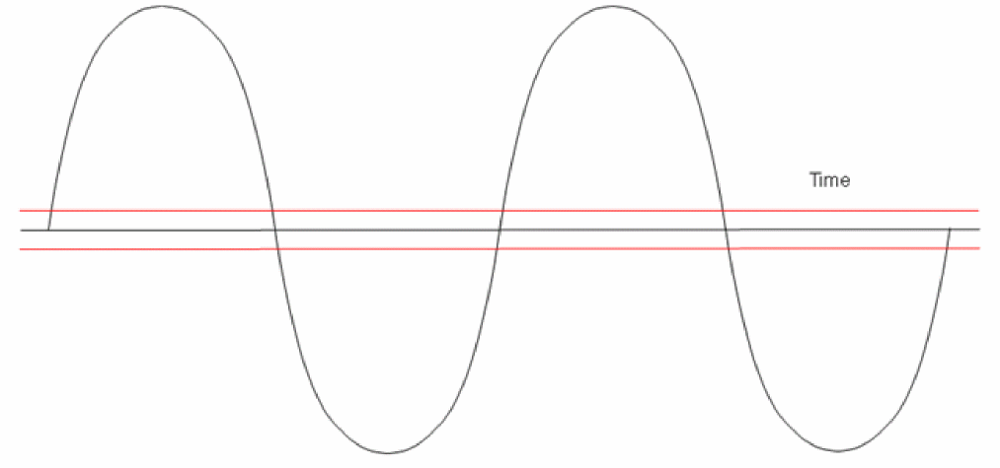Therelrefoption affects the transient-based analysis only (tran, pss shooting, qpss shooting, and envelope shooting). It uses different combinations of criteria (pointlocal,local,global) for the different settings ofrelref.
Note that in the order of most accurate to least accurate, the relref settings are pointlocal, alllocal, sigglobal, and allglobal. The default for most SpectreRF simulations is alllocal.
Integration Methods
Trapezoidal Method
In the transient, numerical integration is used for integrating current to get voltage on capacitors and for integrating voltage to get current in inductors. One method is to assume that the current is constant at the average current that flows during the interval. Because the current is constant, the voltage is a ramp during the timestep. The waveform that might be produced is shown below.
Note that the real waveform is usually a curve. This is shown below.
Note that the area between the straight line and the curve is the charge that is in the physical system, but not in the simulation. Errors are introduced in the simulation because of a finite timestep that is in the simulation. The timestep cannot go infinitely small because it would take infinitely long to run the simulation. As a consequence, numerical integration errors are inherent in the time-domain simulation because of the finite timestep.
This error can be controlled by making the timestep smaller, as shown below.
Note that by taking twice as many timepoints, the sum of the errors is much less than the previous case. One way to accomplish this is to set a small maximum timestep. Although this produces the most accurate waveform, the runtime cost is usually quite high because the maximum timestep is used everywhere in the simulation.
When the waveform is at a constant value, there is no numerical integration error. The place where the error occurs is the curvature that is produced by the circuit. Spectre controls the timestep based on the curvature that is produced by the circuit. Because of this, the timestep is inherently a variable, as shown in the below waveform. The X symbols on the waveform indicate the place where a timepoint exists in the transient output data.
Note that where the waveform is flat, the timestep bumps out, and where there is a high curvature, lots of points are taken. In this way, the accuracy of the waveform is preserved with the least possible number of timepoints. This is done to reduce the runtime and is the normal method of timestep control.
The trapezoidal method is generally good for normal transient simulations because the method does not exaggerate or damp any ringing that the circuit might produce. Although it is not visible in the waveform above, the trapezoidal method has ringing. At each point, there is an error term that alternates its sign at each timepoint. First a bit up, then a bit down.
Gear2 method
In the Gear2 method, the current is assumed to be a polynomial fit in the timestep. This requires the simulation history to determine the curve. Because of this, the simulation takes about 5% longer to run compared to trapezoidal. Because the current is more accurately represented, the method is a bit more accurate than trapezoidal. It also slightly numerically damps any ringing that the circuit might produce. This effect disappears completely when the timesteps are small, which is usually accomplished by setting reltol to 1e-4 or smaller. For very high Q circuits, small numerical integration errors cause large errors in the voltage in the resonator. For that reason, harmonic balance is usually preferable to shooting for high Q circuits. If you must simulate a high Q circuit using the transient analysis, always use the traponly numerical integration method.
Controlling Accuracy
The simulator works by setting a limit for the curvature. This limit is controllable by setting lteratio and/or reltol. The product of reltol times lteratio sets the actual limit. Increasing lteratio sets a higher amount of curvature and leads to more errors when evaluating the numerical integration. The output with lteratio set to 10 times the default, is shown below.
The waveshape is substantially similar. In this case, it is OK to allow more numerical integration errors. If the details of a small portion of the waveform need to be accurate, zoom in to the time scale that is needed, as shown below.
Note the obvious piecewise linear behavior in the waveform. This is an indicator that at this time scale, the error is unacceptable. Lteratio and reltol were reduced for the following waveform.
The waveshape is substantially changed. This is because the numerical errors were significant at the time/voltage scale that we needed for the measurement.
There is still a bit of piecewise linear behavior. Reducing reltol and lteratio further will only be slightly more accurate and the runtime will be much longer. In simulation, a trade-off of accuracy versus runtime needs to be made using reltol, vabstol, and lteratio to get the accuracy that is needed without excessive runtimes.
Shooting PSS
Overview
Shooting is a way of calculating the steady-state waveforms of a periodic system. Any waveshape is allowed as an input with the limitation that the waveform must be periodic. First, a transient is run for the duration set by the Stop time (tstab) option. Next, one period of the pss beat frequency is simulated while still using the normal transient algorithm. Then, the transient continues for one period of the waveform with the addition of saving all the solution matrices at each timestep. This is called the shooting window.
At the end of simulating this period of the input, the beginning and ending states are compared. If all the voltages and currents are equal, the steady-state solution has been achieved, and the simulation stops. In general, because the transient analysis starts from a settled DC solution at time zero, there is still settling behavior going on at the end of the first time through the shooting window. This causes the solutions to be different at the beginning and ending of the shooting window. The simulator now looks through all the solution matrices which contain information about the behavior of the circuit and the nonlinear resistors, capacitors, and inductors in the circuit, Using this information, an estimate is made of the final settled voltage for every node in the circuit. This is brought back as the starting point for the shooting window, and one period is run again. At the end, the voltages and currents are again compared to see if they are equal. This process continues until the beginning and ending states are equal. This process is called the shooting Newton method.
Graphically, this is shown below.
The estimate for every node is brought back as the starting point, and the period just after 15 nsec is simulated again. This continues until the beginning and ending voltages and currents almost match.
Note that PSS Shooting is really an extension to the transient analysis. All the concepts and options that were discussed before in the transient review section apply to shooting pss as well.
Oscillators
The algorithm is slightly different for oscillators. First, the tstab interval is simulated. Next, a single period of the estimated frequency from the Choosing Analyses form is simulated. So far, this is exactly the same as driven pss. To achieve reliable convergence, the oscillator must reach near the steady-state behavior during this phase.
Because the oscillator may also have a frequency divider at the output, additional four periods of the estimated frequency in the pss Choosing Analyses form are simulated. During this time, Spectre looks for a frequency divided output.
Next, one period of the lowest frequency in the circuit is determined. If the oscillator does not have a frequency divider, then one period of the oscillator output is solved for. If the oscillator has a divider, one period of the divided down frequency is solved for.
Once one period is determined, then the steady-state waveforms for all the nodes and the period are solved for so that the beginning and ending voltages and currents almost match, and the period is stable for at least two iterations. Because the period is an additional variable to be solved for compared to a driven circuit where the period is known, oscillators typically take more iterations to converge to the solution.
Oscillator Tuning Mode
Pss has the ability to tune an oscillator to a specified frequency, and then run the small-signal analyses (usually noise) that are specified. This is typically used in sweeps and in Monte Carlo simulations where the phase noise is desired at a specified frequency.
Tuning mode adjusts a parameter in the circuit to produce the set frequency target. This is done automatically when tuning mode is enabled without setting any sweep parameters or interpolation of the resulting curves. When the tuning frequency is reached, any small-signal analyses like noise are run. This allows the simulator to tune the oscillator to a specified frequency and then make a noise measurement. This is useful in Monte Carlo analysis to see how the oscillator performs with process variations. The parameter to be tuned can be a variable, temperature, or a specified device parameter. Oscillator tuning mode is also supported in the hb analysis. See Chapter 3, “Frequency Domain Analyses: Harmonic Balance,” for details.
In this mode, the target frequency to tune to is the frequency that is specified in the pss Choosing Analyses form as the fundamental frequency. You specify a parameter that is to be varied to achieve the desired frequency. This can be a variable, a device parameter, or temperature. When the analysis runs, the oscillator will be tuned to the desired frequency, and then all the small-signal analyses will be run.
Direct plot functions have been added to plot the tuning parameter.
Delay Time
All the signal sources have a property called delay time. During the delay time, the source stays at a constant value, and then the waveform starts. The system does not become periodic until the longest delay time has elapsed. Delay times longer than one period of the output waveform of a source should be avoided. The beginning of the tstab interval is the longest delay time in the sources of the circuit.
Piecewise Linear Sources for Power Supplies
In some cases, nonperiodic piecewise linear sources are used. This is one way to start an oscillator by giving the power supply a small bump just after the transient analysis starts. In this case, set the first point at zero seconds and 80% to 90% of the full supply voltage, and specify a second point about half period of the operating frequency at the full supply voltage. Do not specify a point at one second (or some other fairly large time) and the supply voltage. Spectre will maintain the voltage of a source if the simulation time exceeds the last point from a piecewise linear source. If there is a one second point, then something that is usually at a high frequency has to simulate for one second before the circuit becomes periodic. Tstab would start at the last point in the piecewise linear waveform.
Tstab
In the pss Choosing Analyses form, there is a property called Stop time (tstab). The default value for tstab is zero. However, if a value is specified for the parameter, then a normal transient is run to a stop time equal to tstab. For driven circuits, it is seldom necessary to set tstab, but oscillators usually require it to be set.
For shooting pss, when Run transient? is set to yes, the Detect Steady State option is enabled automatically. This option can be selected to switch from running tstab directly in the shooting window when steady state is detected, if this occurs before the stop time specified in the Stop Time(tstab) field. When you set the Run transient? option to Decide automatically, tstab is run until steady state is achieved and then switches to the shooting phase automatically.
Dynamic parameters are supported in tstab just like in the transient analysis. Typically only reltol is changed over the tstab interval with loose (large) values of reltol at the beginning of tstab and then tighter values toward the end. A single option is supported in the GUI. Note that the default values are already fairly loose in the tstab interval by default.
Beat Frequency
The beat frequency is the periodicity of the system. If a single input frequency is applied, it is the frequency of the input signal. For frequencies that have inconvenient frequencies, but easy periods, a selection is available to set the period instead of the frequency.
If there are two input frequencies, the highest common multiple frequency must be set as the beat frequency. The limitation is that an integer number of cycles must be simulated for all the input frequencies. This is required because pss checks the differences between the currents and voltages at the beginning and end of the shooting window and this difference must be zero. This forces an integer number of cycles for all the sources in the circuit to be simulated.
As an example, if a 1 GHz frequency is applied to the system, the beat frequency (periodicity) of the system is 1 GHz. If 1 GHz and 1.1 GHz frequencies are applied, the beat frequency is 100 MHz. In this system, 10 cycles of 1GHz and 11 cycles of 1.1 GHz need to be simulated to get the steady-state waveform. If 1 GHz and 1.001GHz need to be simulated, the beat frequency is 1 MHz. This is not a practical pss simulation because 1000 cycles of 1 GHz and 1001 cycles of 1.001 GHz need to be simulated, and at least 3003 harmonics need to be calculated to measure the third harmonic of 1.001 GHz. The time required for the simulation and the memory requirement is excessive for this case. In this case, using qpss or hb is much faster and requires much less memory.
For oscillators, an estimate of the oscillator frequency is required in the Beat Frequency field. If the linear oscillator initial condition is used, the frequency range needs to be from 0.5 to 1.5 times the actual oscillation frequency. If the default oscillator initial condition is used, then the frequency must be between 0.25 and four times the actual frequency of oscillation.
Number of Harmonics
In the case of PSS Shooting, this is a post-processing specification that might have an effect on the minimum number of timepoints in the solution. This parameter specifies the number of harmonics to calculate in the Fourier transform that is run after the time-domain simulation to calculate the harmonics of the large-signal response. The Fourier transform is not an FFT that requires exactly spaced samples of the waveform. Rather, it is Fourier integral-based, which uses the timepoints that were actually calculated by the pss analysis as the input. Since the waveform that the Fourier-integral based algorithm sees are the actual timepoints, all the harmonics specified are accurate, even if you only specify one or two harmonics. Zero (0) is a perfectly legal value for the number of harmonics, and it just means that no Fourier transform will be run after the time-domain solution is calculated.
If the number of harmonics is raised above 10, then more timepoints will be forced in the pss solution in order to keep the accuracy of the frequency-domain results very high. 20 timepoints will be run in the period of the highest harmonic. Therefore, if maximum harmonics is set to 20, a minimum of 400 timepoints are forced in the pss analysis. If a large number of harmonics is specified, runtime and memory requirements get large. Unless you really need a lot of harmonics, do not set a large number.
Accuracy Defaults (errpreset)
Errpreset sets the default values for six options in order to tune the simulator for your needs. Use conservative if you need high accuracy. Moderate is a general-purpose setting, and should be used for most simulations. Liberal is not recommended.
The following chart summarizes the options and the values for driven circuits.
|
Reltol1 |
Lteratio2 |
|||||
For example, if errpreset is set to moderate and reltol is set to 3e-4, reltol during the tstab interval is 3e-4, and reltol in the shooting window is also 3e-4 because it is smaller than 1e-3, which is the maximum value that can be used in the shooting window. Lteratio is 3.5 for the tstab interval and for the shooting window.
If errpreset is conservative and reltol is set to 3e-4, then reltol in the tstab interval is 3e-4, and in the shooting window it is 1e-4. This is because the maximum value for reltol in the shooting window for conservative is 1e-4. Lteratio is 10 for both the tstab interval and the shooting window.
For oscillators, the defaults are slightly different.
|
Reltol3 |
Lteratio4 |
|||||
PSS Shooting Convergence
As discussed earlier, the waveform is iteratively solved for during the shooting window. This means that exact solutions are never obtained because there is another iteration that will produce a closer answer. The iterations must stop when the solution is accurate enough. This is set using the convergence options reltol, vabstol, iabstol, lteratio, errpreset, and an option called steadyratio. The iterations stop when all the voltages in all the nodes and all the currents in all the branches match at the beginning and end within the following tolerance:
(Convergence Criteria) * Lteratio * Steadyratio
The convergence criteria depend on the setting of reltol, vabstol, iabstol, errpreset, and the setting of relref. Lteratio defaults to 3.5 or 10, depending on the setting of reltol and errpreset.
Steadyratio depends on the setting of errpreset. For more details regarding this option see Steadyratio (Shooting Only).
ADE Implementation and Numerical Noise Floor
Next, we will discuss how SpectreRF is implemented into ADE Explorer and also provide information about how the simulation accuracy is affected by setting a number of simulator options.
A transistor-level LNA is shown below.
The input frequencies for the transistor-level LNA are set to 2.4 GHz and 2.5 GHz, as shown in the ADE Explorer window below.
Note that this setup is approaching the limit of what pss can do because 25 periods of the higher input frequency need to be simulated in the shooting window. If the frequencies were closer together, qpss or hb would be much more efficient.
The pss Choosing Analyses form is shown below.
All the sources in the circuit are read in to the Fundamental Tones table at the top of the Choosing Analyses form. When the Auto Calculate option is selected, ADE Explorer calculates the periodicity of the circuit and displays it in the grayed-out Beat Frequency field.
50 harmonics have been set to allow the second harmonic of the 2.5GHz tone to be calculated.
Driven circuits usually do not require tstab to be set. For circuits that do have tstab set simulation options can be changed at different times during the tstab interval by using dynamic parameters. This example shows reltol starting very loose, and then switching to a more accurate value at 10nsec. The setting of reltol during tstab is shown in the spectre output window.
Accuracy and Settings and Trade-Offs
A comparison is made for several settings. Moderate and conservative settings are used.
After that, values for reltol and vabstol are specified, as shown below in the Simulator Options form. This form can be opened by selecting Simulation - Options - Analog in ADE Explorer.
First, reltol=1e-5 and vabstol=3e-8 are used, and then reltol=1e-6 and vabstol=1e-8 are used. Finally, a lot of timepoints are forced by setting the maximum harmonics to 1000. For this test, reltol and vabstol are kept at 1e-6 and 1e-8.
The spectral result from all the simulations is shown below.
A marker is placed at 1.1 GHz in order to measure the numerical noise floor of the simulation.
The top is with errpreset set to moderate.
The third is reltol=1e-5 and vabstol=3e-8.
The fourth is reltol=1e-6 and vabstol=1e-8.
The final one is with 1000 harmonics set. The display is scaled to show only the first 30 harmonics.
Note that the numerical noise floor drops with the steps that are taken to increase accuracy. The runtime and memory requirement also increases for each successive level of accuracy.
This is a good general series of steps to improve the accuracy of a shooting simulation. The basic process is to set up and run the simulation, make the accuracy better, and run the simulation again. If the answer does not change, then the original setting is good enough. If the answer changes, increase the accuracy again. Continue until you find the setting of the options that cause the answer to be accurate without excessive runtime.
Note that there is a practical minimum numerical noise floor at about -135dBm. Although it might be possible to lower the noise floor a bit more by taking even more timepoints in the simulation, the time and memory requirements usually are not worth the lower noise floor. Still, -142dBm is a pretty good numerical noise floor of about 3e-8 volts RMS.
Additionally, you might try using the highorder option to improve accuracy. This is shown in the pss options section. This option requires significantly longer to run but produces a more accurate result.
Which Engine Should be Selected?
Conceptually, shooting and harmonic balance produce the same answer as long as enough harmonics and/or a high enough oversample factor are used in hb and the accuracy of shooting is controlled well enough for your requirement. In general, if the accurate waveform is desired for a system with square waves in the solution, then shooting should be selected. If the system is very nonlinear like a sample-and-hold or a switched-capacitor filter, shooting should always be used. If the waveforms are nearly sinusoidal, then harmonic balance should be selected. If it is something in between, then try both engines and use the one that produces the fastest runtime. Note that even for square wave systems, harmonic balance can be used effectively as long as the time-domain waveform is not desired, and oversample factor is set to at least four. For more details on harmonic balance, see Chapter 3, “Frequency Domain Analyses: Harmonic Balance”.
Important Outputs in the Spectre.out File
The circuit inventory (highlighted in red above) lists the contents of the circuit.
If APS is used, it is noted in the section highlighted in green above.
The section highlighted in blue below contains the option settings for tstab simulation.
The section highlighted in brown below lists the options for shooting iterations.
When the Conv_Norm number gets less than one, the iterations stop. In this case, the error is 6.03e-3 times the maximum allowed, and the largest mismatch is I0.I28.I6.Is1 terminal 1, and the mismatch is 10.1339 microamps (highlighted in green below).
When the Conv_Norm is less than one, the iterations stop (highlighted in red above).
The total number of timesteps in the solution is listed (highlighted in blue above). The first listing is the number of timesteps in the tstab interval. The second listing is the number of timepoints in the shooting interval.
CPU time, elapsed (clock) time, and memory statistics are listed (highlighted in pink above). When APS is used with multi-threading, the CPU time is generally larger than the elapsed time. CPU time totals the usage of all CPUs.
Guidelines for Setting up Oscillators for Simulation
Beat frequency
Enter a frequency that is between 0.25 * actual frequency to 4 * actual frequency. As long as the specified frequency is within this range, the solution should be possible.
Tstab
Tstab is the time interval that is used to start the oscillator and allows the oscillations to build up to a near steady-state amplitude. Decide automatically is recommended for the Run transient? selection to automate the tstab setting.
Dynamic parameters are available during the tstab interval. Dynamic parameters allow changing option settings during tstab and are typically used to reduce the accuracy (which speeds up the simulation) at the beginning and then tighten the accuracy at the end to improve convergence.
Different ways to start the oscillator
The first thing to do when simulating oscillators is to reliably start the oscillator. Different methods are used for different types of oscillators. These are:
-
Moderate Q Feedback Oscillators: If the oscillator is a feedback oscillator, then the linear oscillator initial condition (oscic) is highly recommended. When this is selected, the beat frequency needs to be within 0.5 * actual frequency to 1.5 * actual frequency. This performs a variation of the linear stability analysis after the DC analysis for the first timepoint in the tstab interval. It provides a very good estimate of the oscillating frequency and amplitude at every node and this estimate is used at the beginning of the tstab interval. This allows the duration of the tstab period to be about 5 to 10 periods of the oscillator frequency for normal Q circuits. In many cases, the tstab time can be set to zero. Doing this, causes the pss analysis to start with the estimated frequency and amplitude from the linear oscic.
Another way to start the oscillator is to use a piecewise linear source as the power supply. At time zero, the voltage is about 80% to 90% of nominal. The second timepoint should be about one half the period of the oscillator and the full power supply voltage. The bump in voltage causes a voltage transient that starts things up. For differential oscillators, do this on one side of the differential system.
A third way is to add a current pulse to a point in the circuit that causes the oscillation to start using an ipulse component from analogLib. Specify a single pulse that is large enough to get things started. This is accomplished by adding an ipulse component from analogLib and specifying the zero value to zero, the one value to be about a milliamp, the rise and fall times to about one tenth of a period, and the pulse width to about three tenths of a period. Leave the period field blank to indicate that only a single pulse should be generated. The ipulse is an ideal open when the current is zero, so it does not load the circuit.
For all the different methods other than the linear oscic, tstab must be long enough for the oscillator to reach near steady-state operation. For most oscillators, this is about 100 periods of the oscillation frequency. - High Q Oscillators: For high Q oscillators, harmonic balance is recommended. The reason for this is that in harmonic balance, the motional equivalent circuit (electrical representation of the crystal) goes directly into the frequency domain representation of the circuit. In shooting, there is always a small numerical integration error in the solution. For high Q circuits, this error causes uncertainty in the pss result that can cause the pss analysis to become inaccurate.
- Ring Oscillators: For ring oscillators, start the oscillation by specifying initial conditions at the output of one stage of the ring. Force the output of this stage to low or high with the initial conditions. This will force the oscillator into a known state at time zero, and then at the beginning of the transient, the node(s) will begin the switch to the other state, thereby starting the oscillator. Tstab should be set to about 1 or 2 periods.
For all the different methods other than the linear oscic, tstab must be long enough for the oscillator to reach near steady-state operation. For most oscillators, this is about 100 periods of the oscillation frequency. When using linear oscic, this can usually be shortened to about 10 periods or even zero.
As usual for any pss analysis, first the tstab interval is simulated. Then one period of the frequency supplied in the pss Choosing Analyses form is simulated. For oscillators, an additional four periods of the specified frequency in the pss setup is simulated. In the last interval, Spectre checks for possible divided-down frequencies. If these frequencies are found, Spectre adjusts the frequency/period to correspond to the new lower frequency and tries to solve for that lower frequency.
Saveinit- A way to save the startup waveform
For many oscillators, it is desirable to see the actual startup waveform in order to verify that the startup is robust. To see the startup waveform, select yes for the Save Initial Transient Results (saveinit) property in the Choosing Analyses form. This will write the initial waveforms to the output data for viewing.
Oscillator Node- Used to estimate the frequency for the first pss iteration
When linear oscic is used, the oscillator node must be a node that is inside the feedback system for the oscillator. This is used to estimate the initial oscillating frequency. If the oscillator is differential, specify a pair of nodes in a symmetrical location in the oscillator.
Regardless of the setting for oscic, the oscillator node is used at the end of the tstab interval to determine an initial estimate of the actual oscillation frequency.
If the amplitude on this node drops to less than 1mV peak, an error is displayed indicating that the amplitude of the oscillator node is too small to properly estimate the frequency, and the simulation stops. If the frequency gets to 1000 * frequency specified, an error is displayed indicating that the frequency is too high to be reliable.
ADE Implementation
Below is an example ADE Explorer setup for an oscillator circuit. Let us set up a PSS analysis, run the simulation, and plot the output waveform.
Consider an oscillator shown below.
-
Select Analyses - Choose to open the Choosing Analyses form.

- Specify an estimate of the oscillation frequency (highlighted in red above). If you use linear oscic, the estimate should be between 0.5 * actual oscillating frequency to 1.5 * actual oscillating frequency. Otherwise, it can be between 0.25 and 4 times the actual operating frequency.
- Select Conservative (recommended) for oscillators (highlighted in green above).
- Select the Calculate initial conditions automatically check box.
- The oscillator node should be inside the feedback system if linear oscic is used (highlighted in blue above). If the default oscic is used, the node just needs a signal on it.
-
Select linear oscic (recommended) for feedback oscillators (highlighted in purple above).
default oscic starts from the time zero timepoint in the tstab interval.
Spectre Output File (Oscillators)
The estimate of the oscillation frequency from the linear oscic (highlighted in red above) is shown first.
The frequency from the end of the tstab interval (highlighted in red above) is displayed next.
The solution frequency and the number of timesteps (highlighted in red above) are shown. The first listing of accepted pss timesteps is the number of timesteps in the tstab interval. The second number is the number in the shooting interval.
Dynamic Parameters in tstab
Simulator options can be changed at different times during the tstab interval using dynamic parameters. This is typically used to loosen convergence tolerances which makes the simulation less accurate but faster at the beginning of tstab and then tightening the tolerances at the end to improve convergence. Single options are supported directly in the Choosing Analyses form.
Oscillator Tuning Mode
Oscillator tuning mode is provided to tune the oscillator to a desired frequency and then run the selected small-signal analyses. This is useful for sweeps and for Monte Carlo simulations. To run an oscillator tuning analysis, perform the following:
- Open an oscillator circuit, and start ADE Explorer. Open the Choosing Analyses form, and select pss analysis.
-
Fill out the form as usual, except for the following:
- In the Fundamental Frequency field, type the desired frequency target.
- Click the check box next to Enable tuning mode analysis.
-
Select whether you want to tune a variable, temperature, or a component parameter. the example below shows a component parameter.
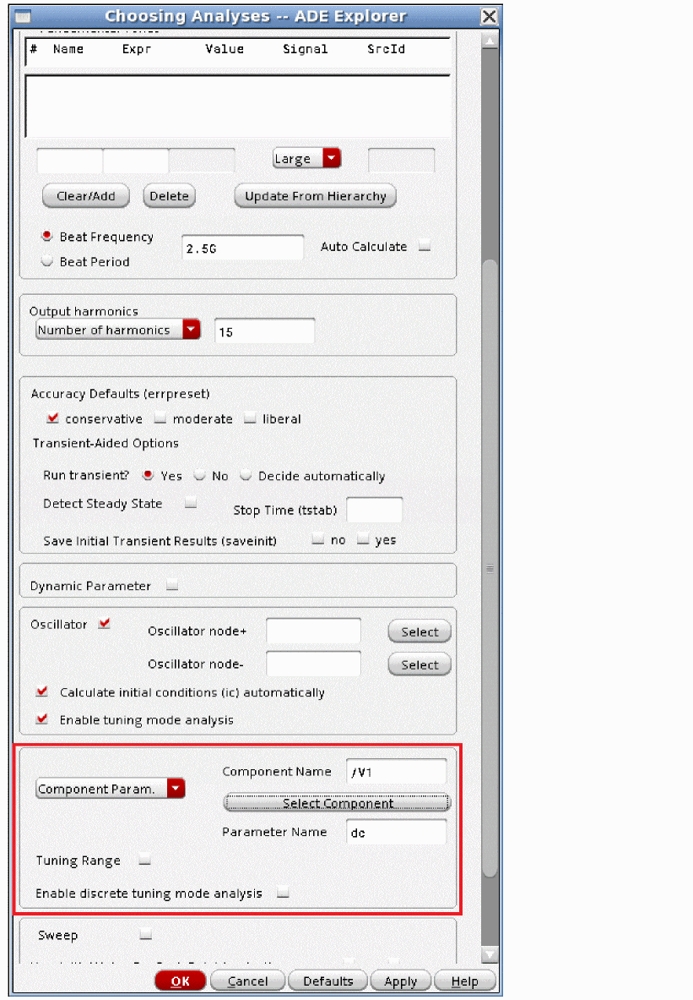 - Enable the desired small-signal analyses.
-
Run the analyses. When the simulation completes, open the Direct Plot Form from ADE Explorer.
PSS Options
The options are divided into five tabs: Convergence, Accuracy, Output, Reuse, and Misc (miscellaneous).
The options are shown in the order that they occur in the options form in ADE Explorer.
Convergence tab
Ic (Shooting and Harmonic Balance)
Initial conditions can be specified graphically by selecting Simulation - Convergence Aids - Initial Condition in ADE Explorer. Initial conditions can also be specified from a file using the readic property. Capacitors and inductors have the initial condition properties in the property list for the component. For capacitors, this is an initial voltage across the capacitor, and for inductors, it is an initial current in the inductor. The default is to observe all the initial conditions in the DC analysis that is used as the time-zero timepoint. The initial conditions force a voltage or current to be present in the time-zero solution. The initial conditions are released for the rest of the transient simulation in the tstab interval. The ic option controls the initial conditions that should be observed in the time-zero timepoint. all is the default. dev means that only the initial conditions on capacitors and inductors are observed. node means that only the initial conditions on a node are observed. dc means that no initial conditions are observed. The example below shows the ic option set to node.
Skipdc (Shooting and Harmonic Balance)
In some cases, the time-zero timepoint DC analysis does not converge. Instead of stopping the simulation, skipdc allows the tstab simulation to continue using an assumed solution for the time-zero timepoint. The default is no and a DC analysis is run to get the initial timepoint. yes means skip the DC solution, and proceed directly to the tstab simulation. All the nodes with initial conditions specified start at the initial condition value. Nodes with batteries start at the battery voltage. Nodes with no initial conditions start at zero volts. For skipdc=yes, the signal sources start as specified immediately in the tstab simulation. sigrampup uses the same assumptions for the starting voltages as yes does, but the start time is set to negative one tenth of the stop time for the tstab interval. At this time, the signal source time-varying part starts at zero and linearly ramps up to the full value at time = zero. After time = zero, the sources have the full amplitude time-varying part. The example below shows the skipdc option set to sigrampup.
Readic (Shooting and Harmonic Balance)
This specifies an ascii file that contains two columns to be read as initial conditions. The first column is the node name. The second column is the voltage value. If the entry does not start with / (slash), the entry is located in the netlist directory. To find the netlist directory, select Setup- Simulator/Directory/Host in ADE Explorer. Look in the Project Directory field for the location of the simulation directory. Navigate to that directory and then to the <Circuit Name>/spectre/<schematic or config>/netlist directory. You can also click ( ) and browse to the directory. An example is shown below.
) and browse to the directory. An example is shown below.
Readns (Shooting and Harmonic Balance)
This specifies an ascii file with the same format as an ic file that is used as nodesets for the time-zero DC solution. Nodesets do not force a voltage to be held for the time-zero solution. Instead, they are a way of speeding up the time-zero calculation. As a suggestion, set the write option and the readns option to the same filename. The write option writes the time-zero solution to a file. When this is used as a starting point, many fewer iterations are needed for the time-zero point to converge. An example is shown below.
Cmin (Shooting and Harmonic Balance)
cmin can be used to improve convergence in the tstab and shooting intervals for shooting and for the tstab interval for harmonic balance. If a value is set for cmin, a capacitor with this value is added to every node with the other terminal of the capacitor connected to the global ground node. If a 10f to 50f capacitor is added, this prevents instantaneous changes from occurring from timepoint to timepoint, thus improving the convergence at the cost of adding non-physical capacitors to the circuit. An example with 10 femtoFarads is shown below. Note that if 10 is entered, a 10 Farad capacitor is added from every node to ground. Remember the multiplier in the entry. An example is shown below.
Maxiters (Shooting and Harmonic Balance)
The transient analysis for tstab (for both shooting and hb) and shooting interval iterate to a solution at each timepoint. maxiters specifies the maximum number of iterations before the timestep is cut for another try at convergence. In some cases, model parameters can cause discontinuities in the device current or capacitance. If this occurs, the change in the circuit condition can be large enough to require more than the five iterations that are the default. Specifying maxiters to the 40 to 100 range usually allows the simulator to converge in spite of the discontinuity. An example with maxiters set to 40 is shown below.
Accuracy Tab
The Accuracy tab is split into two categories: INTEGRATION METHOD PARAMETERS and ACCURACY PARAMETERS. For each parameter, the most commonly used settings are discussed.
Method (Shooting only)
This option controls the integration method for the shooting window. Note that harmonic balance does not have the method option because the solver works in the frequency domain. The default value for the shooting window is determined by the setting of errpreset. For moderate and conservative, the default is gear2only. For liberal it is traponly. Generally gear2only is preferred because of the absence of trapezoidal ringing inherent in the trap (trapezoidal) method. Note that liberal is not recommended for RF simulation.
In the case where you are simulating a crystal oscillator with shooting, the method option should be set to traponly. The ringing that is inherent in the trapezoidal method is present and may cause convergence failure because of the unpredictable amplitude of the ringing, which depends on the accumulated total numerical integration error. The benefit of having a method that neither damps nor emphasizes the oscillations is required when simulating high Q oscillators. Even though trap neither emphasizes nor damps the oscillations, the small numerical integration errors caused by the finite timestep can still cause some inaccuracy in the simulation result. Using gear2only is not recommended even though convergence is more likely because the numerical damping inherent in the gear2only method causes unacceptable damping in the resonator, which causes smaller than real amplitude inside the resonator. Because of this, the overall solution will result in an error and can cause inaccurate measurement of the phase noise.
Tstabmethod (Shooting and Harmonic Balance)
This option controls the integration method in the tstab interval. The default value is determined by the setting of errpreset and whether the circuit is driven or is an oscillator. For moderate and conservative with a driven circuit, the default is gear2only. For liberal it is traponly. Generally gear2only is preferred because of the absence of trapezoidal ringing inherent in the trap (trapezoidal) method. The default for tstabmethod is traponly for oscillators. traponly is used for oscillators because with the defaults, the tstab interval uses relatively loose convergence options in order to speed up the simulation. This causes relatively long timesteps which for the gear2 method would cause noticeable numerical damping. traponly does not numerically damp, therefore, it provides a better estimate of the oscillating frequency and amplitude. An example with tstabmethod set to gear2only is shown below.
Relref (Shooting (tstab and shooting window) and Harmonic Balance (tstab only))
In the order of most to least accurate, the relref settings are pointlocal, alllocal, sigglobal, allglobal. The default for moderate and conservative is alllocal which is preferred. relref is used in the transient analysis in the tstab interval for both shooting and harmonic balance and in the shooting window for shooting. relref is used in hb only for the tstab interval because the solver works in the frequency domain. In some cases, the timestep can collapse to near zero. The symptom is that in the Spectre output window, the percent done number remains the same for many reporting intervals. The solution to this is to set relref to sigglobal, which is slightly less accurate. In the Fourier transform, the noise floor usually degrades by 3 to 6 dB. Another possibility is to use the lteminstep option as described in the AdditionalParams option of the Misc tab.
Refer to Relref for a detailed discussion on relref.
An example with relref set to sigglobal is shown below.
Lteratio Shooting ((tstab and shooting window) and Harmonic Balance (tstab only))
lteratio is a multiplier for the allowable numerical integration error in the tstab interval and the shooting window. The default is 3.5 or 10 depending on the setting of reltol and errpreset. See Controlling Accuracy for details. lteratio cannot be set smaller than 1.0 and is normally between 3.5 and 100. In some cases, the timestep collapses to near zero and setting relref to sigglobal does not fix the problem. In this case, there might be a model discontinuity. To test this, disable numerical integration timestep control by setting lteratio to 1e9. Note that this is an extreme measure not to be used under normal simulations. If the timestep still collapses, there is a discontinuity in one of the models in the circuit. This could be a device model or a Verilog-A model. If it is necessary to set lteratio very large to get the simulation to complete, you must also set maxstep small enough to preserve the accuracy of the simulation. An example with lteratio set to the smallest value of 1.0 is shown below. Note that lteminstep might also be used to treat this condition. See the AdditionalParams (Shooting and Harmonic Balance) section in the Misc tab on how to use this option.
Steadyratio (Shooting Only)
The maximum mismatch between the beginning and ending values for the voltages and currents in the shooting window is determined by the convergence criteria * lteratio * steadyratio. In some cases, with oscillators, conv_norm drops to a small value and then bumps up and down. However, it never gets less than one, therefore, the convergence fails. In this case, setting steadyratio to 1.0 will cause convergence if the conv_norm number gets to 10 or less. While larger settings of steadyratio may cause the oscillator to converge, more mismatch from beginning to end of the shooting window is allowed, which allows much more startup behavior to be in the solution. Setting steadyratio larger than one is not recommended. An example with steadyratio set to 1.0 is shown below.
Steadyratio (Harmonic Balance Only)
steadyratio in harmonic balance is used as a multiplier for the maximum delta that is allows from iteration to iteration. The default is 1.0. In some cases, resd_norm falls below one which indicates that the KCL check at each node is passing, but the Delta Norm is greater than one, which indicates that the motion from iteration-to-iteration is larger than the maximum allowed. Only in this case should steadyratio be set larger than one. Set it just larger than the value of the resd_norm. In this case, the smaller harmonics are changing relatively a lot, but because they are small, they do not affect the accuracy of the solution.
Itres (Shooting Only)
Use the default for this option. itres controls the precision (number of digits solved for) in the first iteration. The default is 1e-4 which causes 4 digits of resolution in the first iteration. Subsequent iterations are solved with more precision.
Itres (Harmonic Balance Only)
The default for itres for harmonic balance is 0.9, which allows up to 90% difference from the exact solution on the first iteration. Although this seems large, solving exactly for the first iteration can frequently cause non-convergence. As the iterations progress, the difference is reduced so that at the solution, full accuracy is achieved. In the case of very linear systems like an amplifier, tightening itres to the 1e-2 to 1e-4 range can reduce the number of frequency domain iterations and runtime. Also, when transient assist is used, the fft provides an excellent starting point for the first iteration. Therefore, setting itres to the 1e-2 to 1e-4 range can also reduce the number of frequency domain iterations and the runtime.
Resgmrescycle (Shooting and Harmonic Balance)
Leave this option at the default.
Inexact Newton (Shooting Only)
In the simulation time between iterations, an estimate is made for the starting point for the next iteration (shooting) or the harmonic content for the next iteration (hb). inexactNewton causes an inexact solution for the matrix that calculates the next starting point to be calculated. In some cases, solving the matrix exactly on the first iteration can cause the iterative solver to need many iterations to achieve convergence. Setting inexactNewton causes a different series of iterations, which may speed up the simulation. The inexactness is reduced as the iterations progress. Try this option when the time spent between iterations is excessive.
Maxacfreq (Shooting Only)
If maximum sideband in pac, pnoise, pxf, or psp is set larger than 40, then the pss option maxacfreq needs to be set to the pss beat frequency times the largest maximum sideband number in the small-signal analyses. For example, if pac has 20 for maximum sidebands, pnoise has 70, pxf has 10, and psp has 50, then maxacfreq needs to be set to the pss frequency times 70.
Spectre may issue a warning at the beginning of the small-signal analysis like the following one from pnoise if maxacfreq is not set and more than 40 sidebands are specified. If you see this warning in a small-signal analysis, set the pss option maxacfreq to the pss beat frequency times the number of sidebands used in the small-signal analysis. In the example below, maxacfreq should be set to 150 * pss frequency.
An example of maxacfreq set to 120 GHz is shown below.
Maxperiods (Shooting and Harmonic Balance)
Any iterative method may fail to converge, and therefore needs an iteration limit. Maxperiods sets the maximum number of times the waveform in the shooting window can be simulated or the number of hb iterations. The default is 20 times for a driven circuit, and 50 times for an oscillator in shooting, and 100 for hb. This is a minimum allowed value for this option. Setting a number less than this default will be ignored by Spectre. This should be set higher only after watching the conv_norm during the pss iterations. If the conv_norm is trending down with no sudden large increase, setting more iterations may allow convergence. If the conv_norm trends down, and then gets large quickly, setting more iterations is very unlikely to help. An example with 100 is shown below.
Finitediff (Shooting Only)
Leave this option at the default. This is set automatically when readpss is set. It allows small changes in circuit values when the readpss option is used.
Highorder (Shooting Only)
The normal integration method in the shooting window is gear2only which is a second order integration method. highorder allows the integration method to have up to 16th order numerical integration, thus making the numerical noise floor of the simulation much smaller. When highorder is set to yes, a normal pss is run until convergence is achieved, and then that solution is refined using a higher order integration method. In practice this has value for very linear systems like LNAs, and has smaller value for more complicated blocks like mixers. When highorder is set to yes, there can be considerable time when the highorder algorithm is running, but there is no output to the spectre output window. This is normal for highorder. An example of highorder=yes is shown below.
Below is the runtime for highorder = no.
Below is the runtime and the report of the order that was used in the simulation when highorder was set to yes. The runtime is much longer.
Below is a spectral comparison between standard pss and highorder set to yes. The convergence options are at the default and conservative is selected. The results are for an LNA. The numerical noise floor at 1GHz dropped from -148dBm to -292 dBm.
Below is a comparison of runtimes for an LNA-Mixer circuit. The first is with highorder set to no, and the second is with highorder set to yes.
The runtime is much longer for highorder=yes, however, it allows the intermodulation products to be resolved. highorder set to yes is shown in the bottom subwindow below.
Psaratio (Shooting Only)
This is active when highorder is set to yes. The default is one. Setting smaller values produce more accurate solutions at the expense of runtime. Normally, the default should be used. In the example below, psaratio is set to 0.2 and a comparison of the numerical noise floor at 1GHz is made for the LNA used above. The noise floor dropped about 8 dBm when psaratio is lowered.
Maxorder (Shooting Only)
Leave this option at the default of 16. The order is set automatically in the highorder algorithm.
This is active when highorder is set to yes. This controls the maximum order used for the highorder method.
Fullpssvec (Shooting Only)
Leave this option at the default. At the end of each pss iteration, the settled steady-state point needs to be estimated. Because of the inherently variable timestep, not all the timepoints in the pss solution need to be used to estimate the next starting point. Setting fullpssvec to yes causes all the timepoints to be read in to calculate the starting voltages for the next iteration.
Fdharms (Shooting Only)
fdharms controls the number of harmonics of the pss beat frequency that are exposed to the nport, mtline, and tline components. This should be set to the number of harmonics that are set for maximum harmonics in the pss Choosing Analyses form.
Output Tab
Annotate (Shooting and Harmonic Balance)
This option controls the level of detail in the output log. The default is status. no produces no output. title produces only the conv_norm number at each iteration. sweep counts down from 10 to zero at each iteration and displays conv_norm. status provides output at 2.5% and then at every 5% of the way to the end at each iteration and the conv_norm number. steps provides output at each timestep in the simulation and the conv_norm number at each iteration. An example is shown below with title selected.
Below is the Spectre output with title selected.
Below is the output with sweep selected.
Below is the output with status selected.
Below is the output with steps selected.
Save (Shooting and Harmonic Balance)
The default is allpub. This saves all the public voltages at all levels of the hierarchy in the schematic. It excludes the internal nodes of the device models. all adds the internal nodes of all the devices. lvl saves all the nodes including the internal nodes of the devices through the level of hierarchy set in the nestlvl option. lvlpub is like lvl, but it does not save the internal nodes. selected saves only the nodes that are specifically saved. In ADE Explorer, this is accomplished using the Outputs - To Be Saved - Select On Schematic and then selecting the nodes and terminals specifically in the schematic. At the netlist level, this is accomplished by using a save statement with a list of names to be saved.
Nestlvl (Shooting and Harmonic Balance)
If save is set to lvl or lvlpub, this controls the maximum level of hierarchy to be saved. If nestlvl is 1, only the top level is saved. If nestlvl is 2, the top level and the next level down are saved. The value for nestlvl can be any integer. The example below shows lvlpub selected that saves two levels of hierarchy.
Compression (Shooting and Harmonic Balance)
Normally, this should not be used for RF simulation. It is not digital compression. For RF simulation, where the input is sinusoidal, the size of the results file will normally double. It is useful only for circuits that are predominantly square wave.
Oppoint (Shooting and Harmonic Balance)
Normally, this should be left at the default of rawfile. It controls where the time-zero operating point solution should be saved to.
Skipstart (Shooting and Harmonic Balance)
Normally, this is not used for RF simulation unless there is a very long tstab. It is a way of reducing the amount of data in the output file from the tstab interval by not writing many of the timepoints to the output file. Skipstart controls the simulation time where the skipping is to start. The default is 0 (zero).
Skipstop (Shooting and Harmonic Balance)
Normally, this is not used for RF simulation unless there is a very long tstab. This specifies the simulation time in the tstab interval where the skipping is to stop. The default is the stop time in the tstab interval.
Skipcount (Shooting and Harmonic Balance)
If skipstart and skipstop are set either skipcount or strobeperiod should be set, but not both. skipcount saves one out of every skipcount points to the output data file. A skipcount of 3 saves one, then skips two points. Skipcount of 10 saves one in 10 timepoints to the output file. The default is 1, which saves every point. An example is shown below. If tstab is 1u, the first 5% and the last 5% has all the datapoints saved, and in between, one out of ten points is saved.
Strobeperiod (Shooting and Harmonic Balance)
If skipstart and skipstop are set either skipcount or strobeperiod should be set, but not both. strobeperiod forces simulation datapoints between skipstart and skipstop at the interval of strobeperiod. Below is an example where the first 5% and the last 5% have all the datapoints, and in between there are timepoints at 0.01usecond intervals. Note that the simulator may actually calculate many points between the skipstart and skipstop times, but only the data at the strobe interval is saved to the output file.
Strobedelay (Shooting and Harmonic Balance)
strobedelay specifies a time after the skipstart point for the beginning of the strobing. strobedelay must be between 0 (zero) and the time set in strobeperiod.
Outputtype (Shooting Only)
This controls what type of information is to be saved in the output file. The default of all saves both the time and frequency data, but the data can be restricted to either time or frequency domain data.
Reuse Tab
Write (Shooting Only)
write specifies a filename to which the DC solution used as the first timepoint be written to. If the name does not start with slash (/), the file will be written in the netlist directory. To determine the netlist directory location, select Setup - Simulator/Directory/Host in ADE Explorer. The Project Directory field lists the location of the simulation directory. From this directory, the netlist directory is in <Circuit Name>/<simulator name>/<schematic or config>/netlist.
Writefinal (Shooting Only)
writefinal writes the final pss timepoint from the shooting window (not the final timepoint of the tstab interval) to the filename specified. See the description for write for the location. An example is shown below.
Swapfile (Shooting Only)
During the shooting interval, the solution matrices need to be saved in order to calculate the settled voltages of every node for the next iteration. The solution matrices are the internal solution for all the simultaneous equations for the circuit. The solution vector is also saved, and this is the solution voltages and currents. Normally, this data is kept in memory which makes the Spectre process get larger, starting with the second iteration of pss. On 32-bit systems, a maximum process-size of slightly less than 4GB limits the size of the circuit that can be simulated. Even on 64-bit systems, there is a limit set by the amount of memory that is installed on the system that is running Spectre.
Swapping that is done by the operating system is inefficient because there is no logical relationship for the swapped memory pages. Setting swapfile to a name causes Spectre to write all the solution matrices to the disk in sequential cylinders so that the read time from the disk is faster than using swapping by the operating system. Disk accesses are inherently much slower than memory accesses, however, using swapfile is considerably faster than swapping in the OS. Using swapfile reduces the size of the Spectre process so that it fits in the memory installed in the machine, or allows larger circuits to be simulated. There is a large amount of data that typically is written to the disk. Because of this, the best choice is to write the data in a disk that is local to the machine. If the data is written over a high-latency network, it might actually be better to use the local swap space. Only a trial can determine which is better. Below is an example of setting swapfile.
swapfile writes to the netlist directory by default. To locate the simulation directory, select Setup - Save Options and look in the Simulator Results Directory Location field. Navigate to that directory, and then navigate to the <Circuit_Name>/spectre/<schematic_or_config>/netlist directory. If the size of the swapfile gets larger than 1GB, it splits into multiple files, as shown below.
Writepss (Shooting and Harmonic Balance)
This option specifies that the full internal state of the pss analysis be written out to the file specified in the option. An example is shown below.
For large circuits, the file can be quite large.
Readpss (Shooting and Harmonic Balance)
This option specifies the file to be read in as a starting point for the next pss analysis. If nothing is changed in the circuit, then only one iteration is performed and small-signal analyses can be run with a much faster time for the pss analysis. Changes can be made to the circuit or analysis options as long as the topology of the circuit stays the same. Changes introduce a discontinuity at the beginning of the pss analysis, which might be large enough to cause the pss to not converge.
An example of readpss is shown below.
When a circuit value is changed, a refinement is done automatically. Basically, the pss analysis is re-run. Instead of starting from scratch, it starts from the solution that is in the writepss file. This is shown below.
Checkpss (Shooting Only)
Leave this option at the default of yes. This option is used in conjunction with the readpss option and the highorder option. If readpss is set to a filename, (The pss is read from a file), and if highorder is set to yes, only then is checkpss read. If checkpss is set to yes (default), then any changes in the circuit are observed, and the readpss file serves as the starting point for the pss iterations. If the checkpss option is set to no, then none of the changes to the circuit elements are used. The readpss file is used directly with no changes.
Saveclock (Shooting and Harmonic Balance)
saveclock saves the state of the simulation in the tstab interval at the time interval in seconds specified by saveclock. When the clock time has passed in the tstab interval, the file specified by the option savefile is created. When subsequent clock time intervals have passed, the file is overwritten. Use only one of the save options at a time. The example below shows saveclock set to three minutes.
Saveperiod (Shooting and Harmonic Balance)
saveperiod saves the state of the simulation in the tstab interval at the simulation time interval in seconds specified by saveperiod. When the simulation time has passed in the tstab interval, the file specified by the option savefile is created. When subsequent simulation time intervals have passed, the file is overwritten. Use only one of the save options at a time. The example below shows saveperiod set to 25 nanoseconds.
Savetime (Shooting and Harmonic Balance)
savetime is a list of times in the tstab interval where the state of the simulation is written out. The list should be specified with spaces between the entries. The information is written out with the filename specified in the savefile option with extensions for the time after that. Use only one of the save options at a time.
The example below shows four times in the tstab interval to save.
Savefile (Shooting and Harmonic Balance)
This is the file name to write out the tstab state information to. If you do not specify a filename that starts with the slash (/) character, the file is stored in the netlist directory. To locate the netlist directory, first select Setup - Simulator/Directory/Host menu in ADE Explorer, and read the path to the project directory. This is the path to the simulation directory. In the simulation directory, navigate to the <circuit_name>/spectre/<schematic or config>/netlist directory.
Recover (Shooting and Harmonic Balance)
recover specifies the file name to recover the tstab simulation from. If saveperiod or saveclock are used to make the savefile, then just the same name as specified in savefile is used. If savetimes has a list of times specified, then several files are created at the times specified in the list. Click ( ) and browse to the netlist directory where the savefiles are shown.
) and browse to the netlist directory where the savefiles are shown.
Select one from the list, and click Open. This adds the full path to the recover option, as shown below. Also note that in the example below, the savefile option is still set, and times after the restart times are specified. This is specifically allowed. As long as tstab is 200n or larger, the files at 175n and 200n will be added and can be reused later.
Now change tstab to a later time. In this case 200n was set.
When the simulation runs, the savefiles are created, as shown below.
The waveform from the original tstab and the restarted tstab overlay is shown below.
Even in the zoomed-in view, the waveforms overlay, as shown below.
Misc Tab
Step (Shooting Only)
Leave this option at the default. All the nodes are checked for curvature in the local truncation error (Numerical integration error) check. If that node has a capacitor or inductor connected to it, the timestep should be controlled to reduce the numerical integration error. If the node does not have a capacitor or inductor connected to it and it has a lot of curvature, the timestep can only be reduced to the value specified in the step option. The default is the simulation interval divided by 1000.
Maxstep (Shooting and Harmonic Balance)
In shooting, maxstep is observed in the tstab interval and in the shooting window. In harmonic balance, it is observed in the tstab interval only. Normally, maxstep should be left at the default and either setting errpreset or changing reltol is used to control the accuracy. In some cases, extreme accuracy is needed, and this is accomplished by setting a small maxstep value. A small constant timestep produces maximum accuracy at the cost of runtime and memory consumption.
An example with maxstep set to 1 picosecond set is shown below.
Tstart (Shooting and Harmonic Balance)
Normally, this is not used. tstart specifies the starting time for the tstab interval and defaults to 0 (zero). A negative, 0, or positive tstart is allowed. An example with tstart set to 100n is shown below.
Use envelope for tstab (Shooting and Harmonic Balance)
This option is not recommended because we are considering ending support for this feature. Normally, a transient analysis is used for the tstab interval. In the case of circuits that have high frequencies and long time constants like oscillator amplitude control or crystal oscillators, the time required for the transient analysis can be excessive. In this case, select yes for Use Envelope for tstab, and set up a shooting envelope analysis. In the pss Choosing Analyses form, set tstab slightly larger than the stop time for the envelope analysis. The example below shows the Use Envelope for tstab option set to yes. For more information on the envelope analysis, see Chapter 6, “Envelope (ENVLP) Analysis”.
The envlp and pss Choosing Analyses forms are shown below.

memory usage estimation (Harmonic Balance only)
The memory usage estimation option provides an estimate of the memory required to perform Harmonic Balance analysis. If this option is set to yes, an estimate of the memory required to perform hb analysis is printed in the log file. You can use this estimate to plan the computing resources before performing hb analysis. In memory estimation mode, the simulator performs a short simulation and exits after printing the estimate in the log file without saving the harmonic balance results. You must set this option to off to perform actual hb analysis. Memory estimation is not recommended for simulations that require less than 500MB of disk space.
AdditionalParams (Shooting and Harmonic Balance)
This is a field for <option_name>=value statements. Multiple <option_name>=value statements are allowed with a space between them. Generally, this is used to unlock the beta features, however, there is one case where this field might be useful for an option that is not in the GUI.
In some cases, either in the tstab interval or in the shooting window, the timestep collapses to near zero. The symptom is that the percent complete stays at the same value for many reporting intervals. In this case, there might be a discontinuity in one of the models.
In transient simulation, two things can reduce the timestep; having too much numerical integration error or taking too many iterations at a single timestep can cause the timestep to be cut. Spectre does not report what is causing the timestep to become small. One way to eliminate the possibility of numerical integration error (which is called local truncation error in the simulator) as the cause of reducing the timestep is to set lteratio to 1e9. The disadvantage of this is that it disables the normal method of timestep control, therefore, maxstep must be set to maintain accuracy.
Another way to accomplish this is to set lteminstep to a value of about the stop time divided by 1e5. This allows the normal method of timestep control, but if for some reason the numerical integration error wants to cut the timestep too small, the error is ignored. lteminstep is the way to specify this. To do this in ADE Explorer, type lteminstep=<Stop_Time>/1e5. If you use lteratio=1e9, or if you set lteminstep and you still have very small timesteps, try increasing maxiters in the Convergence tab to between 40 and 100. When lteratio or lteminstep is set and you still have timestep problems, there is likely a discontinuity in either a device model or in a Verilog-A model. An example is shown below.
Help for Convergence Issues
Spectre can have difficulties in three areas:
-
Trouble with the time-zero timepoint
Occasionally, Spectre begins the simulation process, reports the inventory, and then reports that it is starting the tstab interval, and then appears to hang. If you have access to a CPU monitor, you will find that the CPU is at nearly 100% utilization. The likely cause is that the voltages from the signal sources at time=zero are non-zero, and the DC algorithm for calculating the time-zero timepoint is stuck either inhomotopy=sourceorgmin. In this case, use the global options form (Simulation - Options - Analog in ADE Explorer) and set the homotopy option in the Algorithm tab to dptran. This is highly likely to resolve the problem. If this is ineffective, try setting to in the global options tab. If the problem persists, set and skip the time-zero calculation entirely. -
Trouble in the tstab interval
The typical problem here is that in some cases, the timestep collapses to near zero, and as a result, the simulation appears to be stuck at a certain point. If this is the case, first try setting relref to sigglobal. This causes the accuracy to degrade a bit, but it allows the simulation to get past the troublesome point. If this fails, in the pss options form set the lteminstep option to about the tstab time divided by 1e5. If tstab is 100n, then typelteminstep=100n/1e5in the additionalParams field, and try again. If this does not fix the problem, there is likely a discontinuous model in the circuit. To be sure, setmaxiters=100,lteratio=1e9, andmaxstepabout equal totstab/1e4. Now run the simulation. If the problem persists, there is very likely a discontinuous model somewhere in the circuit. Use the Spectre output on which the nodes do not converge to determine which model has the problem.
If you see the same problem in the shooting window, use the same series of steps. -
Trouble in the shooting interval
Driven Circuits- Check that the option iabstol is not set smaller than 1e-12.
- If there is a frequency divider in the circuit, remember that the input frequency will be divided down. Specify the divided-down frequency as the pss frequency. Remember that pss must simulate one cycle of the periodicity of the circuit in order to converge.
- Set a longer tstab. A longer tstab allows the circuit to get closer to steady-state and thus converge better.
- Check the tstab stopping point. For a sine wave, you want to avoid having the tstab waveform stop at a peak or valley of the waveform. For a square wave, the best point to stop at in the tstab waveform is just before the next transition where most of the voltages have relatively settled.
- Try changing the tstab time by a fraction of a period. Just moving to a different point can help convergence. Generally, the longer the tstab, the higher the probability of convergence.
-
Do not over-tighten reltol and vabstol. A practical minimum for reltol is 1e-6 and for vabstol, 1e-8. Although some circuits may allow smaller values, many would not.
- Make sure that the oscillator is starting by selecting yes for saveinit and then viewing the startup waveform. If the waveform looks like a DC level for a while and then starts near the end of the tstab interval, try one of the methods listed in Different ways to start the oscillator to start the oscillator more robustly.
- In some cases, Spectre will find a node that looks like it is a frequency divider output even though there is no divider in the circuit. When this happens frequently, convergence is negatively affected. Look at the starting and stopping times during the shooting iterations to see if this is happening and if you are sure that there is no frequency divider in the circuit, set the estimated frequency in the Choosing Analyses form to about 3.5 times the actual frequency of oscillation. The reason this works is that at the end of tstab, one period of the estimate is simulated, and then four periods of the estimated frequency is simulated, and during this interval, Spectre looks for a frequency divided output. Setting the estimated frequency to 3.5 times the real oscillation frequency causes just over one cycle of the real oscillation frequency to be simulated, and so Spectre cannot find a frequency-divided output.
- If there is a frequency divider in the circuit, make sure that the oscillator node is on the output of the frequency divider and the pss estimated frequency is the divided down frequency.
- Change tstab by a fraction of a period so that the starting and ending point are different. For sinusoidal oscillators, avoid peaks and valleys. For square wave oscillators, try to end tstab just before a transition. When using this strategy, note that the save and recover options can prevent the need to resimulate from time zero each time a different tstab is used.
- Try a longer tstab. Sometimes there are long time constants in the bias circuitry. When using this strategy, note that the save and recover options can prevent the need to resimulate from time zero each time a different tstab is used.
-
Try setting
reltol=1e-5andvabstol=3e-8. Setting tighter tolerances makes the amplitude and frequency estimate from the tstab interval more accurate. - Try setting maxacfreq to about the frequency times 1000. This forces more timepoints, which makes the simulation more accurate. More time and more memory are required when this is set.
-
If the conv_norm number is trending down with no large increases from iteration to iteration, try setting maxperiods to the 200 range. If conv_norm generally trends down during the additional iterations, set maxperiods to a higher value. If the conv_norm trends down, and then suddenly has a large increase, it is unlikely that setting maxperiods to a higher value will succeed.
Examples
Generally speaking, this section shows examples using shooting. The reason is that harmonic balance has Chapter 3, which is dedicated to the hb Choosing Analyses form. All the capabilities shown are available for shooting and harmonic balance unless otherwise noted.
Pss Shooting with a single input to an amplifier or the LO applied in a mixer
The example below shows an amplifier.
-
In the schematic, for the RF port assign names for the sources in the Frequency name 1 and Frequency name 2 fields.
This is just a name for you to use to remember the function of that signal. In this case, the name and the variable that sets the frequency are the same, but they do not need to agree. It is perfectly acceptable to have a name like RF1 and a frequency variable freq1. Additionally, the amplitude of both RF signals is set to the same variable name. This is not required either. In the case of measuring a large-signal IP3 where you deliberately want to match the amplitudes of both inputs, it is convenient to use the same name in both amplitudes.
In the case where you want the flexibility to introduce a blocking signal in addition to an RF signal, it makes sense to use two different variables because the blocker usually has a very high amplitude compared to the RF signal.
-
In ADE Explorer, assign values for the variables that are used in the input port. In this example, the first RF frequency is set to 2.4GHz, and the second RF frequency is set to 0, which disables that frequency from being generated.
-
In the ADE Explorer Choosing Analyses form, select pss in the Analysis section.
-
Select an engine that you want to use. Shooting and Harmonic Balance are both available in pss.
-
All the sources in the top-level circuit are read in to the list in the Fundamental Tones section. If you have signal sources lower in the level of the hierarchy, select Update From Hierarchy.
-
For the beat frequency, either select Auto Calculate, or type the frequency for the periodicity of the circuit.
If you are simulating a frequency divider, selecting Auto Calculate is inappropriate because it bases the calculation on the frequency of the source in the circuit. In this case, specify the frequency of the divider output.
-
Specify the number of harmonics that you want to calculate from the waveform in the Number of harmonics field.
If you do not want harmonics to be calculated, type 0 (zero) in the Number of harmonics field. When the number of harmonics is raised above 10, more timepoints are forced in the pss which raise the simulation time and the memory required for the simulation. -
In most cases, moderate accuracy is enough. If you want more accuracy, select conservative. If this is not enough, refer to the section Accuracy and Settings and Trade-Offs.
- Run the simulation.
-
When the simulation completes, select Results - Direct Plot - Main Form in ADE Explorer. The Direct Plot Form is displayed, as shown below.
Plotting the output spectrum in dBm
- Select pss from the Analysis section.
- Select Power from the Function section.
- To plot the power in dBm from a voltage on a net with an assumed resistor on that net, select Net ( specify R ) from the Select drop-down list.
- Select dBm from the Modifier section.
- Select the net in the schematic you want to plot.
The spectral plot is shown in the waveform tool.
Same Example Using Harmonic Balance
The hb Choosing Analyses form is only slightly different from the shooting form. The list of sources in the Tones section lists all the sources including the ones that have the frequency set to zero. There is an Oversample Factor field. There is also an hbhomotopy choice. For more information on harmonic balance, see Chapter 3, “Frequency Domain Analyses: Harmonic Balance”.
The waveform results agree for shooting and harmonic balance, as shown in the waveform tool.
Loadpull
Generally, loadpull is performed using harmonic balance. There are several reasons, but the biggest reason is that harmonic balance is almost always faster than shooting for a loadpull simulation. For harmonic balance loadpull information, see Loadpull.
PSS Shooting Loadpull
-
For a loadpull simulation, copy a a triplexer (for setting the reflection and angle for up to three harmonics) or the ten_plexer (for up to 10 harmonics) into a local writable library, and rename the cell. These components are located in the
rfLiblibrary.
-
Open the triplexer_local schematic, and select the portAdapter for the desired harmonic. The top portAdapter is for the first harmonic, and the harmonic numbers increase as you move down in the schematic. The top portAdapter is highlighted below.
The properties list is set as follows:
-
Change Phase of Gamma (degrees) and Mag of Gamma (linear scale) to variable names. Note that the phase is above the magnitude in the properties list.
- Save the local copy.
-
Add the local copy of the triplexer or ten_plexer as the load in the schematic. Save the schematic.
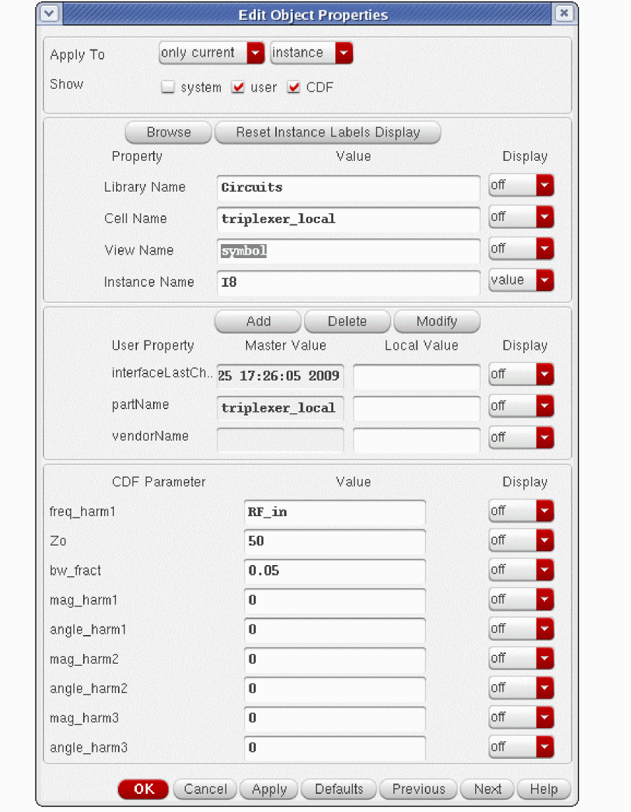 -
Add the two variables you used in the local triplexer or ten_plexer into ADE Explorer.
The example above shows mag and theta variables added. These variables should not be used to set any component values in the circuit.
Triplexer from your local library directory contains three filters for the first, second, and third harmonics and portAdapters with port loads for each of the three filters. -
Open the PSS Choose Analyses form.
- Set up the top of the form as usual.
-
Select the Loadpull checkbox.
- Click Select on the right of the greyed out Load Instance field.
-
In the triplexer_local schematic, select the topmost portAdapter on the right side of the schematic if you want a loadpull for the first harmonic. Select the next portAdapter down for a loadpull of the second harmonic. Select the third portAdapter down for the third harmonic. The first harmonic portAdapter is highlighted below.
The instance name is entered in the Load Instance field. Direct entry by typing is not allowed for this field.
-
Click the Variable button on the right of the rho (Z) field. Select the variable you entered in ADE Explorer.
This variable is used to set the value of the reflection coefficient in the port. -
Specify a sweep range, and set the spacing.
-
When completed, select OK.
The values are displayed in the Choose Analyses form. - Click the Variable button on the right of the phi (Z) field. This sets the angle of the reflection coefficient.
-
In the Select Design Variable window, select the second variable you entered and specify the sweep limits.
-
When completed, click OK.
The variables are updated in the Choose Analyses form.

- When completed, click OK and run the simulation in ADE Explorer.
- In ADE Explorer, select Results - Direct Plot - Main Form.
There are two methods of plotting loadpull curves.
First method
- Select pss from the Analysis section.
- Select Power Contours from the Function section.
- Select Magnitude, dB10, or dBm as the power modifier.
-
Specify 2 more than the number of contour lines you want.
The smallest and largest power occurs at a single point which is plotted, but are very difficult to see in the waveform tool. - Select the Close Contours check box. This causes the contours from the loadpull to be displayed as circles or ellipses, depending on the distortion of the circuit.
- Select the first harmonic.
-
Select the top terminal of the top port in the triplexer.
The power contours appear.

Second method
- Select pss results.
- Select Power from the Function section.
- Select variable from the Sweep section.
- Select Magnitude, dB10, or dBm from the Modifier section.
- Select the harmonic number.
- Select Loadpull Contour.
- Specify 2 more than the number of curves you want.
- Select the Closed Contours check box. This causes the contours from the loadpull to be displayed as circles or ellipses, depending on the distortion of the circuit.
-
Select the top terminal of the top port of the triplexer circuit.
The loadpull curves appear in the waveform tool.

Two Input Frequencies
Two input frequencies can be simulated as long as the beat frequency is high compared to the frequencies that are applied to the circuit. In general, if the pss beat frequency is smaller than about 1/25th the highest input frequency, the simulation is faster if you use qpss or hb.
In the example below, 30 periods of 900MHz and 31 periods of 960 MHz need to be calculated. This is on the edge of acceptability for pss. For this simulation, it might be faster to simulate using qpss or hb because fewer harmonics need to be solved, which requires less memory and time.
Note that when the frequencies are moved slightly to 910M and 970M, the beat frequency drops to 10MHz. In this case, it would definitely be faster to use hb or qpss. These analyses are much faster than pss. Also, since the pss frequency is lower, more harmonics need to be calculated in order to see the desired mixing products.
Sweeps
For the next plots, a sweep is set up in the pss Choosing Analyses form. A sweep is needed in order to measure compression.
Sweeps can be made either in the parametric plot tool in ADE Explorer where the number of swept things is not limited, or in the pss Choosing Analyses form, where the number of swept things is limited to three. This example shows using the pss Choosing Analyses form shown below. For documentation on the parametric plot tool, please refer to the ADE Explorer documentation.
-
Select a sweep number from the Sweep drop-down list.

-
Select the type of parameter that is being varied from the Variable drop-down list.
-
Type the variable name in the Variable Name field. You can also select the variable from a list. To do this, click Select Design Variable. and the list is displayed.
Select the desired variable, and click OK to enter the variable. -
Define the sweep range. Set up a sweep range, and if you desire values that are in between the sweep values, or above or below the sweep values, select Add Specific Points. Type a list of values separated by spaces. This is shown below.
For many power measurements, currents need to be saved. If you are using Shooting, these currents can be saved, To save all the currents from the ADE Explorer environment. Select Outputs - Save All, and then select all for Select Device Currents (currents). This takes the currents that are calculated from every component in the circuit and adds them into the simulator result file.
For hb, port, and voltage source, only currents are saved, and this save is automatic. The ADE Explorer Save Options form shown above has no effect in hb. If you need to measure a current other than in a port or voltage source, add an iprobe in series with the branch.
If all the currents need to be saved when harmonic balance is used as the engine, select yes for the Select AC terminal currents (useprobes) option above. This adds a zero volt battery in series with every branch in the circuit. Although this results in saving all the currents, it also adds entries in the harmonic balance matrices for each voltage source. As a result, the hb matrices get much larger, therefore, more time and memory are required to solve the equations.
In addition, there is a very small chance of causing unresolvable numerical issues and the simulator issues a singular matrix error message. If you see this error, turn off the Select AC terminal currents (useprobes) option and run the simulation again.
Compression Point
This requires a swept input power setup as shown in the section Loadpull.
Make sure that the power at the first point in the sweep is low enough so that there is no compression in the output at that power level. The first point in the sweep is used to establish the uncompressed power for the compression measurement.
To plot a compression point measurement:
-
Select Results - Direct Plot - Main Form in ADE Explorer.
The Direct Plot Form is displayed, as shown below.
- Select Compression Point from the Function section.
- Select the type of thing that needs to be probed in the circuit from the Select drop-down list.
- Specify the compression level.
- Specify input or output-referred compression amount.
- Select the output harmonic to be plotted.
-
Make the selection that is shown at the bottom of the Direct Plot Form. In this example, a port in the schematic that is used as a load should be selected.
The compression curve is displayed.
Voltage Gain
This example shows a swept measurement. To set this up, see Loadpull. A sweep is not required for this measurement.
The voltage gain direct plot function provides the output spectrum divided by the amplitude of the input at the specified input frequency. Note that the input amplitude at the input frequency has a single value. All the output harmonics at all the calculated output frequencies are scaled by the single voltage at the input.
- Select Voltage Gain from Function section.
- Select the appropriate modifier.
- Select the power level of the sweep.
- Select the input harmonic frequency.
- Select the output node in the schematic.
- Select the input node in the schematic.
Below is the output spectrum of the circuit, divided by the amplitude of the input at the input frequency.
Power Gain
This example shows a swept measurement. To set this up, see Loadpull. A sweep is not required for this measurement.
The power gain direct plot function provides the output spectral power divided by the power of the input at the specified input frequency. Note that the input power at the input frequency has a single value. All the output harmonics at all the calculated output frequencies are scaled by the single voltage at the input.
To plot the power gain of a circuit:
- Select Power Gain from the Function section.
- Select the appropriate modifier.
- Select the input power.
- Select the frequency of the input.
- Select the terminal of the load.
- Select the terminal of the input source.
Below is the output power spectrum, divided by the magnitude of the input power at the input frequency.
Power-Added Efficiency
This example shows a swept measurement. To set this up, see Loadpull. A sweep is not required for this measurement.
To plot power-added efficiency:
- Select Power Added Eff from the Function section.
- Select the frequency of the input.
- Select the number of DC sources that power the circuit.
-
Select the terminal of the output load.
-
Select the terminal of the input source.
-
Select the terminal(s) of the DC sources.
The swept PAE curve is displayed.
Compression Versus Output Power
This example shows a swept measurement. To set this up, see Loadpull.
To plot compression versus output power:
- Select Comp Vs Pout from the Function section.
- Select the output frequency.
- Select the load port in the circuit.
The compression curve is displayed. The assumption is that the first point in the sweep has no compression.
Power Gain Versus Output Power
This example shows a swept measurement. To set this up, see Loadpull.
To see the power gain versus the output power:
- Select Power Gain vs Pout from the Function section.
- Select the appropriate modifier.
- Select the output frequency.
- Select the input frequency.
- Select the terminal of the load.
- Select the terminal of the input source.
The plot is displayed. The vertical axis is the power gain. The horizontal axis is the swept input power.
Plotting THD
This example shows a swept measurement. To set this up, see Loadpull. A sweep is not required for this measurement.
To plot the total harmonic distortion:
The THD versus input power plot is displayed.
Large-signal IP3
This example shows a swept measurement. To set this up, see Loadpull.
In pss, all the harmonics of the input waveform are calculated. If the input frequencies get close together, the pss beat frequency becomes small compared to the highest input frequency. If you need to simulate more than 25 periods of the highest input frequency, switch to hb or qpss which run faster than pss.
To plot a large-signal IP3, both inputs are enabled in the ADE Explorer window by specifying the values under the Design Variables section of the ADE Explorer for the frequency and amplitude of both RF sources. Note that in this case, the highest frequency (950MHz) divided by the beat frequency (50MHz) is 19. This is a reasonable problem for pss.
The input is swept over a reasonable range of power levels. If the lower boundary of the sweep is too small, the noise floor of the simulator will be present in the result. If the input power gets too high, the inter-modulation product gets unpredictable. In this example, the power is deliberately started at a very small value and the stopping power is in a very nonlinear region. This is done so the proper way to plot an IP3 can be shown later,
- When the setup is complete, run the simulation.
-
When the simulation completes, select Results - Direct Plot - Main Form in ADE Explorer.
- Select IPN Curves from the Function section.
- Select the type of output signal to plot (or Port) The default is to select a port in the schematic.
- Select Variable Sweep.
- Set the order of the curves to be plotted. Usually, the order is 2nd or 3rd.
- Select whether you want input or output-referred IP3 or IP2.
- Leave the extrapolation point blank for the first plot (explained later).
-
Select the third or second-order frequency from the 2nd or 3rd Order Harmonic field.
Usually, you select the frequency that has the highest amplitude, which is often the lower frequency term. - Select the first-order frequency from the 1st Order Harmonic field. Usually you want the smallest amplitude, which is often the higher frequency term.
- Select the output port in the schematic.
The swept large-signal IP3 is plotted, as shown below.
- Plotting IP3 always involves setting an extrapolation point. First plot the curve using the default for the extrapolation point.
- At high power, the third-order curve becomes unpredictable. At low power, the simulation has a noise floor. The data from the intermodulation product starts to level off.
- Set the extrapolation point above the noise floor, but below the large-signal region.
- The actual data for the intermodulation product should follow the ideal curve for at least one data point in the sweep above and below the extrapolation point.
-
When -30 is set as the extrapolation point, the data for the third-order frequency follows the ideal curve above and below the extrapolation point, as shown below.
-
Note that the IP3 calculation has increased by about 7dB. Make sure that the extrapolation point is set correctly to get the correct measurement.
- The above plot is actually a small-signal IP3 measurement. If this is your objective, using rapid IP3 or IP2 in the AC Choosing Analyses form for amplifiers and in the PAC Choosing Analyses form for circuits that translate frequencies will run much faster and will provide a solution that is just as accurate.
-
Note that
bsim3andbsim4models have a limitation that causes the IP3 measurement to become inaccurate for switched-FET mixers whether it is done in rapid IP3, pss, qpss, or hb. In this case, the psp model is highly recommended. If this model is not available from the foundry, use pss, qpss, or hb at as high an input amplitude as possible without causing large-signal behavior in the third-order product.
Oscillator Simulation
There are no input signals for an oscillator. In the pss analysis, the waveform needs to be calculated. To do this, both the frequency and the amplitudes need to be solved. This requires more iterations to calculate the solution.
In ADE Explorer, variables are used to set the tuning voltage and the power supply voltage.
Setting Dynamic Parameters in Tstab
To set the dynamic parameters:
-
Open the PSS Choosing Analyses form.
- Specify an estimate of the oscillation frequency and set the number of harmonics to be calculated.
- Select conservative.
- Choose Yes for Run transient?.
- Specify the stop time for tstab in the Stop Time (tstab) field.
- Select yes for Save Initial Transient Results (saveinit).
- Select Dynamic Parameter.
- Choose Parameter vector from the drop-down list.
- Specify the name of the option that you want to vary in the tstab interval in the Parameter name field. The example shows reltol.
- Specify 0 (zero) in the Time field.
- Specify a reasonable value for the option. This example steps reltol from 1e-2 to 1e-7 every 40 nsec in the tstab interval. Note that 1e-2 is a very large value for reltol.
- Click Add.
- Add other time-value pairs as appropriate.
- Select Oscillator.
- Click Select to the right of the Oscillator node+ field.
- Select a net in the schematic that has an oscillator signal.
- Click OK.
-
Run the simulation. The setting for the option appear in the Spectre output window.
-
When the simulation finishes, select Results - Direct Plot - Main Form.
- Select tstab from the Analysis section.
-
Click a net in the schematic with the oscillator signal on it. A waveform is plotted.
-
To measure the instantaneous frequency, select the waveform and choose Measurements - Derived Plots.
-
In the Derived plots window, deselect the Period and Dutycycle options.

- Click OK.
-
The instantaneous frequency is plotted.
Note the effect of reltol on the frequency. When reltol is 1e-2, the frequency is low and not very stable. When reltol is 1e-3, the frequency increases and is slightly more stable. As reltol gets smaller, the frequency creeps up and values smaller than 1e-4 produce stable frequencies. Setting values smaller than 1e-5 do not have much effect on stability or frequency, but do have the effect of increasing simulation time.
Normal Oscillator Simulation
- In the pss Choosing Analyses form:
-
Select pss.
-
Select the engine that you want to use.
-
Specify a frequency estimate that is between 0.5 and 1.5 times the actual oscillation frequency if you are using the linear oscillator initial condition, or from 0.25 to four times the actual oscillating frequency if you use the default oscic.
-
Set the number of harmonics you want for the spectral calculation.
-
Select the accuracy. conservative accuracy is recommended for oscillators.
- Set Run transient? to Decide automatically. This automates the setting of tstab and switches to the pss algorithm as soon as steady-state is reached.
-
If you want to see the startup waveform, select yes for saveinit.
-
Select Oscillator. If you have a single-ended oscillator, specify one node inside the feedback system for the Oscillator node. If you have a differential oscillator, specify two nodes at mirror locations in the Oscillator node+ and the Oscillator node-.
- Select the Calculate initial conditions (ic) automatically option.
- Now run the simulation. When the simulation completes, select Results - Direct Plot - Main form in ADE Explorer.
Plotting the Oscillator Startup Waveform
To plot the startup waveform, select tstab results and then select a node in the circuit. If you do not see the tstab results, go back to the Choosing Analyses form and select yes for saveinit.
For linear oscic, the startup characteristics of the waveform are not very evident. If you want to see the startup waveform to evaluate how robustly your oscillator starts up, use the default oscic and provide a very small starting kick at time zero plus so that the waveform starts small in amplitude and builds up. In this case, it is likely that tstab needs to be longer to allow the oscillator to reach a near steady-state operation before going into the pss solver.
The result is displayed in the waveform tool. Note that with the linear oscic, the oscillator starts at time = zero with the estimate of the frequency and amplitude from the very beginning. This allows a very short tstab. Also note that the simulation continues after the setting of tstab. During this time, Spectre searches the oscillator for a divided-down output frequency.
Plotting the Oscillator Output Spectrum
To plot the output spectrum, select pss, and then select either Voltage or Power.
When a node is selected in the schematic, the power in dBm is plotted in the waveform tool, as shown below.
Additions for Oscillator Swept Tuning Voltage
In the pss Choosing Analyses form:
- Select Sweep.
- Type the variable name that sets the tuning voltage in the Variable Name field.
-
Set a reasonable sweep range for your oscillator.
- Run the simulation.
-
When the simulation completes, select Results - Direct Plot - Main Form in ADE Explorer. The Direct Plot Form is displayed.
Plotting Output Power Versus Tuning Voltage
To plot the power as a function of the tuning voltage:
- Select pss from the Analysis section.
- Select Power from the Function section.
- Select variable from the Sweep section.
- Select dBm from the Modifier section.
- Select the harmonic number. The frequency range is also shown.
- Select the node in the schematic you want to plot.
The output power versus the tuning voltage is plotted, as shown below.
Plotting Output Power Versus Output Frequency
Now plot the harmonic frequency on the same plot.
The frequency is plotted on the same subwindow. A second vertical axis is used.
To plot the output power versus the frequency, right click on one of the numbers on the X Axis, and select Y vs. Y. The Y vs Y window appears. Select the frequency for the X Axis from the Select a Trace drop-down list and click OK.
The plot of the output power versus the output frequency is plotted in a new subwindow.
Plotting the Output Frequency Versus the Tuning Voltage
Now quit the waveform window, and select Add To Outputs in the Direct Plot Form, and plot the harmonic frequency again.
The tuning curve is plotted again, as shown below.
In ADE Explorer, a new expression is added under the maestro tab.
Plotting the Modulation Sensitivity
- Double-click the expression in the Details column under the maestro tab.
-
Click the () button.
The calculator opens with the expression in it.
-
Select the derivative function. The expression changes.
- Set the plotting mode to New Subwindow.
- Click the Plot icon.
The modulation sensitivity in MHz/Volt is plotted in the subwindow on the right.
Oscillator Tuning Mode Analysis
The oscillator tuning mode analysis tunes the oscillator so that phase noise can be measured at the desired oscillation frequency. It is supported in both harmonic balance and shooting methods and is typically used in Monte Carlo simulations or sweeps to obtain the phase noise.
In oscillator tuning mode analysis, the oscillator frequency is treated as the target frequency, and the value of a circuit parameter is obtained to achieve the target frequency. The circuit parameter can be an arbitrary ADE variable or an instance parameter.
- Open the pss Choosing Analyses form.
- Set up the target frequency in the Beat Frequency field.
- Select the Oscillator check box.
-
Specify the output node from the
Oscillator node+field. Alternatively, click Select and choose the output node from the schematic. Here,vc2is selected. - Select the Enable tuning mode analysis check box.
-
Choose the parameter that needs to be tuned from the drop-down list. Here, Component Param. has been selected.
-
Specify the name of the parameter in the Component Name field. Alternatively, click Select Component and select the parameter from the schematic. When you select a parameter from the schematic a pop-up window appears that contains a list of selectable parameters.
- Select a parameter from the list. The Parameter Name field is automatically populated with the name of the parameter (dc in the figure above).
- Select the Tuning range check box and specify the minimum and maximum ranges for the parameter, if required.
- Run the simulation.
-
After the simulation completes, click Results - Direct Plot - Main Form to display the Direct Plot Form.
- Select Tuning Parameter from the Function section.
- Click Add to Outputs.
-
Click OK.
The value of the tuning parameter is added in the Value column under the maestro tab of the ADE Explorer window, as shown below.
Oscillator Tuning Mode With Sweeps
Sweeps and Monte Carlo are also supported with tuning mode. Below is an example of a sweep of temperature with tuning mode and a phase noise measurement.
-
Enable sweeps in the pss Choosing Analyses form. In this example, temperature is swept from -20 t0 120C. Tuning mode is enabled as before.
-
Because of the sweep, pnoise has been changed to a single frequency offset, which simplifies plotting of phase noise after the sweep.
-
Now run the simulation. Because the tuning parameter and phase noise have already been added under the Maestro tab in ADE Explorer in the previous section, the tuning voltage and the phase noise are plotted after the simulation.
-
To make the phase noise plot more useful, select the X Axis, click the right mouse button, and select Swap Sweep Var. In the window that pops up, click OK. Then delete the original phase noise plot.
- The trend in tuning voltage and phase noise is plotted.
Periodic AC Analysis (PAC)
Small-signal Versus Large-Signal Analysis for Conversion Gain
One way to measure conversion gain is to apply the LO and the RF signals in harmonic balance (hb) or quasi-periodic steady-state (qpss) and calculate the full large-signal response at each RF input frequency, and then plot the output as a function of the sweep frequency. While this works, because all the large-signal effects and many harmonics are calculated, the required time for the simulation can be significant.
The alternative is to use a small-signal approach similar to the AC analysis. The AC analysis runs considerably faster than running the transient at multiple frequencies because it ignores the large-signal effects. In circuits with frequency translation, the AC analysis is unusable because the calculation is based on the DC bias point. In hb Periodic AC (PAC) analysis, instead of using the DC bias point, the harmonic balance periodic steady-state (pss) solution with just the LO is used as the basis of the calculation. The large-signal analysis only calculates the harmonics of a single input, and no mixing products, and then hb pac is run after the hb pss analysis and calculates the outputs that are produced by mixing the pac input with the harmonics that are in the pss analysis. The overall time savings can be very significant.
Example: Conversion Gain (Down Conversion)
Consider the double-balanced diode mixer shown below.
The RF input source has the frequency and amplitude set to variable names in order to allow changing the test setup without needing to change the circuit. This is suggested for all the sources used in the circuit that might need to be changed. Also note that the pac magnitude term is set to 1 volt. This makes it easy for a conversion gain measurement because the input signal is 0dB when the dB20 modifier is used in the Direct Plot Form for the pac result.
The property list is shown below.
The easiest way to get the variables list into ADE Explorer is to select Variables - Copy From Cellview. To set the values, select the value field to the right of the variable, type the desired value, and press Enter.
The LO frequency is 1GHz and its amplitude is 1.4 volts peak. This is +13 dBm. (+13 dBm is a common drive level for diode mixers.) The RF frequency is 1.1GHz, but it is disabled because the amplitude is set to 0 (zero). Setting either the frequency or the amplitude to zero disables the production of that waveform from the port. This provides an easy way to enable or disable signals without needing to change the schematic.
The pss analysis needs to be set up first. Note that both shooting and harmonic balance are available in pss for the engine. The example below shows a single input at 1GHz with 10 harmonics using the shooting engine. For more information, see Overview of Periodic Steady-State (pss) Analysis. Diode mixers have rapid changes in the diode currents. Because of this rapid change, shooting is likely to be faster and more accurate than harmonic balance.
Next, the PAC analysis needs to be set up. Like AC, the frequency range specified in the form is the input frequency range. When shooting is used for the pss engine, Maximum sideband should be set somewhere less than four times the number of harmonics set in the pss analysis. Setting 10 sidebands calculates the mixing products from the input frequency in PAC with the harmonics through the tenth harmonic in the pss analysis. The actual number chosen depends on the mixing products that are important in your application. When harmonic balance is chosen for the engine, leave the Maximum sideband field blank.
Once the analyses are set up, the simulation can be run by selecting Simulation - Netlist and Run in ADE Explorer. When the simulation finishes, select Results - Direct Plot - Main Form.
The example below shows a typical Direct Plot Form setup to measure the conversion gain.
When the net in the schematic is selected, the waveform is displayed.
Note that all the short line segments are the mixing products that are produced when mixed with the harmonics in the periodic steady-state (pss) large-signal analysis.
In the down-conversion case, the frequencies that are produced for the down-converted output product are desired. In the Direct Plot Form, select sideband instead of spectrum, and then select the desired frequency range from the list at the bottom of the form. Only that mixing product will be displayed, as shown below.
The conversion loss is about 6dB.
Example: Conversion Gain (Up Conversion)
The process is similar for an up-conversion mixer. In this case, the input frequency is low, as shown below. The LO remains at 1GHz, as it was in the previous section.
The RF outputs are 50MHz through 150MHz above and below the 1 GHz LO.

In the Direct Plot Form, both the outputs above and below the LO frequency might be desired.
Select the first frequency, and click the second while holding the Ctrl key. Now select the output net in the circuit and the results will plot.
Note that the conversion loss is almost identical for both mixing products.
PAC General Principles
The pss solution with LO calculates the amplitude of the harmonics and characterizes the nonlinearity of the system. Therefore, in pac, the output mixing products of the input signal mixing with the LO harmonics can be calculated. Like ac analysis, pac allows the input to be swept in frequency to calculate a frequency response of the output mixing products. Also, like ac, when pac is used for conversion gain measurements, the conversion gain is the same regardless of the input amplitude. The small-signal conversion gain is calculated and is a good representation of the gain until compression is approached or exceeded in the real circuit. If a measurement of compression is required, use a large-signal analysis like pss, hb, or qpss.
PAC used with Harmonic Balance PSS
When harmonic balance is used for the pss analysis, the harmonics of the circuit are calculated directly by the harmonic balance engine.
Think of a perfectly linear circuit with a single input applied. Because the circuit is perfectly linear, in the pss analysis when harmonic balance is used, the frequency domain solution only has the harmonic at the input frequency at every net in the circuit. No other harmonics are created because the system is perfectly linear. Because the circuit is linear, if a second input is applied, no frequency translation can occur.
Now imagine a real circuit with a single small input amplitude signal at 1GHz. In the frequency domain with harmonic balance selected in pss, the first harmonic is present along with the higher harmonics. Because the input signal is small, the signals at the harmonics of 1GHz are very small. If a second input is applied at 1.1 GHz, that signal is weakly converted when it is mixed with the harmonics of the circuit. Certainly, 1.1GHz would appear at the output with no mixing. 100MHz and 2.1GHz are produced by mixing with the 1GHz fundamental frequency. 900MHz and 3.1GHz are produced when 1.1GHz mixes with the second harmonic of the 1GHz input. 1.1GHz mixes with the other harmonics as well, producing a wide range of output frequencies from a single input frequency. The harmonic output might look like the figure below. Only the first three harmonics are shown. The black harmonics are the pss harmonics, and the red mixing products are pac outputs, which are called sidebands.
Note that there is an output mixing product that is created at 100MHz. Because the real circuit is nonlinear, harmonics of 100MHz are created in the circuit. In pac, the assumption is that all the signals are small, and with this assumption, the harmonics of 100MHz do not need to be calculated. This assumption also applies to all the other outputs in pac. Therefore, the PAC output is a partial output from the circuit with only the main mixing products displayed. Since in most cases, these are the desired outputs, conversion gain can still be obtained by using pac. In other words, pac calculates the main mixing products that are created by mixing with the pss harmonics, but the harmonics of the pac outputs are not calculated.
Now imagine that the 1GHz signal is larger. If the input goes up 10dB, the first harmonic goes up 10dB, In the frequency domain, if harmonic balance is selected in pss, the second harmonic would come up 20dB, the third harmonic would come up 30dB, and so on. If a second input at 1.1GHz is applied to the circuit, this mixes with the fundamental and the harmonics of 1GHz and more strongly mixes up-and-down in frequency. This is illustrated below. The black harmonics are the pss harmonics, and the red mixing products are pac outputs, which are called sidebands.
PAC used with Shooting PSS
Shooting is a variation of the transient analysis where the individual timepoints are calculated, and the entire waveform is iterated to calculate the steady-state waveform. The transient algorithm works by using all the equations at all the nodes in the circuit where the assumption is made that the sum of the currents is zero at every node and at every timepoint. Ohm's law is observed, and the equations look like I=V*G where G is the conductance. In general, the matrix form of the equations is constructed, so the system of simultaneous equations becomes [G]*[V]=[I] where [G] is a square matrix, and [V] and [I] are columns. To solve for [V], the [G] matrix is inverted and this matrix multiplies the [I] matrix to solve for all the voltages on all the nodes. At the end of the pss analysis, all the solution matrices are saved as data to be passed to the small-signal analyses. The result is that the conductance is calculated and saved for every nonlinear component in the circuit at every timepoint.
Below is the I-versus-V curve with 3 different values for the input voltage. The center, positive peak of the input, and the negative peak of the input are shown. The input amplitude is small.
In the above figure, the amplitude of the 1 GHz signal causes small variations in the slope of the tangent of the nonlinear curve as the input signal is varied in amplitude. The slope is the conductance. Because the circuit has a nonlinear device, the conductance of the device varies slightly from timepoint to timepoint in the pss analysis. Because the input signal at 1.0GHz is small, the variation in conductance from timepoint to timepoint is small. The slope changes just a little bit as the input signal is moved over its range.
Now imagine that the 1GHz signal is 10dB larger. A 10dB change is a linear factor of about 3.16. The larger amplitude of the input causes a larger portion of the nonlinear device curves to be traversed, and thus the variation in conductance becomes larger. If a second input at 1.1GHz were applied to the circuit, this mixes with the fundamental and the harmonics of 1GHz and more strongly mixes up and down in frequency. This is illustrated below.
Therefore, the variation in the conductance of the devices from timepoint to timepoint when shooting is selected in pss, or the harmonic content if harmonic balance is selected in pss contains information about how strongly a circuit translates frequencies, and this is used by the pac small-signal analysis to calculate the small-signal conversion gain.
Overview of Simulation Capabilities
PAC has a choice called specialized analysis which is located near the bottom of the Choosing Analyses form. This sets the mode of the measurement to be either averaged over the whole pss waveform or at a specific timepoint in the pss waveform. Many different types of analyses can be performed, like conversion gain, distortion contribution, and instantaneous gain measurements. Below is a description of the capabilities for each specialized analysis setting.
Also note that in this section, just the concepts are discussed without any mention of how to do the setup in ADE Explorer. To see the ADE Explorer setup, see ADE Implementation.
Specialized Analysis=None
Down Conversion: Input Near the First harmonic
At the bottom of the pac Choosing Analyses form, there is a selection called Specialized Analyses. The default is None, and this is for measuring the conversion gain that is the average conversion gain with the large signal applied to the circuit (usually the LO or the sample clock) applied to the circuit. The mixing products that are produced are called sidebands. The sideband number is the harmonic number that is being mixed with to provide the output. A positive number means that the output mixing product is higher in frequency than the input frequency specified in the Choosing Analyses form. A negative number means that the output is lower in frequency than the input frequency. A diagram is shown below.
We tend to think of positive frequencies. The default is to reflect negative frequencies to positive frequencies.
Again, in pac, a single input frequency is applied at a time, and then the output mixing products are calculated through the highest harmonic of the periodic steady-state (pss) simulation specified by the Maximum sideband parameter. Maximum sideband defaults to seven for shooting and the total number of harmonics specified in the pss analysis for hb. Usually Maximum sideband is set to calculate the desired mixing products. This can be accomplished by setting Maximum sideband or by using the select from range capability in the pac Choosing Analyses form.
Up-conversion: Input Near Zero Frequency
In a similar manner, up-conversion is shown below.
Frequency Sweep
This analysis is like AC, where the input frequency is swept. The input frequency range is specified in the pac Choosing Analyses form.
In addition to the frequency, there is a selection called Sweep Type. The choices are relative and absolute. When absolute is selected, the frequency range is used directly with no frequency conversion. When relative is selected, a Relative Harmonic field appears. The frequency sweep is shifted by the specified frequency of the harmonic in the pss analysis. For example, assume that the pss is at 1GHz, and a log sweep is desired above the first harmonic of the pss analysis. In this case, you need to select relative sweep, and specify 1 in the Relative Harmonic field. Next, type in 1K to 100M for the frequency range with a log sweep and 3 to 5 points per decade.
The sweep will start at 1G + 1K, and sweep to 1G + 100M using log spacing from 1K to 100M. This is illustrated below.

To use a log sweep below the first harmonic, use the same frequency range, and type in -1 as the relative harmonic. This is illustrated below.

Maximum Sideband
Sideband is the name of the PAC output mixing product. The sideband number is the pss harmonic number that is mixed with. If the sideband number is negative, the output frequency is mixed down in frequency from the input. If the sideband is positive, the output is mixed up in frequency.
Conceptually, an infinite number of mixing products are produced when a single input is applied to a nonlinear system. From the practical point of view, usually only a small number of mixing products need to be measured.
There is a property in the Choosing Analyses form called Maximum sideband that is used to define how many mixing products should be calculated. If Maximum sideband is zero, the pac analysis will only contain the frequency that appears without mixing or aliasing of any type. This is not equivalent to a linear AC analysis because pac takes into account the instantaneously varying nature of the LO or sample clock signal because of the large signal being present in the pss analysis.
When Maximum sideband is one, the outputs without frequency translation and the outputs that mix or alias with the first harmonic of the pss analysis are present in the pac analysis. When Maximum sideband is 10, the pac analysis includes mixing through the 10th harmonic of the pss analysis. When shooting is used for the pss analysis, the number of sidebands can be any number up to four times the number of harmonics specified in the pss analysis. When harmonic balance is selected, up to the number of harmonics in the pss analysis can be selected.
Setting Harmonics and Sidebands
Shooting
The pss analysis, when shooting is selected, has a minimum of 200 timepoints, so it inherently has frequency domain content through the 100th harmonic of the pss beat frequency. Maximum harmonic is a pss post-processing property that specifies how many harmonics to calculate in the Fourier transform of the waveform in pss. If the number of harmonics is zero, it just means that no frequency domain information should be calculated in the simulation. If the number of harmonics is 10 or less, there is no effect on the PSS waveform. When maximum harmonics gets larger than 10, the minimum number of timepoints in the pss analysis is increased. 20 timepoints at the frequency of the highest harmonic are forced. Thus, if maximum harmonics is raised, the pss waveform gets more accurate at the cost of longer runtimes and more memory required to run the pss simulation because more timepoints are forced in the pss simulation.
In order for the pac analysis to correctly measure conversion gain, the wave shape at the highest mixing harmonic needs to be accurate, so with the default settings in shooting pss, up to 40 sidebands can be accurately calculated in the pac analysis. In most cases, only a small number of sidebands needs to be calculated, and so with shooting, you can count on the pac result to be accurate.
If you need more than 40 sidebands when you are using shooting pss, you need to set the maxacfreq option in the pss analysis to the pss beat frequency times the number of sidebands requested in the pac analysis, or alternatively, set the number of pss harmonics to the number of sidebands divided by four. Either method works to set the maximum timestep in the pss analysis as required for the pac analysis to be accurate.
Harmonic Balance
When Harmonic Balance is selected in the pss analysis, only the harmonics specified in the pss Choosing Analyses form exist in the solution. In the pac analysis, because only the harmonics specified in the pss-hb Choosing Analyses form exist, the maximum sideband term can only be the number of harmonics specified in the pss analysis or less. Usually when Harmonic Balance is selected in the pss analysis, the Maximum sideband field in pac usually should be left blank which calculates all the output mixing products.
Note that with harmonic balance, the number of harmonics (and oversample factor if you have non-sinusoidal waveforms) in the pss analysis needs to be determined. Start with a number of harmonics in the pss based on an estimate of how many harmonics the circuit actually produces with your input waveform, and run the pss and pac analyses. Remember that for non-sinusoidal waveforms, oversample factor also needs to be set greater than one. Run the analysis and do the desired measurement. Now increase the number of harmonics by roughly 50% and run the simulation again. If the answer does not change, then you had enough harmonics originally, and you might actually be able to decrease the number of harmonics from the original setting. If you have non-sinusoidal waveforms, increase the oversample factor before increasing the number of harmonics to find the minimum value for both oversample factor and harmonics.
Modulated
Modulated pac is typically used for measuring AM to PM measurements in driven circuits and oscillators. In this case, the input is usually the power supply ripple at low frequency, and the desired output is near the first harmonic of the output. Modulated is an averaged measurement over the whole pss waveform (shooting) or all the harmonics (harmonic balance). Pac apples a modulated input signal to the circuit, and is able to measure a modulated output signal from the circuit. The types of modulation are Single Side Band (SSB), AM, and PM.
A diagram is shown below for SSB input.
Note that although the input occurs at one frequency, the AM output can be measured directly from the single input.
When AM is applied at the input, the following figure is shown.
The difference is that in addition to the input at low positive frequency, another input (to form an AM signal) is applied at a low negative input. This second input adds to the output signal near the first harmonic.
For PM, the negative input amplitude is negative, as shown below.
By running all three inputs, the SSB/AM/PM input to SSB/AM/PM output can be calculated. This is a setup choice in the Choosing Analyses form.
In the Choosing Analyses form, the input frequency range, and the output harmonic must also be specified.
All the plot functions are implemented in the Direct Plot Form.
Rapid IP2/IP3 (AC and PAC)
Rapid IP2 and Rapid IP3 have been added to the ac and pac analyses. First, a provision has been made to allow two input frequencies. Second, the ac and pac analyses have been enhanced so that harmonics of those signals and the intermodulation distortion can be calculated. Doing this in a small-signal analysis is much faster than doing this in a large-signal analysis because the large-signal effects are ignored.
The Rapid IP2 and Rapid IP3 that is available in the ac Choosing Analyses form allows the calculation of IP2 and IP3 for amplifiers. In pac, Rapid IP3 and Rapid IP2 are provided for circuits that translate frequencies, whether that translation is an up or down conversion. In this case, the signal that is causing the frequency translation (the LO or the sample clock) is applied in the pss analysis first in order to characterize the nonlinearity of the system so that the correct IP2/IP3 measurement can be made. Note that pac and ac are small-signal analyses, so the limitation is that the measurement is a small-signal IP3 or IP2. If you need a large-signal IP2 or IP3 measurement, use a large-signal analysis like hb or qpss to make the measurement. Note that when you are using Rapid IP2 or Rapid IP3 in the ac analysis, either a SpectreRF license is required, or an additional mmsim token is required to run the analysis.
Make sure that the input level for the IP3 or IP2 measurement is in the small-signal range. Rapid IP2 and IP3 have exceptionally small numerical noise floors, therefore, it is recommended that you specify a level that is too small, rather than too large. Rapid IP2 and Rapid IP3 work by evaluating the device equations for nonlinearity. Do not specify one volt as the input amplitude because this is generally in a large-signal range, and usually causes the devices to reach points where the device currents are deliberately linearized, thus making the IP2/3 measurement more linear than it actually is.
The plot functions for Rapid IP2 and Rapid IP3 are implemented in the Direct Plot Form.
- Select Results - Direct Plot - Main Form. In the Direct Plot Form.
- Select ac or pac from the Analysis section.
- Select Rapid IP2 or Rapid IP3 (depending on which was set up) from the Function section, and click Plot.
The X and Y points are shown for the intercept.
The X value is input-referred IP2/IP3, and the Y is output-referred IP2/IP3.
Note that if you have a switched-FET mixer and you are using the BSIM3 or BSIM4 models, due to a model limitation, the IP3 calculation from rapid IP2/IP3 will be incorrect. In this case, the PSP model is recommended. If a PSP model is not available, use hb or qpss with an input amplitude that is as large as possible while still being in the small-signal range for your circuit or switch to a 1dB gain compression measurement, The compression measurement is much more accurate than the IP3 measurement for switched FET mixers.
Compression and IP2 distortion summary
The distortion summaries measure distortion for an amplifier in ac or in circuits that have frequency translation in pac. The idea is to find which devices in a signal path contribute relatively more or less to the distortion. Since IP3 and compression are related mathematically, the compression distortion summary provides information about which devices contribute the most amount of third order intermodulation distortion. The IP2 distortion summary measures which devices contribute to the second order distortion. Note that when you are using the distortion summaries in the ac analysis for amplifiers, either a SpectreRF license is required, or an additional mmsim token is required to run the analysis.
Both distortion summaries use the PAC Magnitude property in the input port. Make sure that the PAC Magnitude (in volts or dBm) is actually in the small-signal range, (At least 10 dB smaller than the 1dB gain compression point) or the results will not be accurate. This is because the pac results do not take into account the large-signal limits like slew-rate or power supply voltage and the device models deviate from the ideal equations at very large amplitude by just continuing a linear slope above a certain amplitude. That amplitude depends on the device model parameters and is likely to be reached with a 1 volt input amplitude. The compression distortion summaries have an extremely low numerical noise floor, so it is better to set an input amplitude that is too small, than to set it too large.
The distortion summaries provide a list output, not a plot output. Accordingly, instead of selecting Results - Direct Plot - Main Form, select Results - Print - PAC Distortion Summary.
For the compression distortion, you get the actual gain with the distortion of each device by itself divided by the ideal small-signal gain provided by the pac analysis. In addition, the amplitude of the first three harmonics of the linear output frequency is calculated.
For the IM2 distortion summary, you get the total IM2 output amplitude that results from having only a single device in the circuit.
Sampled
Sampled is provided in order to calculate the instantaneous conversion gain at a voltage threshold crossing in the pss waveform or at specific timepoints in the pss simulation. Note that this analysis is fundamentally different than the analyses discussed earlier. All the previous analyses measured the average conversion gain that is produced when all the harmonics are taken into account (hb) or all the timepoints are taken into account (shooting). In sampled, an instantaneous measurement at a single point in time (or a list of times) of the LO or clock waveform is made.
Note that when harmonic balance is selected, sampled pac is the same as in shooting, but the time-domain waveform is the ifft of the harmonics calculated by the harmonic balance analysis. This is useful for measuring the conversion gain from the power supply to the oscillator output at a threshold crossing, or at specific times in the LO waveform to the output of a mixer.
When shooting is selected, a minimum of 200 timepoints exist in the solution waveform, and shooting automatically makes the timestep smaller in areas of rapid change, thus, there is likely a datapoint in the pss analysis that is very near the voltage level you specify as a threshold. In harmonic balance, the timepoints in the ifft depend on the number of harmonics and the oversample factor. Set a large enough number of harmonics and/or set a large enough oversample factor to make sure that there is a timepoint in the ifft that is very near the actual threshold value you specify in the Choosing Analyses form.
ADE Implementation
The settings in the PAC form can be slightly different for shooting and harmonic balance, and the method for both is covered in each section.
Circuit, Input port Setting, and ADE Explorer Setup for all the Examples in This Section
Consider the following circuit:
This above circuit is an LNA and a mixer for a 2.4GHz application that is implemented in CMOS. The input source (a port in Cadence terminology) has the values for its frequency and amplitude set to variable names. The PAC magnitude property is set to 1 volt in order to allow easy conversion gain measurements. The reason for the variables is that the frequency and amplitude can be changed in the ADE Explorer environment without changing the schematic.
The Edit Object Properties form for the input port is shown below.
ADE Explorer has the variables set to appropriate values, as shown below.
Note that the variables fb1 and fb2 (which set the input frequency of the input port) are set to zero, which effectively disables the RF input. Only the LO signal is applied to the circuit for the pss analysis.
Using PAC Analysis for Conversion Gain Measurement
Set up the pss analysis with just the large signal that causes the frequency translation to occur, which is generally the LO signal or the sample clock. For more information, refer to Overview of Periodic Steady-State (pss) Analysis. Regarding whether to use shooting or harmonic balance, pick the analysis that produces the smallest runtime. In general, shooting is recommended for systems that have sharp edges, and harmonic balance is recommended for systems that are more sinusoidal.
Set up the pac Choosing Analyses form as follows:
- Specify the input frequency range. In this case, the Sweeptype is set to absolute, which means that there is no frequency shift applied to the input frequency. If a log sweep above the first harmonic is desired, set the Sweeptype to relative, and specify one as the relative harmonic number. The input frequency range would be 1MHz to 100MHz to get the same frequency range as in the example above. Relative shifts the frequency specified the harmonic number times the pss frequency.
- For pac, the Maximum sideband field should be set to the highest harmonic of the pss analysis that mixing products are desired to be calculated. This is generally determined by the application. If you only need one or two output mixing product, choose Select from range, and highlight the sidebands you want to calculate. Setting Maximum sideband for pac is usually not critical as long as enough sidebands are calculated to measure the desired output mixing product (called a sideband). The Direct Plot Form allows the plotting of individual output mixing products as will be shown later. As a general recommendation, set the number of sidebands equal to the number of pss harmonics.
- For a conversion gain measurement, set the PAC Magnitude to 1 volt on the Edit Object Properties form, as shown earlier. This is always volts peak.
- Now run the simulation. In ADE Explorer, select Simulation - Netlist and Run.
-
After the simulation completes, select Results - Direct Plot - Main Form. The Direct Plot Form is displayed.
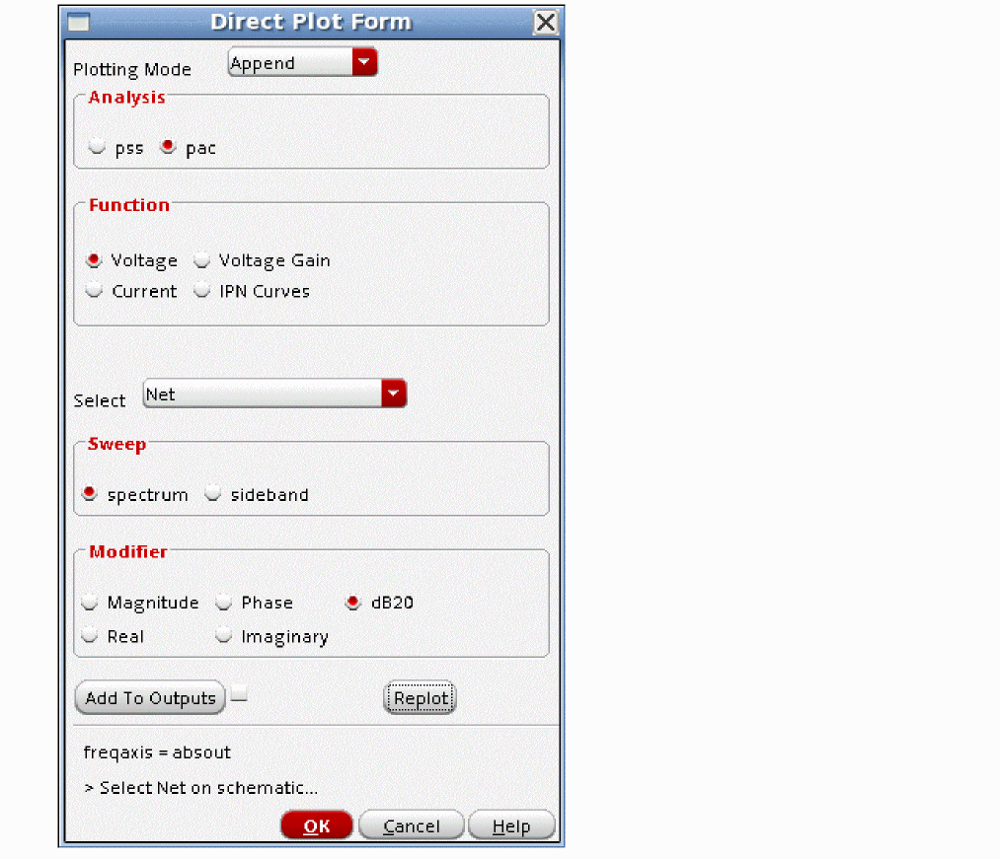
Mixing products are calculated for mixing the pac input frequency range with the harmonics calculated in the pss analysis. Harmonics of the pac input and harmonics of the output mixing products are not calculated because pac is a small-signal analysis. Because it is small-signal, the harmonics of the input and the harmonics of the mixing products are so small that they do not matter.
To measure the outputs you desire, place a marker at the desired output frequency of interest and read the conversion gain, as shown below.
To plot a single output sideband (mixing product), in the Direct Plot Form:
-
Select sideband instead of spectrum, and select the desired output mixing product form the list as shown below.
-
Select the output net in the schematic, or click the Replot button in the Direct Plot Form. The waveform tool displays the output, as shown below.
-
Position a marker by moving the cursor to the desired output frequency and type
m. The marker appears, as shown in the figure above. -
To position the marker at an exact frequency, place it as above, and then move your cursor over the intercept point on the trace. Click and hold the right mouse button, move to Marker Properties, and release the mouse button. The Point Marker Properties window appears, as shown below.
- Type the frequency in the Position field, and click OK or Apply.
Sampled Circuits and Switched-capacitor Filters
For sampled circuits or for switched-capacitor circuits, always use shooting pss because the clocking waveforms have rapid transitions. Shooting captures these transitions in a natural and accurate way.
In pac, generally only the sideband with zero frequency translation is desired, so Maximum sideband can be set to zero. A warning is produced in the Spectre output window stating that the number of sidebands is lower than anticipated. This warning can be ignored.
Note that the average gain is determined by pac. In the sampling circuit, this is generally very near unity gain, but for the switched-capacitor circuit without a sample and hold, the gain is generally a bit less than half amplitude which is about -6dB. This is because the output waveform follows the input waveform for a little less than half the time, and the capacitors are reset by the switches the other half the time.
If you desire to see the aliasing at different harmonics of the clock, use pxf analysis. For example, imagine a sampling frequency of 1MHz. In pac, with the zero sideband only, the input and output frequencies are always the same. Therefore, if the input is at 1.1MHz in pac, the output is also at 1.1MHz. Generally, the term that is interesting is the term that aliases down from 1.1MHz to 100KHz which is not measured by the pac analysis (The input and output frequencies are the same in the zero sideband.) To see the aliasing at the different harmonics, use pxf with an output frequency of near zero to 500KHz, and specify Maximum sideband to the harmonic number desired. If the Maximum sideband is greater than 40, either set the pss option maxacfreq to the number of sidebands times the pss beat frequency, or set the number of harmonics to the number of sidebands divided by four.
Commonly Used PAC Options
Freqaxis
freqaxis specifies whether you want to see the negative frequency axis or not.
The analysis calculates the output frequencies and amplitudes, so out and absout are reasonable choices. out displays the negative frequency axis. absout (absolute value of the output) displays positive output frequencies. This is the default.
If you select in, all the outputs at the different frequencies are plotted on the same input frequency range scale. This is not recommended. The default is absout.
Below is an example of freqaxis set to out. Note that the data is the same as before. It is just displayed with the negative frequency axis present. The negative frequencies have not been reflected up to the positive frequency domain.
Below is an example with the freqaxis option set to in. All the outputs at different frequencies are plotted on the input frequency scale. The frequency can be calculated by selecting the appropriate sideband from the list on the left side of the waveform tool, and then adding the sideband number times the pss beat frequency to the frequency displayed on the X axis.
Tolerance
Leave this option at the default value.
Pac uses an iterative solver to calculate the output amplitudes. Any iterative solver needs an error tolerance to specify when to stop iterating because the solution is accurate enough, and the tolerance option specifies that accuracy for pac. For shooting, the default tolerance is 1e-9. For driven circuits where HB is the pss engine, the default is 1e-6. For oscillators where hb is selected for the pss engine, the default is 1e-4.
Solver
The solver option is used only for driven circuits. The default solver is the turbo solver.
When hb is used as the engine in pss, leave this option at the default.
When shooting is used, sometimes when the pac input frequency is very close to the frequency of one of the harmonics in the pss, warning messages will appear in the pac output warning that the accuracy might not be good enough. If you see these messages, select the std solver, which has better ability to handle frequencies that are very close to a harmonic in the pss, but which takes longer to run than the turbo solver.
Hbprecond_solver
This option is only available only when harmonic balance is selected in PSS.
The basic solver is the only solver available in standard Spectre. Autoset is the default solver when APS is used. This solver is faster, but occasionally stagnates. When stagnation is detected, APS automatically switches to the basic solver, and prints a message in the Spectre output window.
Oscsolver
The oscsolver option is used only for oscillators. The default solver is the turbo solver.
When hb is used as the engine in pss, leave this option at the default.
When shooting is used, sometimes when the pac input frequency is very close to the frequency of one of the harmonics in the pss, warning messages appear in the pac output warning that the accuracy might not be good enough. If you see these messages, select the std solver, which has better ability to handle frequencies that are very close to a harmonic in the pss, but takes longer to run than the turbo solver.
For very large oscillator designs, the ira oscsolver may take less memory and run faster with no loss in accuracy, however, it is less robust for convergence compared to turbo or std.
Gear_order
Resgmrescycle
Leave this option at the default.
Outputperiod
AdditionalParams
In some cases when shooting is used in pss on an oscillator circuit measurements near a pss harmonic may be questionable. If this occurs, type osc_version=dts in the addionalParams field to solve the issue.
additionalParams is typically used for new features that are being beta tested.
For more information about the other options, type spectre -h pac at the command prompt in a Unix shell window
PAC With Multiple PSS Inputs
This is generally used when the conversion gain is desired with a large blocker signal present at the RF input. The basic strategy is to apply the signals that cause the nonlinearity to occur (the LO and the blocking signal) in the pss, and then use pac to measure the conversion gain when the blocker is present. In many cases, the blocker power is swept in order to measure the degradation in conversion gain when the blocker gets large.
Multiple input frequencies might be able to be run in the PSS, depending on the ratio between the highest input frequency divided by the pss beat frequency. If this ratio is about 25 or less, then pss can be used for the simulation. If the ratio is greater than 25, consider using harmonic balance (hb) or qpss to run the simulation because it is very likely to take less time to run.
To set up the second input, the variable fb1 was set to 2.5G in the ADE Explorer window, as shown
below. This variable sets the frequency of the first source in the port component that supplies the RF signal. In this case, the LO is at 2.4GHz and the RF is at 2.5GHz.
The pss was set up with 175 total harmonics of 100MHz to allow harmonics through the seventh harmonic of the LO signal at 2.5GHz to be calculated. For more information on pss, Overview of Periodic Steady-State (pss) Analysis.
Remember that the frequency range is the input frequency range. In this example, the frequencies just above the first harmonic of the LO are swept.
The pac form is set up to calculate the mixing products for all the harmonics that are calculated in the pss analysis. When shooting is used in the pss analysis, up to four times as many sidebands can be specified in pac as harmonics are specified in pss. When harmonic balance is used in pss, Maximum sideband can be set up to the number of harmonics in the pss analysis. Sidebands are the mixing products that are produced when the input signal mixes with the harmonics in the pss analysis.
Now run the analysis. The spectral plot below from the pss analysis shows that because there were more input frequencies in the circuit, many more harmonics are produced by the circuit, which is as expected.
As shown below, because there are many more pss harmonics to mix with, many more mixing products (sidebands) are produced by pac.
The next figure shows a zoomed-in area near zero frequency. Only the mixing products larger than -100 dB are shown.
Note that the index in the pac analysis is the frequency shift from the input frequency to the output frequency in multiples of the pss beat frequency. The output highlighted above mixes with the 24th harmonic of 100MHz, which is the LO signal in the circuit. This is the main output mixing product when RF mixes with LO.
Note that the RF input in the pac analysis at 2.4001G to 2.45G can also mix with 2.5G (The additional RF signal.) When the RF input is at 2.4001G the IF output is 99.9MHz when it mixes with the other RF tone at 2.5GHz. As the input frequency in the pac sweeps up, the output frequency sweeps down to 50MHz. Since it is mixing with 2.5GHz, the output frequency is downshifted by -25*100MHz, thus the sideband number shown in the legend at the left is -25. This is shown below.
Rapid IP3/IP2
Rapid IP3 and Rapid IP2 are available in the ac and the pac Choosing Analyses forms. Rapid IP3 in the ac form is for measuring IP3 of amplifiers where there is no frequency translation, and Rapid IP3 in the pac form allows the measurement of IP3 where frequency translations are present. Rapid IP3 and IP2 measure small-signal IP3 and IP2.
The example below is for an LNA-mixer circuit.
-
First set up the pss form with just the LO applied, as shown below. For more information, see Overview of Periodic Steady-State (pss) Analysis. Both the shooting and harmonic balance pss engines are supported in pac.
In the example below, the LO is at 2.4GHz, and the RF inputs are at 2.401GHz and 2.4012GHz. This makes the main mixing products at the output of the mixer at 1MHz and 1.2MHz. The third order intermods are at 800KHz and 1.4MHz. Because the frequencies are similar, either the 1 or 1.2 MHz products can be set as the linear frequency, and either the 800KHz or 1.4MHz term can be used for the third order frequency. Generally, the smallest amplitude linear term and the largest amplitude third order term are used for the IP3 measurement. If IP2 was desired, the second order product is at the difference frequency between the 2 RF inputs (200KHz in this example). The first order terms are the same as IP3. - Select the pac analysis. At the bottom of the form in the Specialized Analysis section, select Rapid IP3 or Rapid IP2, depending on what you want to measure. The entries for the forms are identical, except for the frequency of the intermodulation product. For switched FET mixers, make sure that the psp model is used. Incorrect results are produced for BSIM3 and BSIM4 models due to a limitation in the model. If you need to measure IP3 with a BSIM3 or 4 model, use hb analysis with as large an amplitude as possible while maintaining the amplitude in the small-signal region.
- Define the input port, input frequencies, input power, the frequencies of the linear and second or third order products, and the output node. An example for Rapid IP3 is shown below. Make sure that the input power is in the small-signal range. (At least 10dB smaller than the compression point)
-
Select the output net in the circuit.
Note that for amplifiers, the pss analysis does not need to be set up. Just use the ac Choosing Analyses form which has the same appearance as the pac Choosing Analyses form shown below. The linear output frequency can be either of the two input frequencies. The third-order frequency can be the frequency spacing above or below the RF input frequencies.
- Leave the Maximum Non-linear Harmonics field blank. The default value is appropriate for the Rapid IP2/IP3 calculation.
-
Run the simulation. When the simulation is complete, select Results - Direct Plot - Main Form.
- Select pac from the Analysis section.
-
Select Rapid IP3 from the Function section.
Rapid IP2 is shown if an IP2 analysis is run. -
Click Plot.
The waveform is displayed. The marker shown at the intercept point shows the input and output-referred IP3 or IP2.
Compression Distortion Summary
The compression distortion summary is provided in order to get a relative measure of which components in a gain path contribute more or less compression. Because compression and IP3 are related mathematically, the compression distortion provides information about which components contribute to IP3.
Note that the Compression Distortion Summary is available in the ac and the pac Choosing Analyses forms. Compression Distortion Summary in the ac form is for measuring which components add compression in amplifiers where there is no frequency translation, and Compression Distortion Summary in the pac form allows the measuring of components that contribute to compression where frequency translations are present in the circuit.
Note that for sampling circuits or for switched-capacitor filters, the sample clock(s) are applied in the pss, and the small-signal input Is applied in the pac analysis.
The Contributor Instances field is provided so that you can select which components in the circuit should be considered in the analysis. If the Contributor Instances field is left blank, all the nonlinearities in your circuit are run.
The following example is for an LNA-Mixer circuit.
-
First set up the pss analysis with just the LO or sample clock applied, as shown below. For more information, see Overview of Periodic Steady-State (pss) Analysis.
- Now select pac analysis.
-
Select Compression Distortion Summary from the Specialized Analyses drop-down list.
The following notice appears to remind you to set the PAC amplitude parameter in the source in the schematic to a value somewhere in the small-signal range. This is generally at least 10dB smaller than the 1dB gain compression point.
- If you leave the Contributor Instances field blank, all the nonlinear devices in your circuit will be run. If you want a subset, click Select, and select the instances you want on the schematic.
- Specify the input frequency in the Frequency of Input Source field.
- Specify the output frequency in the Frequency of Linear Output Signal field.
- Leave the Maximum Non-Linear Harmonics field blank. The default value is optimum for the compression distortion measurement.
-
Select the output node in the circuit. When the Out- field is left blank, ADE Explorer automatically assigns this to the global ground node.
The completed form appears similar to the one shown below.
-
In the Edit Object Properties form, make sure that the PAC magnitude (dBm) is set in the small-signal range. In this example, it is set to -30Bm.
-
If you make changes to your schematic that you want for the distortion summary, but you do not want to save them to the circuit file, make the desired changes and then select Check - Current Cellview in the schematic window. Later, if you want to save them, just select Check and Save. If you do not want them, quit from the schematic window, and do not save the changes.
ADE Explorer will netlist from the checked view, so it will get the changes. - When you are done, run the simulation.
-
When the simulation completes, select Results - Print - PAC Distortion Summary.
The summary is displayed below.
- The first column is the instance name in the schematic.
-
The second column is the gain with the nonlinearity of that single device divided by the ideal gain from the ac or pac analysis.
Gain compression is shown as a negative number. Gain expansion is shown as a positive number. - The third, fourth, and fifth columns are the amplitudes of the first, second, and third harmonic of the linear output frequency with just the nonlinearity of that single device taken into account.
Sampled Circuits and Switched-capacitor Filters
For sampled circuits or for switched-capacitor circuits, always use shooting pss because the clocking waveforms have rapid transitions. Shooting captures these transitions in a natural and accurate way.
In pac, set up the compression distortion form just as you would for the mixer example above. Note that the linear output frequency is the input frequency. Otherwise, the setup is exactly the same as the setup shown above.
IM2 Distortion Summary
The steps for the IM2 distortion summary are very similar to the Compression Distortion Summary in the previous section. The differences are noted below.
- The IM2 distortion summary provides the output voltage (magnitude, real, and imaginary parts) of the second order distortion signal for each component in the schematic by itself.
- The IM2 distortion summary does not provide a selection mechanism for the devices in the circuit. All the devices are run in the IM2 distortion summary.
-
The output format is slightly different. The first column is the instance name in the schematic. The second column is the magnitude of the IM2 product that is produced by that single component in volts. The third column has the real and imaginary parts of the voltage. A sample is shown below.
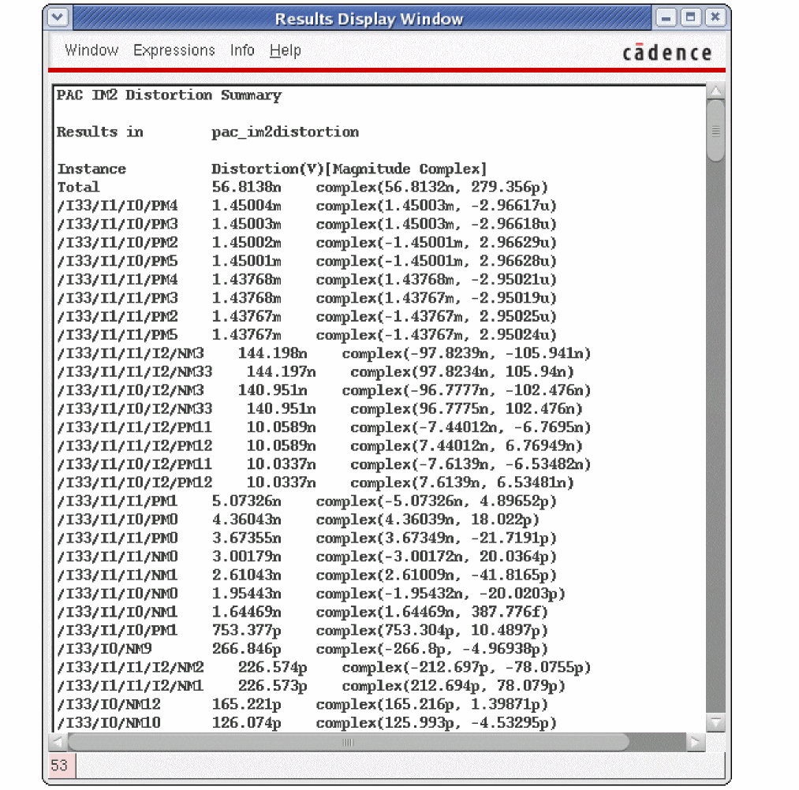
Sampled Circuits and Switched-capacitor Filters
For sampled circuits or for switched-capacitor circuits, always use shooting pss because the clocking waveforms have rapid transitions. Shooting captures these transitions in a natural and accurate way.
In pac, set up the IP2 distortion form just as you would for the mixer example above. Note that the linear output frequency is one of the input frequencies and the intermodulation frequency is the frequency spacing. Otherwise, the setup is exactly the same as the setup shown above.
Modulated PAC Analysis
Modulated pac analysis is usually applied to oscillators to measure AM-to-PM conversion from low-frequencies on the power supply (ripple) to the output near the first harmonic. It can also be applied to digital circuits for the same purpose. Although the shape of the transfer function is different, the steps are the same for both applications.
In the circuit, make sure that any PAC magnitude terms are removed on the input source (if there is one), and set the PAC Magnitude to 1 volt in the source that is used as the power supply. If you do not want to save the change permanently, just select Check - Current View in the schematic.
This example is for an oscillator. The circuit is shown below:
In ADE Explorer, set values for the power supply voltage and for the tuning voltage.
Set up the pss analysis. For more information on pss, see Overview of Periodic Steady-State (pss) Analysis.
In the pac Choosing Analyses form, first select Modulated in the Specialized Analyses section, as shown below.
Note that selecting Modulated causes the Sweep type to be set to relative. Since the gain from power supply ripple to the output is desired, the relative harmonic number is zero, and then the desired frequency range is entered. If the shooting engine is used, maximum sideband can be up to 4 times the number of harmonics in the pss analysis harmonics as shown above. Setting the Sweeptype to relative allows a frequency shift in multiples of the pss beat frequency to be applied to the input frequency. In this example, when the relative harmonic is zero, the input frequency range is not shifted at all in frequency.
Maximum sideband needs to be set larger than is needed for measuring the output frequency. In this case, the input signal is the ripple at low frequency, and the output is near the first harmonic. Because of this, Maximum sideband needs to be one or larger. In this case, the setting of Maximum sideband is set to the same number as the maximum harmonics setting in pss.
Input Type is set to SSB/AM/PM so that all the combinations of SSB, AM, and PM to SSB, AM, or PM can be calculated.
Next, the output frequency ranges to be calculated can be set. Note that a list of harmonics can be entered. The easiest way is to click the Choose button to the right of the field, and select the desired frequencies from a list in the Choose Harmonic window, as shown below.
The same process is used to set the input frequency, but only one frequency range is allowed.
Once the analysis has been set up, run the simulation. When the simulation completes, select Results - Direct Plot - Main Form.
The input defaults to AM. Select PM for the output. Since many output frequencies were calculated, you need to select the one you want to plot. In this example, the output just above the first harmonic is selected. Once this is done, select a net in the schematic.
The output is displayed. To make a measurement at a specific frequency, position a marker. The measurement is in radians per volt of input on the supply that has PAC magnitude set.
Sampled PAC Analysis
Pac sampled is for measuring the conversion gain at a specific instantaneous time in the pss waveform. The first step is to determine an appropriate threshold for the measurement by setting up the pss analysis, as shown below. Shooting is shown below, but this is also available in harmonic balance. For harmonic balance, the waveform is an ifft of the harmonics.
Now run the analysis. When the analysis completes, select Results - Direct Plot - Main Form in ADE Explorer and plot the time-domain waveform on the output net, as shown below.
Note that 2.5 volts is a value near the middle of the waveform. This is chosen as the threshold for the calculation. Pick a threshold that is appropriate for your system.
Now set up the pac Choosing Analyses form.
- At the top of the form, set up the input frequency range like normal.
- At the bottom of the form, select Sampled. Usually the gain to a node is desired, so select voltage.
- Click Select to the right of the Net+ field and select the node in the schematic. Note that if the Net- field is left blank, the global ground node is used.
- Specify the desired threshold voltage based on the time-domain waveform from the pss analysis
- Choose an option from the Crossing Direction drop-down box. In the example, all is selected.
- If you need more than 16 crossing points, type the number you need in the Maximum Samples field.
-
If you want to sample at specific times from the pss waveform, you can type in the times in the Additional Timepoints field.
-
Now run the simulation. When the simulation completes, open the Direct Plot Form and set it up, as shown below.
- Select pac from the Analysis section.
- Select Voltage from the Function section.
- Select spectrum from the Sweep section.
- Select dB20 from the Modifier section.
- Select the time you want from the list.
- Select the output node in the schematic.
The waveform is plotted as shown below
To zoom in to the frequency of interest, double-click one of the numbers on the X Axis, and type in the output frequency range of interest. This is shown below.
To measure the conversion gain to the output, move the tracking cursor to the output frequency and read the gain or place a point marker by typing m.
Periodic Noise Analysis (Pnoise)
Small-Signal Versus Large-Signal Analysis for Noise
In most cases, noise is a small-signal problem in the real world. Consider an amplifier. One approach is to calculate the small-signal gain from the noise sources to the output, then calculate the frequency response of the noise source, and then add up the noise power at the output. This is done in the linear noise analysis. This runs quickly because the gain calculation just takes the tangent at the DC operating point for everything in the circuit. This ignores large-signal effects like slew-rate limits and clipping. Because noise in most circuits is actually very small compared to the output levels, this approach works well. Because it is a linear approach, frequency translations cannot be calculated.
When the input to the amplifier gets large enough that it starts to create nonlinearity, the frequency translations in the circuit need to be taken into account. Noise near the harmonics can mix up or down to the output frequency. In this case, the large signal needs to be applied in a large-signal analysis like periodic steady-state (pss) where the nonlinearity and harmonic levels can be calculated. After the pss runs, pnoise runs and is similar to linear noise except the frequency translations of the circuit are taken into account. Instead of calculating a single gain from the noise source to the output, both the amplitude of the noise and the gain for the noise sources at the significant harmonics needs to be calculated, and each noise source now has several contributions at the output from several different noise frequencies that mix or alias to the output frequency. The basic strategy is to apply the signals that cause nonlinearity in the pss analysis, and follow that with a pnoise calculation.
This same approach can be taken for mixers where the LO signal deliberately introduces nonlinearity for the purpose of frequency translation. The LO signal is applied to the mixer in the pss analysis, and pnoise follows that. This works with the mixer by itself, or in combination with other circuits, like an LNA and a baseband amplifier.
Many designs need to tolerate a large amplitude blocking signal. The basic strategy is to apply the LO and the blocking signal (and not the RF signal) in the pss analysis and follow with pnoise. Note that depending on the frequencies of the LO and the blocker, pss may not be appropriate. If the highest frequency divided by the periodicity of the system (the pss beat frequency) is about 25 or less, pss-pnoise is a reasonable approach. If the highest input frequency is 2.5GHz and the periodicity is 1MHz, use hb-hbnoise or qpss-qpnoise instead because they will require much less time and memory to run. This is because pss calculates all the harmonics of the pss beat frequency, and 2500 harmonics would be needed just to calculate the fundamental frequency of the 2.5GHz input. Both hb and qpss calculate just the mixing frequencies that are actually produced by the circuit, which is a much smaller number of harmonics. The blocker power can be swept in the pss analysis and pnoise is run after each sweep value for the blocker power to measure the increase in noise with higher blocker power (desensitization).
For large-signal noise problems, or for systems that are not periodic, transient noise is provided. For more information on this, refer to the Spectre® Circuit Simulator and Accelerated Parallel Simulator User Guide. This approach requires specifying a maximum noise frequency to be analyzed, which in RF systems is usually quite high. Two timepoints are created in the period of noisefmax. The transient needs to be run over many noise points in order to characterize the noise present in the circuit and needs post-processing to see the results in the frequency domain. This usually requires much more time than using small-signal noise analyses.
Overview of Simulation Capabilities
The fundamental quantity calculated in pnoise is the output noise of the circuit with a large signal applied and including the noise translations caused by the nonlinearity of the circuit. In order to run pnoise, a periodic steady-state (pss) analysis needs to be run first in order to calculate the nonlinearity of the circuit and the amplitude of the harmonics that are present to mix with. Pnoise takes this information from the pss analysis and then for each noise source, it calculates the transfer functions from all the frequencies specified by the maximum sideband field in the Choosing Analyses form. Then it calculates the frequency response of the noise source itself. Next, it calculates the total noise power at the output for that source at all the noise frequencies that contribute at the output. Finally, it adds up all the noise power from all the sources at all the frequencies. Input-referred calculations require the selection of the input frequency range by setting the reference sideband. This selection is necessary because there are many transfer functions from the input to the output caused by mixing or aliasing from the different harmonics of the system. The passband frequency is also needed for the noise figure calculations.
Note that pnoise is a small-signal calculation that works for periodic systems. If the noise is large-signal, or the system is not periodic, transient noise should be used.
Example
Consider the double-balanced diode mixer below where a single-sideband noise figure measurement is desired.
The input source has variables set to define the frequency and amplitude of the two large-signal outputs. This is done so that the frequency and the amplitude can be set in the ADE Explorer window without changing the schematic.
The property list is shown below.
The variables have values set under the Design Variables section in the Setup pane of ADE Explorer. The easiest way to get the variables list is to generate a netlist from ADE Explorer or use Variables - Copy From CellView. This causes all the variable names to be entered in the variables section. Just click the value field for each variable and enter a value. Press <Enter> when you are done. In the figure below, the LO frequency set by the variable flo is 1GHz. This circuit just has the signal that causes the frequency translations to occur (the LO signal) applied. Note that 1.4 volts peak is +13 dBm. This is a common drive level for diode mixers.
The pss analysis needs to be run first in order to measure the amplitude of the harmonics and to characterize the nonlinearity of the system. From this, the noise folding from all the noise sources can be calculated in the pnoise analysis. For more information on the setup of the pss form, please refer to Overview of Periodic Steady-State (pss) Analysis.
Pss can be set to use either the shooting engine or the harmonic balance engine. The example below uses the shooting engine. Because shooting is a variation of the transient which automatically reduces the timestep in areas or rapid transition (where the diodes switch) and because the pss includes at least 200 timepoints in the solution, the PSS Shooting solution itself contains information to the 100th harmonic of 1GHz. For the pnoise to be accurate, at least 5 timepoints are needed at the highest frequency that is being calculated in the pnoise. Thus, with the defaults, frequency translations through the 40th harmonic of 1GHz can be accurately calculated when shooting is selected as the engine.
When harmonic balance is selected as the engine, the number of harmonics and the oversample factor need to be set appropriately. For more information, see Chapter 3, “Frequency Domain Analyses: Harmonic Balance,” Below is an example of harmonic balance in the pss Choosing Analyses form.
Regardless of the engine that is used in the pss Choosing Analyses form, the noise output frequency and the number of noise translations to be calculated are set up in the pnoise form. When harmonic balance is selected for the engine in pss, leave the maximum sideband field blank or set it to the number of harmonics in the pss-hb Choosing Analyses form, which calculates the noise translations for all the harmonics that are calculated in the pss analysis. When shooting is selected, you must specify the number of noise translations you want to calculate in the maximum sidebands field. Up to 40 noise translations can be calculated with the default settings in pss. The example below shows 40 sidebands, which is the number of harmonics used in the pss-hb analysis that is shown in the preceding figure.
The reference sideband setting is used to specify the passband frequency for the noise figure calculation.
In the example above, the output frequency is near baseband.
The reference sideband selects the passband frequency for the noise figure calculation. Once both forms are set up, the simulation is run. To plot outputs, select Results - Direct Plot - Main Form in the ADE Explorer window.
The top of the form lists all the analyses that were run. Select pnoise where the noise figure is calculated. Next, select NF because that is what is desired to be plotted. If the noise figure over a bandwidth is desired, select Integrated Over Bandwidth, and specify the frequency range you desire for the measurement.
When you are done, click Plot.
The waveform window plots the noise figure curve and the integrated noise figure calculation over the frequency range you specified in the direct plot form. This is shown below.
Principles of Pnoise
Pnoise has three basic types of noise calculation. The first mode calculates the average noise power that occurs with the variations of the LO or clock signal taken into account. The noise is averaged over the LO or clock cycle. This is calculated when the noisetype parameter is set to timeaverage. The AM and PM components of the noise can also be calculated from timeaverage. For oscillators, when PM is selected, an averaged measurement can be made for FM jitter as well as phase noise. When the noisetype is set to sampled(jitter), an instantaneous measurement of the noise at the threshold crossing in the pss analysis is calculated.This applies to both driven circuits and oscillators. There is a third setting in the Choosing Analyses form which is called timedomain. Conceptually, this does the same noise measurement as noisetype=sampled(jitter), but it requires you to do the jitter calculation manually. It also allows multiple places in the rising and/or falling edges to be measured.
Noise Type=timeaverage
Noise Output Near Zero Frequency
First, the pss analysis is run to calculate the nonlinearity and the harmonics. Then pnoise is run to calculate the noise. In all systems, there is a maximum number of noise translations that need to be taken into account. Either the system harmonics become so small that the amount of noise translation becomes minimal or the devices themselves have finite noise bandwidths.
These noise calculations from mixing or aliasing with the different harmonics are called sidebands.
In the diagram above the X axis is the frequency. The top represents the harmonics that are calculated by the pss analysis. The bottom represents the noise output frequency. The arrows show the various mixing paths to the output frequency. Pnoise calculates the noise contribution at the output with all these mixing paths in place. Black is the noise that occurs without mixing or aliasing. Purple is the noise that mixes with the first harmonic. Blue is the noise that mixes with the second harmonic. Red is the noise that mixes with the third harmonic.
In pnoise, the output frequency range is specified along with the highest harmonic to calculate the mixing products.
Noise Output Near The First Harmonic
Here, the noise output frequency is just above the first harmonic frequency. Black is the noise that occurs without mixing. Purple is the noise that mixes with the first harmonic. Blue is the noise that mixes with the second harmonic. Note that the noise frequency just below the first harmonic mixes with the second harmonic to provide the output just above the first harmonic. Red is the noise that mixes with the third harmonic. Note that the second term that mixes with the third harmonic is just above the fourth harmonic of the pss analysis which is not shown. The noise term shown with a dotted line is mixing with the fourth harmonic of the system.
Frequency Sweep
Since the fundamental quantity that is calculated in pnoise is the output noise, the frequency range defined in the Choosing Analyses form defines an output frequency range to calculate the noise for. For driven circuits, the default is to sweep an absolute frequency range. Oscillators will be covered later in this chapter.
For an up-conversion system, sometimes, a log frequency range is desired near one of the harmonics of the system. In that case, select relative sweep, and specify a harmonic number. In the output frequency range, type the desired offset frequency from that harmonic. Below is a diagram that shows relative to the first harmonic, which calculates the frequencies just above the first harmonic.
When a log sweep is desired below the first harmonic, set the relative harmonic to -1 as shown in the diagram below.
When automatic is selected for sweep type, 100 total points will be calculated. In most cases, fewer points are needed, so it is usually better to select linear or log and then specify the sweep you desire. Typically, 3 to 5 points per decade or about 20 total points are needed.
Maximum Sideband
There is a property in the Choosing Analyses form called Maximum sideband that is used to define how many mixing products should be calculated. If Maximum sideband is zero, the noise analysis will only contain the noise that appears without mixing or aliasing of any type. This is not equivalent to a linear noise analysis because pnoise takes into account the instantaneously varying nature of the noise because of the large signal being present in the pss analysis.
When Maximum sideband is one, then the noise without frequency translation and the noise that mixes or aliases with the first harmonic of the pss is present in the noise analysis. When Maximum sideband is 10, the noise analysis includes noise mixing through the 10th harmonic of the pss analysis. When harmonic balance is selected as the pss engine, the number of harmonics in the pss analysis and the maximum number of sidebands should be the same. This is easily accomplished by leaving the Maximum sideband field blank in the Choosing Analyses form in ADE Explorer. When shooting is selected for the pss engine, up to 40 sidebands can be set in the maximum sideband field by default. If you need more than 40 sidebands in pnoise, consider using full-spectrum pnoise.
Full-Spectrum Pnoise
Full-Spectrum pnoise is useful for circuits like switched-capacitor filters or sampling circuits where aliasing occurs through very high harmonics of the clock. The runtime advantages are large with no loss in accuracy of the result. Full-Spectrum pnoise is available when shooting is selected for the pss engine and APS is selected in the Setup - High Performance Simulation menu in ADE Explorer. Selecting fullspectrum in the pnoise form forces APS to be selected in ADE Explorer. If you are running from the command line without using aps, fullspectrum will not be used. In normal pnoise when shooting is selected, you need to set the maximum sideband term. In full-spectrum pnoise you do not except in cases where the pss beat frequency is 100KHz or less. In this case, set maximum sidebands to the 1/F noise corner frequency divided by the pss beat frequency. Pnoise calculates all the noise translations it can, based on the maximum timestep in the pss analysis. The easiest way to change the maximum timestep in pss is to increase the number of harmonics above 10 in the pss Choosing Analyses form. Full-spectrum pnoise runs faster than normal pnoise when the maximum number of sidebands in pnoise is about 50 or greater. The larger the number of sidebands, the larger the speedup for fullspectrum.
Fullspectrum pnoise is available for all available noisetypes. Noise separation is not supported when fullspectrum is selected.
Setting Harmonics and Sidebands
Harmonic Balance as the PSS engine
The process of setting harmonics and sidebands is similar to setting the maximum number of harmonics for the harmonic balance simulation. Start with an estimate based on the harmonic content of the input signal(s) and the nonlinearity of the circuit. Then run a simulation. Raise harmonics and sidebands and run the simulation again. If the noise measurement did not change, then the original number of harmonics and sidebands may be reduced. If it did change, then more are needed. For more details on this, refer to the section Harmonic Balance Noise Analysis (hbnoise).
Shooting as the PSS Engine
For full-spectrum pnoise, start with 10 pss harmonics, Select full-spectrum, and select APS. Run the simulation, and plot the noise result. Now increase the number of harmonics in the pss analysis, which forces more pss timepoints, and run the simulation again. If the pnoise result did not change, then you had enough harmonics to begin with. If the noise result did change, then increase the number of pss harmonics and run the simulation again.
For regular pnoise, estimate the number of sidebands based on the pss harmonic plot. As a coarse estimate, find the harmonic where the LO or clock signal drops to about 40 dB below the amplitude of the LO or clock first harmonic. For example, if this is the 10th harmonic, set maximum sideband to 10. Run the simulation and plot the noise measurement. Increase the number of sidebands until the noise result does not change anymore. Use the smallest number of sidebands that produces a stable result. If the number of sidebands is greater than about 50, consider using full-spectrum pnoise because it is likely to run faster than normal pnoise.
Noise Separation
In addition to the total output noise, the individual noise contributions can be plotted if noise separation is selected in the Choosing Analyses form. More information about the noise separation will be provided later. Noise separation is available when the noise type is set to timeaverage and is not available for fullspectrum pnoise. The things that can be plotted are:
- Total noise at the output from each individual noise input frequency. This allows the identification of which noise frequencies are causing the noise problem.
- The noise at the output from each instance name with all noise mechanisms included for mixing from an individual noise input frequency. Once the noise frequency is identified in point 1 above, this capability plots the total noise from each component at the troublesome noise frequency. This allows the identification of which component in the circuit is causing the problem.
- The noise at the output from each instance name with all noise mechanisms broken out separately for mixing from an individual noise input frequency. This capability splits out the individual noise sources at the troublesome noise frequency. For example, if a parasitic resistor was found to be the problem, the component might be resized to reduce the noise.
- The current noise at the noise instance for each instance name with all noise mechanisms included for mixing from an individual noise input frequency. This capability has limited value. For this plot, all the noise source currents for all the noise mechanisms within the component are added together.
- The noise current in the instance from each instance name with all noise mechanisms broken out separately for mixing from an individual noise input frequency. This capability allows the identification of which noise sources are the largest in the circuit. The measurement is at the source, not at the output.
- The gain to the output from each individual instance with all the individual noise sources broken out separately for mixing from an individual input frequency. This capability plots the gain from the noise sources in point 5 above to the output of the circuit.
Multiple Pnoise
Some systems contain multiple points in the circuit where the noise measurement is desired. When the Noise Type is timeaverage, multiple pnoise analyses are allowed. At the top of the pnoise Choosing Analyses form, an option called Multiple pnoise is provided. When this option is selected, up to six pnoise analyses can be made after a single pss analysis.
AM and PM Noise for Driven Circuits and Oscillators
Starting with IC617, the noise UI has been re-designed. Modulated has been removed and its functionalities have been merged to timeaverage, leaving three noise types now. In addition, the FM jitter option has been removed. FM jitter is calculated through timeaverage PM noise, which should be used when you want to get phase noise.
When Noise Type is timeaverage, USB, LSB, AM and PM noise are directly available. You can choose, for example, PM noise alone, or you can select the ALL(AM,PM,USB,LSB) option, if all the four types are needed. The available options are USB, AM, PM, AM&PM, and ALL(AM,PM,USB,LSB).
AM and PM noise is discussed below.
To illustrate AM noise, see the phasor diagram below.
This diagram illustrates a periodic signal with AM noise. The black phasor is the output signal, and AM noise is a random vector that varies the amplitude of the signal.
PM noise is shown in the phasor diagram below.
In this case, the amplitude is constant, but the noise is a random vector perpendicular to the signal phasor. The timing of the signal varies a bit from cycle to cycle.
FM jitter and phase noise are only available through the PM noise option.
Most circuits produce a combination of AM and PM noise. This concept is shown below.
In this case, a random vector at any angle and amplitude is produced that varies at each instant of time. If the uncertainty creates a round shape, the AM component and the PM component are the same size.
In many circuits, AM or PM noise may dominate. If the PM noise dominates, the circle turns into an ellipse that is larger in the perpendicular direction than in the parallel direction. This is shown below.
Noise Type=sampled(jitter)
Jitter is usually applied to digital circuits where the average noise over the entire waveform is not appropriate. Noise in high state and low state does not matter because the output voltage is so far from the voltage that triggers the load that it does not matter. The only time the noise matters is at the exact time where the trigger event is generated. Also, the noise in the low and high state is quite small because one device is completely off, and the other device is driven on. It is basically a resistor. The device is not as good as an amplifier because the output is pulled hard into a rail. As the state changes, both devices are on, and they are relatively better amplifiers. As a result, the noise is likely to be larger in the switching interval. In jitter, the voltage for the noise measurement, and the selection of the rising edge, falling edge, or both, is made. At the specified threshold voltage, a noise measurement is made at that instant in time. Once the noise voltage is known, the timing uncertainty can be determined from the slew rate. Since the RMS noise voltage is calculated, the timing uncertainty is one standard deviation from the ideal crossing time. This is illustrated below. Currently, this calculation is done in post-processing with a Direct Plot function.
sampled(jitter) has three modes. Edge Crossing is the mode just described. You specify a threshold and direction called the trigger, which defines the time when the noise measurement is made. In many cases, the measurement net will be on the same net as the trigger as shown in the diagram above, but the measurement can be made on another net in the circuit. This is useful when you want to make a noise measurement on the output of a switched-capacitor filter triggered by the clock waveform.
The Edge Delay mode is similar to edge crossing mode except that both the trigger and the measurement are edges in the circuit. For example, you might use the rising edge of a net and the falling edge for the same net to get the jitter of the pulse. Because both the trigger and the measurement are edges, the simulator calculates the jitter internally. This is done because the slew rate of the rising and falling edges are usually not the same.
The Sampled Phase mode is the equivalent of the old time-domain pnoise selection. You specify a list of PSS times you want to use to calculate the noise voltage. There is a Direct Plot function to calculate the noise voltage at the different times. If you then divide by the derivative (slope) of the PSS waveform, you get the jitter.
Noise Calculations
Phase Noise (Driven Circuit)
For a driven circuit with a single input frequency, phase noise is the total noise at the output divided by the amplitude of the first harmonic at the output node specified in the pnoise analysis. Note that phase noise from the pnoise results selection is a single-sideband phase noise. Only the frequencies above the oscillator frequency are included in the measurement. To get a double-sideband phase noise measurement, set the noise type to sampled(jitter), and select the pnoise jitter result set.
Noise Factor and Noise Figure
When the pnoise analysis is set up with voltage selected instead of probe for the input, noise figure and noise factor will not have the noise of the load subtracted automatically from the measurement. Using a port as the input probe is required to obtain noise figure and noise factor calculations.
In the Direct Plot Form, noise factor and noise figure are both single-sideband measurements.
((All the noise power at the output from all the components with all the frequency translations) - (Noise power at the output from the load))/Noise power at the output from the resistance of the input port from the passband frequency only.
Note that in order to calculate the noise factor, a port component must be used as the input. In the Choosing Analyses form, the input port is identified by the instance name. The port component is a voltage source in series with a resistor and is considered as a single element. No access is provided to the results for the internal node where the resistor and voltage source join.
In order to determine the passband frequency, the reference sideband must be supplied. This specifies the passband frequency for the noise figure calculation. The easiest way to select the reference sideband is to use the Select from list feature in the pnoise Choosing Analyses form.
The noise from the load is normally defined by selecting the port or resistor that is serving as the load for the circuit in the Choosing Analyses form.
10*log(10) (Noise Factor)
Noise factor (IEEE) is similar to the noise figure measurement above. If you subtract from the numerator all the noise from the input port at all frequencies except the passband, you have the IEEE noise factor.
Note that in order to calculate the IEEE noise factor, a port component must be used as the input. In the Choosing Analyses form, the input port is identified by the instance name. The port component is a voltage source in series with a resistor and is considered as a single element. No access is provided to the results for the internal node where the resistor and voltage source join.
In order to determine the passband frequency, the reference sideband must be supplied. This specifies the passband frequency for the noise figure calculation. The easiest way to select the reference sideband is to use the Select from list feature in the Choosing Analyses form.
The noise from the load is normally defined by selecting the port or resistor that is serving as the load for the circuit in the Choosing Analyses form.
((All the noise power at the output from all the components with all the frequency translations) - (Noise power at the output from the resistor in the input port at all frequencies except for the passband) - (Noise power at the output from the load))/Noise power at the output from the resistance of the input port from the passband frequency only.
10*log(10) (IEEE Noise Factor)
Noise factor DSB is similar to the single sideband noise factor above, except in the denominator, the noise power from the input port at the image frequency is added.
Note that Noise Figure and NFiee are both single-sideband measurements. The difference between the measurements is that in noise figure, all the noise frequencies from the input port that contribute noise at the output are included, and in NFieee, only the noise at the passband frequency is included. As a result, NFieee will produce a lower noise figure than Noise Figure. The difference between the measurements depends on the circuit.
((All the noise power at the output from all the components with all the frequency translations) - (Noise power at the output from the load))/Noise power at the output from the resistance of the input port from the passband and image frequencies only.
Note that in order to calculate the DSB noise factor, a port component must be used as the input. In the Choosing Analyses form, the input port is identified by the instance name. The port component is a voltage source in series with a resistor and is considered as a single element. No access is provided to the results for the internal node where the resistor and voltage source join.
In order to determine the passband frequency, the reference sideband must be supplied. This specifies the passband frequency and by inference the image frequency for the noise figure calculation. The easiest way to select the reference sideband is to use the Select from list feature in the Choosing Analyses form.
The noise from the load is normally defined by selecting the port or resistor that is serving as the load for the circuit in the Choosing Analyses form.
10*log(10) (Noise Factor (DSB))
No = total output noiseNs = noise at the output due to the input probe at the passband frequency (the source)Nsi = noise at the output due to the image harmonic at the sourceNso = noise at the output due to harmonics other than input at the sourceNl = noise at the output due to the output probe (the load)IRN = input referred noiseG = gain of the circuitF = noise factorNF = noise figureFdsb = double sideband noise factorNFdsb = double sideband noise figureFieee = IEEE single sideband noise factorNFieee = IEEE single sideband noise figure
IRN = sqrt(No^2/G^2)
F = (No^2 - Nl^2)/Ns^2
NF = 10*log10(F)
Fdsb = (No^2 - Nl^2)/(Ns^2+Nsi^2)
NFdsb = 10*log10(Fdsb)
Fieee = (No^2 - Nl^2 - Nso^2)/Ns^2
NFieee = 10*log10(Fieee)
When the pnoise analysis is set up with voltage selected instead of probe, noise figure cannot be calculated.
Input-Referred Noise
Noise transfer function
Pnoise calculates the forward gain from the input passband to the output and saves it. In the Direct Plot Form, this is called Transfer Function, and is in linear volts at the output divided by volts at the input.
Commonly Used Pnoise Options
Solver
This option is used for driven circuits only.
For harmonic balance pnoise, leave this option at the default value. For shooting pnoise, sometimes you will see warning messages that the residual is larger than the tolerance specified. This usually occurs at low offset frequencies. If you see this message, then select the std solver, which is more able to handle low offset frequencies. The runtime will increase when the std solver is selected.
Oscsolver
This option is used for oscillators only.
For harmonic balance pnoise, leave this option at the default value. For shooting pnoise, sometimes, you will see warning messages that the residual is larger than the tolerance specified. This usually occurs at low offset frequencies. If you see this message, then select the std solver, which is more able to handle low offset frequencies. The runtime will increase when the std solver is selected.
The ira solver may use less memory than turbo or std, but it is less robust for convergence.
TD Noise Algorithm Version
Leave this option at the default. (dts)
If your circuit has low frequency poles, (usually from a biasing circuit) the default dts solver is much more accurate than the standard solver.
hbprecond_solver
This option is only available when harmonic balance is set for the pss solver. When APS is not used, only the basic solver is available. When APS is used, first a much faster preconditioner is used. Occasionally, this preconditioner will stagnate, and when it does, it issues a warning that it is switching to the basic solver, and it reverts back to the basic solver. A preconditioner is a mathematical algorithm that makes the iterative matrix solving process faster.
Lorentzian
There are two ways of looking at phase noise. One way is to think of measuring the spectral output of the oscillator with a network analyzer. In this case, as the frequency gets close to the oscillator frequency, the amplitude starts going up, levels off, and then drops as the oscillator frequency is passed. In this case, the noise cannot be larger than the oscillations themselves, which is 0 dBc. If this is how you view phase noise, set the lorentzian option to yes.
If you think in terms of jitter, in one cycle of the oscillator output, because of the noise, you can calculate one standard deviation of the timing. If you go two cycles, and you integrate the noise with respect to time, you get twice as much noise power, or about 1.4 times the noise voltage or jitter. When you get to an infinite number of oscillator cycles, the jitter also becomes infinite. As you increase the time, you are lowering the noise frequency, and in this case, as the time becomes large, the frequency becomes very low. At infinite time, you get infinite jitter, and this occurs at zero offset from the carrier. Jitter is just another way of looking at phase noise. In other words, the phase noise can easily exceed the carrier amplitude (0 dBc) as the offset frequency becomes small because it is heading to infinity at zero frequency offset. If this is how you view phase noise, set the lorentzian option to no.
Lorentzian=yes means calculate the leveling off. Lorentzian=cornerfreqonly calculates the continuously rising phase noise, but it places a marker on the phase noise curve at the frequency where the phase noise would level off. No causes the phase noise to continue to rise as the offset frequency approaches zero.
Tolerance
Leave this option at the default.
Pnoise uses an iterative solver to calculate the noise, and any iterative solver needs a tolerance term to specify when the system has been solved accurately enough. The default for shooting pnoise is 1e-9. Harmonic balance driven circuit pnoise tolerance is 1e-6 and 1e-4 for oscillators.
Gear_Order
Resgmrescycle
Leave this option at the default, which is short.
Saveallsidebands
Leave this option at the default value of no. If you want to see the noise contributors from the different noise input frequencies, select yes for noise separation in the pnoise main Choosing Analyses form.
Enable Osc PPV
AdditionalParams
This is typically used for customers who are evaluating new features. If you know the option name and the value, you can type it here. For example, you can type solver=std in this field instead of using the check box in the options form.
ADE Implementation
General Notes
All pnoise types are supported whether the pss engine is shooting or harmonic balance. Because Chapter 3 in this manual talks about harmonic balance exclusively, in this Chapter most of the examples will reference shooting pss. Where there are differences between shooting and harmonic balance, those differences will be noted. Otherwise, shooting and harmonic balance are completely interchangeable, and will provide the same answer as long as enough harmonics are used in harmonic balance.
Because shooting takes a minimum of 200 timepoints in the pss, the pss data inherently contains data through the 100th harmonic of the pss. For this reason, unless there is a requirement to calculate noise translations through more than the 40th harmonic of the pss, it is seldom required to force more harmonics in shooting pss. Also with shooting pss, fullspectrum is available, which does not require setting sidebands at all in most cases. However, if the pss beat frequency is 100KHz or less, then set maximum sideband to the 1/F noise corner frequency divided by the pss beat frequency. In harmonic balance, only the harmonics that are solved in the pss exist. When harmonic balance is selected, if you set maximum sideband larger than the number of pss harmonics, a warning message will be entered in the Spectre output log, and maximum sideband will be reset to the number of pss harmonics.
Driven Circuits
Noise Type = timeaverage USB noise
On the Choosing Analyses form:
-
First, set up the pss analysis. For more information on the pss analysis, see the beginning of this chapter.
-
In the pnoise Choosing Analysis form, specify the output frequency range of your circuit.
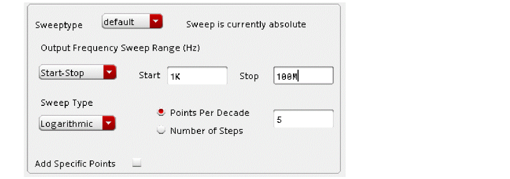 - Set about 3 to 5 points per decade in the Points Per Decade field.
-
When hb is selected as the engine in the pss form, leave the Maximum sideband field blank or set it to the same number as the number of harmonics in the HB analysis. This specifies that the noise that mixes with all the hb harmonics is calculated. When the pss engine is set to shooting, first decide whether or not to use full-spectrum pnoise, and if the default method is used, set a number of sidebands that is appropriate for your circuit. APS is selected automatically and is required when using full-spectrum pnoise. When fullspectrum pnoise is used, leave the Maximum Sideband field blank except for some special cases. If the PSS frequency is lower than the flicker noise corner frequency, set maximum sidebands to the next larger integer from the ratio of the noise corner frequency divided by the PSS frequency. In the case of an oscillator with a divider and you want to measure the flicker noise on the oscillator, set maximum sidebands to the divider ratio.
-
Specify the output of the circuit. When output is set to probe, a resistor or a port can be selected and this noise will be subtracted from the noise figure calculation. This is an easy way to get the correct answer for a noise figure calculation.
The nodes that the probe is connected to also define the output nodes for the circuit. If you connect the probe across a differential circuit, the noise measurement is for that differential circuit. Also note that when you select a probe, it is only used in the noise figure calculation. The output noise includes the noise of the selected element.
- Select port from the Input Source drop-down list for noise figure calculation.
-
Choose Select from list from the drop-down list for reference sideband, which specifies the input frequency range (also called the passband frequency range) for the noise figure calculation.
- Select the passband frequency range from the list.
-
Select timeaverage from the Noise Type drop-down list to calculate the average noise power at the output averaged over the entire time of one cycle of the input waveform.
- Select the Noise Separation check box to enable plotting of the individual noise contributors in the circuit. Noise separation is only available when Noise Type is set to timeaverage.
Multiple pnoise
When Noise type is set to timeaverage, multiple pnoise analyses can be run after a single pss analysis. This is useful for LNA-Mixer combinations, or in any circuit where there are multiple points in the circuit where noise is important.
To run multiple analyses after a single pss:
-
First, set up the pss analysis as appropriate for your circuit. For more information, please see the pss section at the beginning of this chapter.
- Select the Multiple pnoise check box located at the top of the pnoise Choosing Analyses form.
-
Set up all the noise analyses you want to run, as shown below.
Noise Type = timeaverage AM, PM, AM&PM noise
Timeaverage allows the measurement of the AM and PM components of noise separately.
First, set up the pss analysis as appropriate for your circuit. For more information, see the periodic steady-state section at the beginning of this chapter.
On the pnoise Choosing Analyses form:
-
Set up an appropriate frequency range of interest.
-
Set an appropriate number of sidebands. When harmonic balance is selected for the pss analysis, this field should be left blank. Fullspectrum is available for shooting only, and will be faster than the default pnoise when the number of noise sidebands is about 50 or greater with no loss in accuracy.
-
Select timeaverage from the Noise Type drop-down list.
Run the simulation.
Now plot the Output noise using the Direct Plot Form.
- Select pnoise from the Analysis section.
- Select AM or PM from the Noise Type section. AM is selected here. Note that you can choose SSB or DSB for AM and PM noise, DSB is 3dB higher than SSB noise.
-
Select V/sqrt(hz) from the Units section.
-
Click Plot.
Noise Type=sampled(jitter)
This selection has three modes:
sampled(jitter) is usually used for measuring the noise in a digital circuit at a specific threshold crossing. Usually, shooting pss is used to capture the waveform, but this capability is also implemented in harmonic balance. Harmonic balance will considerably take longer than shooting PSS so it is discouraged.
First set up a PSS analysis as shown below.
An appropriate threshold is needed, which can be determined by plotting the time domain waveform from the pss Direct Plot Form. The waveforms below show an appropriate threshold value to be 1.65V. Int2 and int3 are the nets at the input and output of an inverter.
On the pnoise Choosing Analyses form,
- Set the stop frequency as half the input frequency.
- Set the start frequency 4 decades below that.
- Select Add Specific Points and log sweep with about 5 points per decade.
-
Select the sidebands method.
Generally, fullspectrum pnoise is recommended. - Leave the maximum sidebands field blank when using fullspectrum.
- Set the Noise Type to sampled(jitter).
-
(Optional) Specify Sample Ratio as half the oscillator frequency.
Sample ratio is the ratio between sampled frequency and fundamental frequency.
Edge Crossing Mode
In this mode, an edge sets the time of the measurement and the measurement net specifies where in the circuit the jitter measurement should be made. In the example below, the trigger is the rising edge of the output net as it crosses VDD/2 and the noise is measured on the same net. For switched-capacitor filters, the trigger could be the clock and the measurement could be the output net of the filter
When the simulation completes, use the Direct Plot Form to plot the jitter. For driven circuits, select Jee, which is an edge-to-edge jitter.
In the Modifier section, UI is unit interval, and ppm is parts per million.
The output noise frequency response and the edge-to-edge jitter are displayed. The jee measurement is one standard deviation for the expected jitter.
Note that Edge Phase Noise is available in the Function section as a plot option. This is normally used for oscillators. It plots the single-sideband phase noise of the circuit.
Sampled Phase mode
This mode is equivalent to the old time-domain noise. In this mode, you specify a list of PSS times to use for noise voltage calculation. This is useful for digital circuits because you know that the threshold will vary as the process changes. This mode can give you a way of gauging how jitter varies during the transition.
First, plot a PSS waveform for the net you want to measure. Decide the range of voltages in the waveform to calculate the noise voltage. In this example, VDD/2 is 1.65V, so we place markers at 0.65V and 2.65V. Now, read the PSS times from the markers. In this case, times from 72psec to 84psec are useful.
Now, set up the pnoise Choosing Analyses form. In the form:
- Select Sampled Phase.
- Select the desired net for the output.
-
Type
1in the Samples Per Period field. - Click the Add Specific Points check box.
-
Type in a list of times separated by a space in the field to the right.
In this example, there are points from 72p to 84p every one p. -
Click Add.
Note that this setup has been added to the list. There is no limit to the number of analyses in sampled(jitter) mode.
- Run the simulation.
After the simulation completes, select Results - Direct Plot - Main Form.
- Select pnoise sampled from the Analysis section.
- Set the Measurement Selection to the run with the sampled phase results.
- Select Integrated Output Noise from the Function section.
- If the frequency range is not set, set it to the frequency range used in the pnoise analysis.
-
Click Plot.
The result is shown in a new subwindow.
In the left subwindow, right-click on the X axis and select Allow Any Units from the context menu, as shown below.
Pull the waveform from the right subwindow into the left subwindow. Zoom in to the edge. Note the variation in noise voltage as the edge transitions.

Edge Delay Mode
In this mode, both the trigger and the measurement are edges in the circuit. To set this up,
- Select Edge Delay.
-
Set the trigger edge and threshold.
In this example, the trigger is the rising edge on the input to an inverter. -
Set the measurement edge and threshold.
In this example, the falling edge of the same inverter is set. -
Click Add.
Note that a third measurement is in the list.
- Run the simulation.
After the simulation completes click Results - Direct Plot - Main Form.
- Select the edge delay run from the Measurement Selection drop-down list.
- Select JDelay from the Function section.
-
Select Param-Event and select the event from the list at the right.
In this case there is a single measurement. - Specify the frequency range from the pnoise Choosing Analyses form.
-
Click Plot.
The frequency response of the jitter plots and a marker is placed at the end with the jitter measurement. This is one standard deviation of the jitter.
Oscillators
Noise Type = timeaverage USB noise
The settings are the same as driven noise type = timeaverage with the exception of being a relative sweep by default. Since the phase noise of the oscillator is near one of the harmonics, Sweeptype is set to relative by default. A harmonic number is provided for the case where there is a frequency multiplier or a frequency divider on the output of the oscillator. Noise type = timeaverage also has the ability to plot the noise contributors from mixing with each harmonic when noise separation is selected. There is an example of noise separation later in this chapter.
The pnoise setup is similar to driven except that the relative harmonic is specified. The frequency of the relative harmonic number will be added (if the harmonic number is positive) or subtracted (if the harmonic number is negative) to the frequencies in the Frequency Sweep Range field.
-
First, set up the pss analysis as appropriate for your circuit. For more information on the pss analysis, see the periodic steady-state analysis section at the beginning of this chapter.
On the pnoise Choosing Analyses form: - Specify the appropriate harmonic number for your design. In this example, the first harmonic is specified in the Relative Harmonic field. If you are designing an oscillator by itself, the harmonic number is one. If you have an oscillator with a frequency doubler on the output, the harmonic number is two.
-
The frequency range is added to the frequency of the harmonic number that is specified.
-
If the pss engine is harmonic balance, leave the Maximum sideband field blank. If the pss engine is shooting, select whether the default method or the full-spectrum method should be used. Full-spectrum is faster than the default method when more than about 50 sidebands are required for your circuit and it also does not require the maximum sideband field to be set. When the default method is selected, specify the number of desired frequency translations in the Maximum sideband field (shown below). This will always be specific to the design. For a rough estimate, plot the frequency domain content, and find the harmonic number where the amplitude has dropped about 40dB. Try this number in maximum sidebands. To verify that you have enough sidebands, raise the number by about 50% and run again. If the noise result did not change, then you had enough sidebands to begin with. Up to 40 sidebands can be specified by default. If you need more than 40 sidebands, set the number of pss harmonics to the number of sidebands divided by two to four.
-
Select voltage from the Output drop-down list.
- Specify the output node in the Positive Output Node field. When the negative node is left blank, the global ground node is used.
- Select none from the Input Source drop-down list.
-
Select timeaverage from the Noise Type drop-down list. This gives a noise measurement that is the average noise power at the output with the large signal applied in the pss analysis and the noise folding specified by the maximum sideband parameter in the Choosing Analyses form.

- Select yes for Noise Separation, if you want to plot the individual noise contributors. Fullspectrum does not support noise separation.
Noise Type = timeaverage PM noise
Oscillator Phase Noise Measurement
This selection allows for measurement of cycle jitter, cycle-to-cycle jitter, and AM and PM components of phase noise. This is an averaged noise measurement over one cycle of the oscillator.
-
First, set up the pss form as appropriate for your circuit. For more information on the pss analysis, Chapter 4, “Overview of Periodic Steady-State (pss) Analysis,”.
-
On the pnoise Choosing Analyses form, select timeaverage from the Noise Type drop-down list.
- Select the ALL(AM,PM,USB,LSB) radio button.
- Run the simulation.
After the simulation completes Results - Direct Plot - Main Form in ADE Explorer.
- Select pnoise from the Analysis section.
- Select Output Noise.
- Select dBc/Hz.
- Select SSB (Single Sideband) or DSB. (Double Sideband)
-
Click Plot.
The result is displayed in the waveform tool.
-
Select Jc or Jcc from the Function section.
In the Modifier section, UI is Unit interval, and ppm is parts per million. - Click Add To Outputs.
- Click OK.
The Jc or Jcc calculation is displayed in the ADE window, as shown below.
Noise Type=sampled(jitter)
sampled(jitter) mode has the same three modes as for driven circuits. The most useful is the edge crossing mode for the calculation of phase noise at a threshold crossing. Note that timeaverage and sampled normally produce the same result for oscillators except at large offset frequencies. This example compares sampled and timeaverage results. Although this is supported for both shooting and harmonic balance, if the waveforms are mostly square waves, shooting will run faster and be much less error prone than harmonic balance. If you use hb, make sure that you set the number of harmonics to at least the period of the waveform divided by the fastest 10% to 90% risetime on the fastest transition in the circuit. Set up the pss analysis as appropriate for your circuit. For more information, see Chapter 4, “Overview of Periodic Steady-State (pss) Analysis,”.
In the pnoise Choosing Analyses form,
-
Select sampled(jitter) from the Noise Type drop-down list.
- Select the Edge Crossing mode.
- Select the oscillator output net.
- Specify the voltage for instantaneous noise measurement in the Threshold Value field.
- Select a value from the Crossing Direction drop-down list.
- Click OK.
- Run the simulation.
After the simulation completes, select Results - Direct Plot - Main Form in ADE Explorer.
- Select pnoise sampled from the Analysis section.
- Select Edge Phase Noise from the Function section.
-
Click Plot.
The phase noise is plotted in the waveform tool, as shown below.
Below is a comparison of SSB phase noise and sampled(jitter) for this example. The results are the same except at large offset frequencies where the amplitudes are very small.
Examples
Driven Circuit Noise Setup
On the Choosing Analyses form:
-
First, set up the pss analysis for your circuit. For more information see the pss section at the beginning of this chapter. Shooting is shown in the example below.
-
In the pnoise Choosing Analyses form, specify the output frequency range of your circuit.
- If you use log spacing, set about 3 to 5 points per decade in the Points Per Decade field.
-
When Harmonic Balance is set for the pss engine, you can leave the Maximum sideband field blank. All the mixing products from the large-signal analysis will be considered. If the pss engine is shooting, select whether the default method or the full-spectrum method should be used. Full-spectrum is faster than the default method when many sidebands are required for your circuit and it does not require the sidebands to be set. When the default method is selected, specify the number of the desired frequency translations in the Maximum sideband field. Up to 40 sidebands can be specified by default.
- Select the resistor or port component used for the load resistance. This excludes the noise from this component for the noise figure calculation, but keeps it for the total noise output calculation.
-
If you want a noise figure calculation, you must use a port as the input for the circuit. Set the instance name.
- The easiest way to select the reference sideband is to set it to Select from list.
-
Select the passband frequency range you want for the noise figure and input-referred noise calculations.
-
If you want to see the noise contributions from the individual frequencies and the different device noise calculations individually on the output of the noise analysis, enable noise separation. This is not supported for the full-spectrum method.
- When you are done with the setup, run the simulation.
Noise Summary
The noise summary provides information about the devices that contribute noise to the output. It supports USB, LSB, AM and PM noise. This information is available any time a pnoise simulation completes.
In ADE Explorer, select Results - Print - Noise Summary. You will see the following options depending on the selection you have made for Noise Type in the pnoise Choosing Analysis form
pnoise_am - This option is available if you select the timeaverage option from the NoiseType drop-down list and select AM or ALL(AM,PM,USB,LSB) as the contribution type. pnoise_am has information about the amplitude modulated noise.
pnoise_pm - This option is available if you select the timeaverage option from the NoiseType drop-down list and select PM or ALL(AM,PM,USB,LSB) as the contribution type. pnoise_pm as information about the phase modulated noise.
pnoise_usb - This option is available if you select the timeaverage option from the NoiseType drop-down list and select USB or ALL(AM,PM,USB,LSB) as the contribution type. pnoise_usb has information about the total noise from frequencies above the output frequency.
pnoise_lsb - This option is available if you select the timeaverage option from the NoiseType drop-down list and select ALL(AM,PM,USB,LSB) as the contribution type. pnoise_lsb has information about the total noise from frequencies above the output frequency.
If noise separation is enabled, an additional pnoise_src option will be added along with the above options. pnoise_src has information about the noise currents at the individual noise sources at the noise source.
If you want the noise contributors at a single frequency, select spot noise. If you want to have the noise integrated over a frequency range, select integrated noise.
If you want noise in volts, set the noise unit to V.
You can choose a value from the hierarchy level drop-down box to view the noise contributions from all noise sources within each instance at the specified level of hierarchy.
Generally, Include All Types should be selected. If you just want the noise from specific types of noise generators, you can select them from the list.
If you want to specifically include or exclude instances in the list, use the select button to the right side of the include instances and exclude instances fields and then select the components in the schematic.
Truncate just applies to the list. The total input and output-referred noise at the bottom of the noise summary output always includes all the noise from everything.
The figure below is the noise summary window with the sort function being set to noise contributors. Then there are three windows that show the three different sorted outputs.
An example of the noise summary output sorted by noise contributors.
An example of the noise summary output sorted by composite noise.
The below output is sorted by device name.
For all of the noise summaries, here is a table of the abbreviations used in the Param column:
| Parameter | Meaning |
|---|---|
| Parameter | Meaning |
|---|---|
| Parameter | Meaning |
|---|---|
Figure 4-1 HiCUM Schematic Diagram
| Parameter | Meaning |
|---|---|
|
Parasitic transport collector to emitter current noise (See diagram below) |
|
|
Parasitic transport base to emitter current noise (See diagram below) |
|
Figure 4-2 VBIC Schematic Diagram

| Parameter | Meaning |
|---|---|
Figure 4-3 BSIM4 Schematic Diagrams

Figure 4-4 PSP-103 Schematic Diagram

Figure 4-5 EKV3.0 Schematic Diagrams

-
In a unix/linux shell window type
which spectre.
This should return a path that ends intools/bin/spectre. - Triple-click the line with the path, and then click the center mouse button to enter it as a command.
-
Use the backspace key, and delete the word
spectre. -
Type
cdnshelpat the end of the expression, and pressEnter.
A browser window will be displayed. - Close the Tip of the day window.
- At the top, you should see the release number of the simulator you are using.
- Click the plus sign (+) to the left of the MMSim folder.
- Click the plus sign (+) to the left of the Spectre Circuit Simulator Components and Device Models Reference folder.
- Select the device type you are using.
- At the bottom of that device listing, you will see Component Statements. Double-click on this.
- Enter the name of the parameter in the search box in the right pane of the cdnshelp window.
- Click the down arrow to the right of the Find field until you see the parameter name in the pane on the right side, and then see the definition of that parameter.
Noise Figure
- Select pnoise from the Analysis section.
- Select the desired type of noise plot from the Function section. Noise Figure is single-sideband noise figure.
- If you want the noise figure over a specified bandwidth, check the Integrated Over Bandwidth checkbox.
- Specify the frequency range you want for the noise figure calculation.
-
Click Plot.
The dsb noise figure and the noise figure calculation over your bandwidth are displayed.
Viewing Noise Separation Results
Viewing the Total Noise at the Output from a Single Noise Input Frequency
This capability allows the noise from all sources in the circuit at different noise input frequencies to be measured. For example, all the noise that does not change frequency (the zero sideband) can be plotted, along with the other noise input frequencies (sidebands) This plotting capability allows problem frequencies to be identified.
- Select pnoise separation from the Analysis section.
- Select the noise type from the Noise Type section. By default, USB is selected.
- To view the total noise at the output select Sideband Output from the Function section.
- Select V/sqrt(Hz) or v**2/Hz from the Signal Level radio buttons.
- Select the appropriate modifier from the Modifier section.
- Select the sideband number form the Output Sideband list. 0 means no frequency translation.
-
Click Plot.
The output noise from sideband zero is plotted. This is the noise that is present at the output with no frequency translations included.
Plotting Noise from Sideband -1
-
Select the -1 sideband from the Output Sideband list. Selecting the -1 sideband means the noise frequency is shifted down in frequency by -1* first harmonic of pss from the frequency that is specified as the noise output frequency in the Choosing Analyses form. For example, if the pss frequency is 1.9G, and the noise output frequency is 1M, the noise input frequency is -1.899GHz.
-
Click Plot.
As a suggestion, use the Graph - Add Label menu option to place labels to identify the traces, as shown in the figure above.
If you select multiple sidebands to be plotted at the same time, the sideband number will be shown at the right side of the legend in the waveform window.
Viewing Total Noise at the Output from each Instance
Once the problem frequencies are identified in the plot of Sideband Output, the problem components need to be identified. From the previous plot, the zero sideband contributes the largest amount of noise to the overall output noise. Using the Instance Output allows the identification of which components in the zero sideband contribute the most noise. The total noise for all the noise mechanisms within the component is plotted.
- Select Instance Output from the Function section.
- Select V/sqrt(Hz) or V**2/Hz.
- Select the appropriate modifier.
- Select the sideband number. In this example, the zero sideband was determined to contribute the most noise at the output of the circuit.
- Select the type of component to display. If you want all of the types, choose Include All Types.
- Specify the number of results you want to plot in the Truncate section.
-
Click Plot.
The total noise at the output for the top three components is plotted.
To see which component goes with which trace, select the plus sign (highlighted in red on the previous graphic) to the left or the text at the upper left of the display area. The legends expand, and you can see which trace is which in the Name field on the left side of the display tool. You can also either select the trace or the individual entry in the Name field and the trace and legend will highlight. The instance name is shown on the right side of the legend. You may need to change the size of the legend area by moving your mouse cursor over the line that separates the two areas in the waveform tool. The cursor will change shape. Now click-and-hold the mouse button, move to a new location, and release the mouse button.
Viewing the Exact Noise Mechanism Within the devices
The sideband with the largest contribution was determined by selecting Sideband Output and plotting. The specific component was identified by selecting Instance Output. The specific noise mechanisms can be identified using Source output. This plots the largest individual noise mechanisms for the sideband you select.
- Select Source Output from the Function section.
- Select V/sqrt(Hz) or v**2/Hz.
- Select the appropriate modifier.
- Select the sideband number.
- Select the type of component to display. If you want all of the types, choose Include All Types.
- If you want to restrict to one device, put its instance name in the include inst field. A list of devices separated by a space is also acceptable.
- If you want to exclude a device (or devices) enter the instance name(s) in the exclude inst field.
- Specify the number of results you want to plot in the by top field.
-
Click Plot.
The exact noise mechanism within the devices is plotted.
To see which noise source goes with which trace, select the plus sign to the left or the text at the upper left of the display area. The legends will be shown individually in the Name field of the waveform tool. The device name and the individual noise contributor will be shown. You can select either the individual legend or the trace and both the legend and the trace will be highlighted. The first part is the instance name, and the second part is the specific noise mechanism within that instance. For a list of the abbreviations used for the noise parameter, see the list that starts on page 123 (77 of 234) In the example below, fn is flicker noise, and id is the channel resistance thermal noise.
Viewing the total noise currents within the devices
This capability has limited value. All the noise currents from all the noise mechanisms within the instance are added up. No gain function is applied or are available for this measurement. It just adds up everything within that instance.
- Select Instance source.
- Select A/sqrt(Hz) or A**2/Hz in the Signal Level selection.
- Select Magnitude or dB20 in the Modifier section.
- Select the sideband number.
- If you want every noise source to be considered, select Include All Types.
- To exclude instances, click Select to the right of the exclude inst field, and select the device instances you want to exclude from the plot.
- To include specific instances, click Select to the right of the include inst field, and select the instances on the schematic.
- Set the number of curves to plot by setting the Truncate function.
- Click Plot.
-
The frequency response curves are displayed.
Plotting the individual noise source currents
This capability plots the individual noise currents within the device. This capability gives you the noise at the source instead of at the output of the simulation.
- Select Primary Source.
- Select A/sqrt(Hz) or A**2/Hz in the Signal Level selection.
- Select Magnitude or dB20 in the Modifier section.
- Select the sideband number.
- If you want every noise source to be considered, select Include All Types.
- To exclude instances, click Select to the right of the exclude inst field, and select the device instances you want to exclude from the plot.
- To include specific instances, click Select to the right of the include inst. field, and select the instances on the schematic.
- Set the number of curves to plot by setting the Truncate function.
- Click Plot.
-
The frequency response curves are displayed.
For a list of the noise parameter names, please see the Noise Summary.
Plotting the gain from the individual noise sources to the output
This capability gives the gain from the individual noise currents to the output of the circuit.
- Select Source Noise Gain.
- Select A/sqrt(Hz) or A**2/Hz in the Signal Level selection.
- Select Magnitude or dB20 in the Modifier section.
- Select the sideband number.
- If you want every noise source to be considered, select Include All Types.
- To exclude instances, click Select to the right of the exclude inst field, and select the device instances you want to exclude from the plot.
- To include specific instances, click Select to the right of the include inst. field, and select the instances on the schematic.
- Set the number of curves to plot by setting the Truncate function.
- Click Plot.
The frequency response curves are displayed. For a list of the abbreviations used for the noise parameters, please see Noise Summary.
Multiple pnoise
Consider an LNA-Mixer circuit shown below.
In the above circuit, there are two outputs that need to be measured. The first is at the LNA output, and the second is at the mixer output. The noise frequencies are different at the two outputs.
-
First, set up the pss form as appropriate for your design. For more information on the pss analysis, please see the periodic steady-state analysis at the beginning of this chapter.
-
In the pnoise Choosing Analyses form, select Multiple pnoise, and set up the noise analysis for one of the outputs. The mixer output is shown below.
-
Select the second line in the Multiple pnoise section and set up that analysis.
-
Run the simulation. When the simulation completes, select Results - Direct plot - Main Form. The single-sideband noise figure measurement for the LNA is shown below. The selection mechanism for the noise result is called Multiple Out and is highlighted below.
-
Click Plot.
-
To plot the noise figure of the overall circuit, set the Multiple Out selection to the Mixer output at Port2. For direct conversion, usually double-sideband noise figure is desired.
-
Click Plot.
The waveform tool shows the noise figure curve and the integrated noise figure to 1MHz.
Noise as a Function of Blocker Power

- Note that the input source has 2 large-signal tones set up.
- The first large-signal tone has the frequency set to the variable fb1 and the amplitude set to pb.
- The second tone has the frequency set to the variable fb2 and the amplitude set to pb. This is the blocker signal.
- Note that for this measurement, you might need to switch to harmonic balance. If the blocker frequency and LO frequency have a low PSS beat frequency, then PSS will take a very long time to run and will use a lot of memory. In the case shown below, the PSS frequency of 100MHz is high enough to be possible.
To measure the noise as a function of blocker power:
- Apply the signals that cause the large-signal effects in the pss analysis, and then run a pnoise analysis. In this case, the LO and the blocking signal should be applied in the pss analysis. Note that if the highest input frequency divided by the PSS beat frequency is above about 25, it is very likely that hb or qpss would run faster than pss because hb and qpss only calculate the actual frequencies produced by the circuit, while pss calculates all the harmonics of the beat frequency.
On the pss Choosing Analyses form:
- Set up the pss analysis appropriately. For more information, see the pss section at the beginning of the chapter.
- Sweep the RF power over an appropriate range. Generally speaking, the power should start about 20 to 40 dB below the below the 1dB gain compression point, and sweep through the power level that is needed to meet the specification for the communication system you are working on. In general, this higher level would be near the compression point, or perhaps slightly above it.
On the pnoise Choosing Analyses form:
- Usually, a single frequency is run in the pnoise, when the blocker power is swept.
-
Specify the desired output frequency.
Shooting: Because to go through the fifth harmonic of 2.5GHz requires that sidebands be set to 125, (5*25th harmonic of 100MHz), fullspectrum pnoise is chosen so the simulation time is reduced. When fullspectrum is chosen, the number of frequency translations depends on the maximum step in the pss analysis. The maximum step of the pss analysis depends on how the maximum harmonic field is set. In this case, to verify that enough sidebands are being used, first set the maximum harmonics term to a bit less than the number anticipated for pnoise. Run the simulation, and plot the noise figure. Roughly double the number of pss harmonics, and run the simulation again. If the noise figure plot did not change, you had enough to start with, and try reducing the number of harmonics in the pss analysis. Reducing the number of harmonics below 10 will have no effect on the simulation. If the noise figure increased, then double the number of harmonics again and re-run the simulation. Use the smallest number of harmonics that produces a stable pnoise result. If the default pnoise method is used, start with an estimate of the number of frequency translations you need based on the nonlinearity of the system. Set that as the number of sidebands, Divide this number by 4, and set that as the number of pss harmonics. Run the simulation, and plot the noise result. Now double the number of pss harmonics and the number of pnoise sidebands. Rerun the simulation and replot the noise result. If the noise result did not change, you had enough harmonics and sidebands to begin with. If it did change, double again, and replot. Use the smallest number of harmonics and sidebands that give a stable result.
Harmonic Balance: Leave the Maximum sideband field blank, and estimate the number of required harmonics in the pss analysis. Run the simulation and plot the noise. Now increase the number of harmonics in pss by about 50%, and run the simulation again. If the noise changed, increase the pss harmonics and run again. If the noise did not change, reduce the number of pss harmonics an run again. Use the smallest number of harmonics you can in pss that maintains the stable noise output in pnoise. - The rest are set as the preceding section.
- Run the simulation when you are done.
-
When the simulation completes, select Results - Direct Plot - Main Form in ADE Explorer.
- Select pnoise.
- Select the desired noise figure measurement.
-
Click Plot.
The resulting plot appears.
-
To make the plot more useful, right-click one of the numbers on the X Axis and select Swap Sweep Var from the context menu.
The Swap Sweep Var window is displayed. Note that the Sweep Variables field is set to prf, which is the variable that was swept.
- Specify 1000000 in the X Value field.
-
Click OK.
A new subwindow is displayed with the noise figure on the Y axis, and the blocker power on the X Axis.
Noise Type = timeaverage AM, PM AM&PM noise
timeaverage allows the measurement of the AM and PM components of noise separately. This can be applied to any driven circuit or oscillator. This section is for driven circuits. See the oscillator section if you have an oscillator. Note that this is an averaged measurement over the full cycle of the pss waveform, not an instantaneous measurement at a single threshold voltage.
First, set up the pss analysis as appropriate for your circuit. For more information, refer to the section Overview of Periodic Steady-State (pss) Analysis.
On the pnoise Choosing Analyses form:
-
Set up an appropriate frequency range of interest.
-
Shooting: Set maximum sideband up to 4 times the number of pss harmonics. Up to 40 sidebands can be set using the defaults. Fullspectrum is not available for harmonic balance.
Harmonic balance: Leave the Maximum sideband field blank. This calculates noise translations for all the harmonics in the pss-harmonic balance analysis. -
Select the output net or nets in the schematic. If the Negative Output Node field is left blank, the global ground net is used as the entry.
-
Select timeaverage from the Noise Type drop-down list.
- Run the simulation.
Now plot the output noise using the Direct Plot Form.
- Select pnoise from the Analysis section.
-
Select Output Noise from the Function section.
- Enter the frequency in the Value At (Hz) field if you want to plot the value at a specific frequency. You can enter a list of frequencies separate by a space in this field.
- If you want this signal to plot automatically when a new simulation is run, select Add To Outputs. The expression is automatically evaluated in ADE.
- Click Plot.
- Again, select pnoise from the Analysis section.
-
Select AM or PM from the Noise Type section. The AM noise is selected below. Note you can choose SSB or DSB noise for AM and PM, DSB is 3dB higher than SSB noise.
-
Click Plot.
On the plot, note that DSB AM noise is 3dB larger than the output noise. This is because the output noise is derived the single sideband only (the positive frequencies), and the DSB AM or PM noise is derived using the double sideband.
Noise Type=Sampled(jitter)
Driven jitter is usually used for measuring the noise in a digital circuit at a specific threshold crossing.This is an instantaneous measurement at one or more points in the time-domain waveform at a single threshold voltage. Accordingly, the pss Choose Analyses form uses shooting, as shown below. For more information on the pss analysis, please see Overview of Periodic Steady-State (pss) Analysis. This is also supported for harmonic balance. Harmonic balance is not recommended because the runtime is likely to be much longer than shooting. If you must use harmonic balance, measure the 10% to 90% risetimes on the rising and falling edge of the net to be measured from the tstab waveform. Set at least the period divided by the fastest risetime for the number of harmonics. If you underspecify the number of harmonics in hb, the risetime of the waveform will be smaller than the real circuit, and this will reduce the accuracy of the measurement.
An appropriate threshold is needed, which can be determined by plotting the time domain waveform from the pss Direct Plot Form. The waveform below shows an appropriate threshold value to be 1.65V for this circuit, which is a 3.3 Volt logic circuit.
On the pnoise Choosing Analyses form:
- The stop frequency is half the input frequency.
- The start frequency is 4 decades below that.
- About 5 points per decade is usually sufficient.
- It is recommended to use fullspectrum pnoise because it will run faster.
- Maximum sideband should be left blank.
- The Output field is set to voltage.
- The Noise Type is set to sampled(jitter).
- Select the Edge Crossing Mode.
- Set Timing Event to Edge Crossing.
- Select the net that will be used to get the time of the measurement in the Trigger section.
- Set an appropriate threshold and edge direction as per your requirements.
- Specify the net where the noise measurement will be made.
-
Click OK.
Now run the simulation. When the simulation completes, select Results - Direct Plot - Main Form.
On the Direct Plot Form, select Jee, which is edge-to-edge jitter. In the below example, 43p is the rising edge.
The output noise frequency response and the edge-to-edge jitter are displayed. The jee measurement is one standard deviation for the expected jitter.
Edge Delay Mode
In this mode, the trigger and the measurement are both edges. In the example below, the int2 net is the input to an inverter and int3 is the output of the inverter. In this example, the jitter of the inverter connected between int2 and int3 is measured. You can also specify the same net from rising to falling edge to measure the jitter of a pulse. Both trigger and measurement can be any edge in the circuit. As a result, this mode is very flexible.
In this mode, use the same frequency range as before. The stop frequency is half the PSS frequency and the start frequency is 4 decades below that.
- Select Edge Delay for Timing Event.
- Specify the trigger net and threshold.
- Specify the measurement net and threshold.
-
Click OK.
. - Run the simulation.
After the simulation completes, select Results - Direct Plot - Main Form.
- Select jDelay from the Function section.
- Select rms for Signal Level.
- Select Second from the Modifier section.
- Set the frequency range equal to the pnoise frequency range.
-
Click Plot.
Jitter is displayed in the marker.
Sampled Phase mode
This is used to measure the output noise voltage at several timepoints in the pss waveform. First set up the PSS Choosing Analyses form and plot the waveform for the desired net.
Position the markers at interesting timepoints, as shown below.
To plot this waveform, select Results - Direct Plot - Main Form in ADE Explorer.
- Select pss from the Analysis section.
- Select time from the Sweep section.
- Select the desired net from the schematic.
-
Move your mouse cursor to the point in the waveform where you want a marker, and type
m. -
You can move the markers by moving to the dot that highlights the position of the marker on the trace, click and hold the mouse button, move to the desired location, and release the mouse button.
On the pnoise Choosing Analyses form:
- Set the Sweeptype to default.
- Set the Stop frequency to one half the PSS frequency.
- Set the Start frequency 4 decades below the Stop frequency.
- Select Sweep Type as Logarithimic.
- Select Points per Decade and specify about 5 points per decade.
- Select Sampled Phase for Timing Event.
- Select the net of interest.
- Type 1 in the Samples Per Period field. The default in sampled phase mode is to run a pnoise analysis at every timepoint in the pss analysis. Because noise is usually only required at several timepoints, setting the number of points to 1 causes a single point at the first timepoint in the pss analysis to be run in pnoise.
- Select the Add Specific Points check box and enter the time values from the markers positioned in the waveform. Use the space character to separate the entries.
-
Click OK and run the simulation.

After the simulation completes, select Results - Direct Plot - Main Form.
- Select pnoise sampled from the Analysis section.
- Select Integ Output Noise from the Function section.
- Select Add to Outputs.
-
Click Plot.
The noise voltage is plotted as shown below. As expected, the maximum noise occurs near the 1.65 volt level of the waveform. This is shown in the right subwindow below.
To pull the noise waveform into the left subwindow, right-click on the X axis of the left subwindow and select Allow Any Units from the context menu.
- Drag the noise waveform into the left subwindow.
- Delete the right subwindow.
- Click the Split all strips icon.
Now you can see the noise voltage at different times of the edge.
Oscillators
Noise Type = timeaverage
Noise type=timeaverage is used to measure the single sideband phase noise that is averaged over the entire cycle of the oscillator waveform.
-
First, set up the pss form as shown in the following figure. For more information see the pss section at the beginning of this chapter of the user guide.
-
Next, set up the pnoise form as shown below. For the oscillator, you may need to change the start and stop frequencies and the output node. Select Timeaverage from the Noise Type drop-down list to measure the average noise of the oscillator.
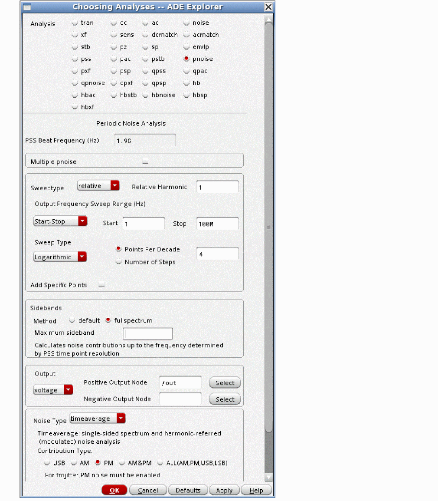
The sweep defaults to relative to the frequency of the specified harmonic of the pss analysis. The frequencies specified in the Choosing Analyses form are added to the frequency of the specified harmonic when relative is selected. In this case, the first harmonic is specified because there is no frequency multiplier on the output of the oscillator.
- Set the relative harmonic number. For an oscillator by itself, the relative harmonic is one. For an oscillator with a prescaler and you desire the output of the prescaler, the harmonic number is one. If you want the noise of the VCO without the prescaler, then the harmonic number is the divide ratio. If you have an oscillator with a frequency multiplier and you want the noise at the output of the frequency multiplier, enter the frequency multiplication ratio. If you want the noise at the output of the VCO by itself, enter one.
- Relative to the output frequency, specify a frequency offset.
- Generally, three to five points per decade in a log sweep are sufficient.
-
Setting sidebands depends on whether shooting or harmonic balance has been chosen as the pss engine.
- When harmonic balance is selected, leave the maximum sideband field blank, which causes the noise translations for all the pss harmonics to be calculated. Fullspectrum is not available for harmonic balance. Experiment with the number of harmonics and oversamplefactor to find the most efficient pss-pnoise runtime. Overview of Periodic Steady-State (pss) Analysis for more information on setting harmonics.
- When shooting is the pss engine, fullspectrum is available and recommended. Fullspectrum calculates the number of noise translations to include based on the maximum timestep in the pss analysis. By default, frequency translations through the 20th harmonic are taken into account by fullspectrum pnoise. In the unusual case where the noise calculation needs to go through a very high harmonic of the pss analysis, increase the number of harmonics in the pss form to the minimum number of harmonics that causes the noise result to not change with a larger number of pss harmonics. Generally speaking, these will be switched-capacitor circuits or sampling circuits where aliasing can go through a very high harmonic of the clock. Fullspectrum on this type of circuit will run much faster than the default pnoise simulation. The larger the number of sidebands, the larger the speed differential.
- Note that when fullspectrum pnoise is chosen, APS will be enabled in ADE Explorer. Full-spectrum will only be run in APS. It is not available in standard Spectre. APS requires additional tokens or different licensing to run compared to standard Spectre.
- Set Output to voltage.
- Select the output node.
- Set Input Sources to none. Input-referred noise is not defined for an oscillator.
- If you want noise separation, you must first select default for Method and set an appropriate number of sidebands in the Maximum sideband field. Then you can select the noise separation. Noise separation allows plotting of where specifically the noise is coming from.
- Run the simulation.
After the simulation completes, select Results - Direct Plot - Main Form in the ADE Explorer window.
- Select pnoise from the Analysis section.
- Select Output Noise from the Function section.
- Select dBc/Hz from the Units section.
- Select SSB or DSB for single sideband or double sideband respectively.
- If desired, type a list of frequencies separated by a space if you have phase noise specs at defined offset frequencies.
- If you want expressions in ADE so that this setup will plot automatically after each simulation, click the Add To Outputs check box.
-
Click Plot.
Phase noise is plotted in the waveform tool, as shown below.
Noise Separation
One of the benefits of simulation is that since the noise terms are all calculated individually, we can store the data in a way to make these individual calculations available for viewing. To see the different noise separations, select yes for Noise Separation in the pnoise Choosing Analyses form.
The default in pnoise is to calculate all the noise translations that are specified in the Maximum sideband property in the Choosing Analyses form, add all these contributions at the output, and display that total noise term. Enabling noise separation allows you to see which components and/or which frequencies contribute the most noise at the output. Once you know where the noise is coming from, you can design a solution to the problem.
Noise separation is available for shooting and harmonic balance, but not for full spectrum shooting pnoise.
When the choice is made and the simulation is run, select Results - Direct Plot - Main Form in ADE Explorer.
Viewing the total noise at the output from each sideband
This allows the measurement of the noise at the output from the individual noise input frequencies in the circuit.
When noise separation is set to yes in the pnoise Choosing Analyses form, you can also plot subsets of the total noise in order to identify where the noise is coming from. In the Direct Plot Form, select the pnoise separation result set.
To view the total noise from mixing with different pss harmonics:
-
Select Sideband Output.
Remember that the zero sideband means that the noise input is the same frequency as the noise output. Selecting the -1 sideband means that the noise that is below the output frequency that mixes with the first harmonic is plotted. -2 means that the noise frequency is below the noise output frequency, and it mixes with the second harmonic of the pss analysis. +1 means that the noise frequency is above the noise output frequency, and mixes with the first harmonic of the pss analysis.
Example:
In this case, the PSS frequency is 1.9G. In the pnoise form, relative is selected, and the relative harmonic number is 1. This means that the output noise just above the first harmonic frequency is being analyzed. When the noise output frequency is 1MHz, the zero sideband is 1MHz above the first harmonic of the pss analysis. The -1 sideband is (-1 * 1.9GHz) + 1MHz + 1.9GHz), or 1MHz. The +1 sideband is at (+1 * 1.9G) + 1MHz + 1.9GHz, or 3.801GHz. - Select V / sqrt(Hz) or V** 2 / Hz.
- Select Magnitude or dB20 in the Modifier section.
- Select one or more sidebands from the Direct Plot Form.
-
Click Plot. The results display in the waveform tool. A vertical marker has been placed so the individual results at 1MHz can be read out.

-
To see the individual contributions, select the legend at the upper left for the sideband number you want to see. To see the noise at the output with no frequency translation, select the zero sideband as shown below. The legend and the curve will highlight.
-
To see the noise that is upconverted from near zero frequency, select the -1 sideband. Selecting the -1 sideband means that the noise frequency is one times the pss frequency (the oscillator frequency) below the noise output frequency. This includes the 1/F noise that upconverts to the output.
-
To see the noise that appears by mixing with the second harmonic, select the -2 sideband.
-
To see the noise converted by mixing with the third harmonic, select the -3 sideband.
Viewing the total noise at the output for all the noise mechanisms in each noise device for one noise sideband
This capability allows you to plot the total noise from each device at each separate input frequency. This gives you an idea of not only the frequencies that are troublesome, but also the specific devices that are troublesome.
-
Select Instance Output.
- Select V / sqrt(Hz) or V**2 / Hz.
- Select linear Magnitude, or dB20.
- Select only one noise sideband.
- To plot the noise from all the different device types, select Include All Types.
- To make individual selections, choose each individual device type in the list. To select more than one device type at a time, press and hold the <Ctrl> key while you choose an additional category.
- To include only the devices you select from the schematic included, select Include None, and click the Select button to the right of Include Inst. Now select the instances you want to include from the schematic. As you select the instances, the instance name will appear in the list. Select to the right of Include inst. Now select the instances you want in the schematic. As you click the instances, the instance Name will appear in the list.
-
In the Truncate field, type in the number of traces you want to view. The instances with the largest noise contributions will be plotted.
The highlighted trace above is a plot of all the noise contributors in Q0 at the output of the circuit.
To plot the individual noise contributors form each instance from a single noise sideband
This plot splits the noise into each specific noise generator at each individual noise input frequency.
-
Select Source Output.
- Select V / sqrt(Hz) or V**2 / Hz.
- Select linear Magnitude, or dB20.
- Select only one noise sideband.
- To plot the noise from all the different device types, select Include All Types.
- To make individual selections, choose each individual device type in the list. To select more than one device type at a time, press and hold the <Ctrl> key while you choose an additional category.
- To include only the devices you select from the schematic included, select Include None, and click the Select button to the right of Include Inst. Now select the instances you want to include from the schematic. As you select the instances, the instance name will appear in the list. Select to the right of Include inst. Now select the instances you want in the schematic. As you click the instances, the instance Name will appear in the list.
-
In the Truncate field, type in the number of traces you want to view. The instances with the largest noise contributions will be plotted.
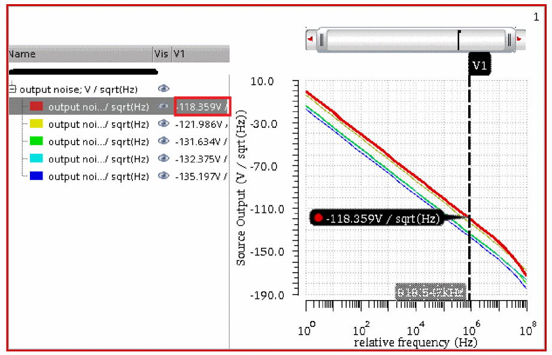
The instance name and the noise parameter are displayed in the waveform tool. See the red square in the above figure. For a table of the noise parameters, see Noise Summary.
Viewing the total noise current from each instance at the source of the noise
Instance source changes the focus from the output to the noise source itself, and plots the actual noise currents at the source for each individual noise frequency. All the noise from all the individual noise sources combined for each device is available.
-
In the Direct Plot Form, select Instance Source.
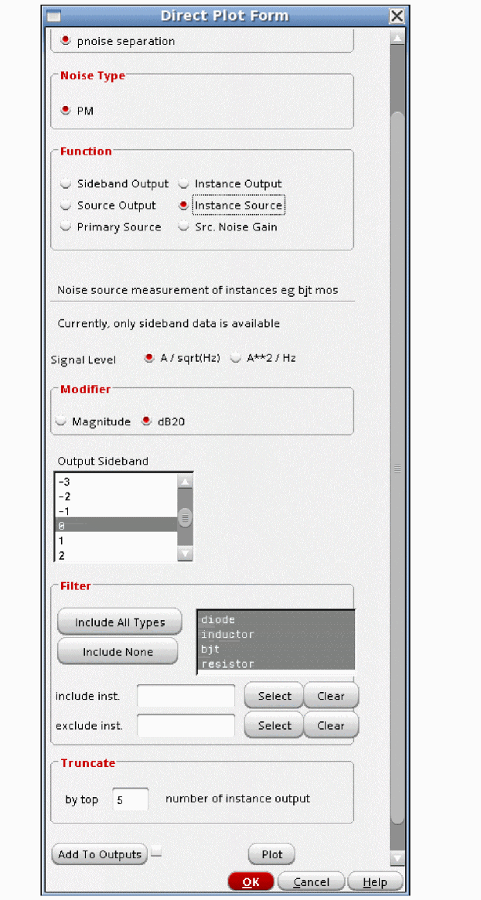 - Select V / sqrt(Hz) or V**2 / Hz.
- Select linear Magnitude, or dB20.
- Select only one noise sideband.
- To plot the noise from all the different device types, select Include All Types.
- To make individual selections, choose each individual device type in the list. To select more than one device type at a time, press and hold the Control key while you choose an additional category.
- To include only the devices you select from the schematic included, select Include None, and click the Select button to the right of Include Inst. Now select the instances you want to include from the schematic. As you select the instances, the instance name will appear in the list. Select to the right of Include inst. Now select the instances you want in the schematic. As you click the instances, the instance Name will appear in the list.
-
In the Truncate field, type in the number of traces you want to view. The instances with the largest noise contributions will be plotted. The total noise from all sources in Q0 at 1MHz offset is about -201 picoAmps per root hertz.
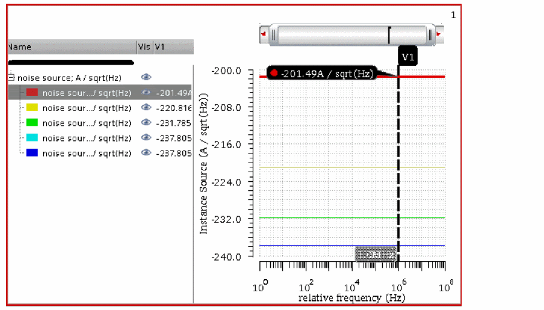
Viewing the individual noise current from each noise source within each instance at the source of the noise
This splits out the individual noise currents at the source for each individual noise source in the circuit.
-
In the Direct Plot Form, select Primary Source.
- Select V / sqrt(Hz) or V**2 / Hz.
- Select linear Magnitude, or dB20.
- Select only one noise sideband.
- To plot the noise from all the different device types, select Include All Types.
- To make individual selections, choose each individual device type in the list. To select more than one device type at a time, press and hold the Control key while you choose an additional category.
- To include only the devices you select from the schematic included, select Include None, and click the Select button to the right of Include Inst. Now select the instances you want to include from the schematic. As you select the instances, the instance name will appear in the list. Select to the right of Include inst. Now select the instances you want in the schematic. As you click the instances, the instance Name will appear in the list.
-
In the Truncate field, type in the number of traces you want to view. The instances with the largest noise contributions will be plotted. The individual noise from all the different sources in Q0 at 1MHz offset is shown below. To compare the noise with the total noise shown in the previous section, add the noise power (not the voltage) from the individual noise sources by taking the square root of the sum of the squares.
Viewing the transfer function from the individual sources of the noise to the output of the circuit
-
In the Direct Plot Form, select Src Noise Gain.
- Select V / sqrt(Hz) or V**2 / Hz.
- Select linear Magnitude, or dB20.
- Select only one noise sideband.
- To plot the noise from all the different device types, select Include All Types.
- To make individual selections, choose each individual device type in the list. To select more than one device type at a time, press and hold the Control key while you choose an additional category.
- To include only the devices you select from the schematic included, select Include None, and click the Select button to the right of Include Inst. Now select the instances you want to include from the schematic. As you select the instances, the instance name will appear in the list. Select to the right of Include inst. Now select the instances you want in the schematic. As you click the instances, the instance Name will appear in the list.
-
In the Truncate field, type in the number of traces you want to view. The instances with the largest noise contributions will be plotted. The gain from all the noise sources to the output is plotted. Only the noise sources from Q0 are visible. For a table that lists the noise parameter for each device type, please see page 123 (77 of 234) of this document.

Commonly Used Pnoise Options
Lorentzian
There are two ways of looking at phase noise. One way is to think of measuring the spectral output of the oscillator with a network analyzer. In this case, as the frequency gets close to the oscillator frequency, the amplitude starts going up, levels off, and then drops as the oscillator frequency is passed. In this case, the noise cannot be larger than the oscillations themselves, which is 0 dBc. If this is how you view phase noise, set the lorentzian option to yes.
If you think in terms of jitter, in one cycle of the oscillator output, because of the noise, you can calculate one standard deviation of the timing. If you go two cycles, and you integrate the noise with respect to time, you get twice as much noise power, or about 1.4 times the noise voltage or jitter. When you get to an infinite number of oscillator cycles, the jitter also becomes infinite. As you increase the time, you are lowering the noise frequency, and in this case, as the time becomes large, the frequency becomes very low. At infinite time, you get infinite jitter, and this occurs at zero offset from the carrier. Jitter is just another way of looking at phase noise. In other words, the phase noise can easily exceed the carrier amplitude (0 dBc) as the offset frequency becomes small because it is heading to infinity at zero frequency offset. If this is how you view phase noise, set the lorentzian option to no.
lorentzian=yes means calculate the leveling off. lorentzian=cornerfreqonly calculates the continuously rising phase noise, but it places a marker on the phase noise curve at the frequency where the phase noise would level off. no causes the phase noise to continue to rise as the offset frequency approaches zero.
Comparison Between Lorentzian Yes and No
As noted above, lorentzian causes leveling off of the phase noise at low frequency.
Note that when lorentzian=no, the phase noise curve goes above 0 dBc. This would mean that the noise is larger than the amplitude of the oscillator, which is not physical. This is because pnoise is a small-signal analysis that does not recognize the large-signal limits of the circuit like clipping. It is similar to AC where you can specify an input magnitude of 1 megavolt, and see 10 megavolts on the output.
or more information regarding the other pnoise options, refer to the Commonly Used Pnoise Options.
To plot cycle jitter or cycle-to-cycle jitter
-
On the Direct Plot Form, select pnoise jitter from the Analysis section.
-
Select Jc or Jcc from the Function section.
The frequency range will default to the range set in the Choose Analyses form. -
Click Plot.
The jc or jcc calculation is shown as a label that is added to the waveform tool.
Noise Type=sampled(jitter)
This analysis gives an instantaneous measurement of jitter at a threshold voltage on the timedomain waveform. This is useful for measuring the jitter of an oscillator that is driving a digital component.
-
First, set up the pss analysis. For more information on this, see Overview of Periodic Steady-State (pss) Analysis.
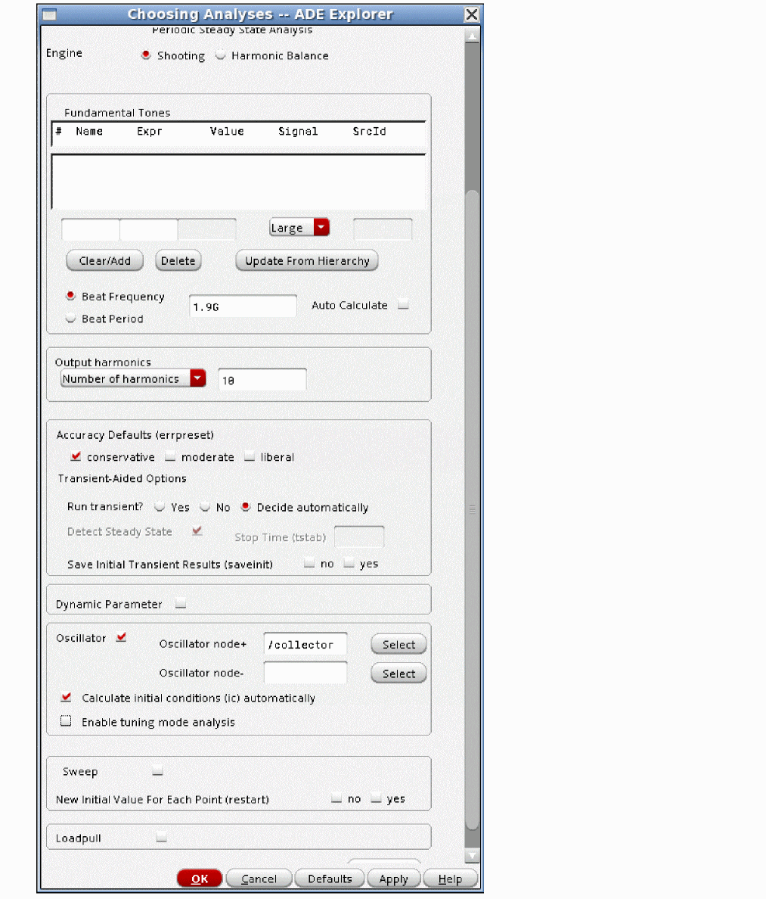 -
Next, set up the pnoise Choosing Analyses form, as shown below.
On the pnoise Choosing Analyses form:- Select sampled(jitter) from the Noise Type drop-down list.
- Select Edge Crossing.
- Specify a threshold voltage for the time-domain waveform in the Threshold Value field.
- Specify a crossing direction.
- The stop frequency should be very close to half the oscillator frequency.
-
The start frequency should be approximately the frequency where the phase noise reaches 0 dBc.
- Run the simulation.
After the simulation completes, select Results - Direct Plot - Main Form in the ADE Explorer window.
- Select pnoise sampled from the Analysis section.
- Select Edge Phase Noise from the Function section.
- If desired, select Add To Outputs.
- Click Plot.
The edge phase noise is plotted in the waveform tool, as shown below.

This plot will agree with timeaverage mode single sideband results except for small differences at large offset frequencies.
Now plot the cycle jitter (Jc) or the cycle-to-cycle jitter.
This will enter an expression into ADE that will evaluate with the cycle or cycle-to-cycle jitter in the ADE outputs section.

Periodic Transfer Function Analysis (PXF)
Small-signal Versus Large-Signal Analysis for Conversion Gain
One way to measure conversion gain is to apply the LO and the RF signals in harmonic balance (hb) or quasi-periodic steady-state (qpss) analysis and calculate the full large-signal response at each RF input frequency, and then plot the output as a function of the sweep frequency. While this works, because all the large-signal effects and many harmonics are calculated, the required time for the simulation can be significant.
The alternative is to use a small-signal approach similar to the xf analysis. The xf analysis runs considerably faster than running the transient at multiple frequencies because it ignores the large-signal effects. In circuits with frequency translation, the xf analysis is unusable because the calculation is a linear calculation based on the DC bias point. In pxf analysis, instead of using the DC bias point, the pss solution with just the LO is used as the basis of the calculation. The large-signal analysis calculates the harmonics of the single input that causes the frequency translation to occur, (usually the LO signal or sample clock) and then pxf is run after the pss analysis to calculate the conversion gain. The conversion gain is calculated based on the nonlinearity in the pss solution. The overall time savings can be very significant.
In pac, we apply the LO signal (or the sample clock) in the pss analysis, and then drive the input with the small-signal pac analysis and measure the mixing products that come out. While this is very intuitive, the output display can be very confusing to read when the conversion gain near several pss harmonics is desired. Pxf changes the focus to the output. One output frequency at a time is considered. Pxf is a two step process. First, the input frequencies that cause the output frequency are calculated. For example, imagine a system with a 1GHz LO signal, and a 1MHz output signal. In PXF, we specify 1MHz as the output frequency. In this system, inputs at 1MHz, 999MHz, 1001MHz, 1999MHz, 2001MHz, and so on will cause 1MHz to be produced at the output. Next, the forward conversion gain from all those input frequencies is calculated. Since the input frequencies are different, the conversion gain is different for every input frequency. Using pxf, you can measure the conversion gain near a number of LO harmonics (or clock harmonics) at the same time.
Example: Conversion Gain (Down conversion)
Consider the double-balanced diode mixer shown below.
The RF input source has the frequency and amplitude set to variable names in order to allow changing the test setup without needing to change the circuit. This is suggested for all the sources used in the circuit that might need to be changed. This allows changes in frequency or amplitude from the ADE Explorer environment without the need to change the schematic itself.
The property list is shown below.
The easiest way to get the variables list into ADE Explorer is to select Variables - Copy From Cellview. To set the values, select the value field to the right of the variable, type in the desired value, and press Enter. When you have set the variables, if you want to add the values back into the cellview, in the ADE Explorer window, select Variables - Copy To Cellview, and then perform a Check and Save in the schematic.
In this example, the LO frequency is 1GHz and its amplitude is 1.4 volts peak. This is +13 dBm, which is a common drive level for diode mixers. The design RF input frequency is 1.1GHz, but it is disabled because the amplitude is set to 0 (zero). Setting either the frequency or the amplitude to zero disables the production of that waveform from the port.
The basic strategy is to apply the signal that causes the frequency translation in the pss analysis, and then measure the forward conversion gain using pxf analysis.
The pss analysis needs to be set up first. The example below shows a single input at 1GHz with 10 harmonics. For more information on setting up the pss analysis, see the pss section at the beginning of this chapter.
Next, the pxf analysis needs to be set up. Like xf, the frequency range specified in the Choosing Analyses form is the output frequency range. Maximum sideband in this example is set to the number of harmonics in the pss analysis so that all the conversion gain terms from all the pss harmonics are present in the output of pxf.
Once the analyses are set up, the simulation can be run. When the simulation finishes, select Results - Direct Plot - Main Form in the ADE Explorer window.
The example below shows a typical Direct Plot Form.

The pxf Direct Plot Form is a bit non-intuitive. The Choosing Analyses form specifies the output frequency range and the output node. Pxf calculates the transfer functions from all the independent sources in the circuit to that output node. Therefore, to plot, you select the source in the circuit that you want the forward conversion transfer functions to be displayed. When the source in the schematic is selected, the waveform is displayed.
Note that all the short line segments are the forward conversion gain from the selected source (the input source in this case) to the output. Because the sweep was a log sweep, the data is displayed on a log plot.
To make the plot more useful, set the X-Axis to linear. Move the mouse cursor over one of the numbers on the X Axis, click the right mouse button, and deselect Log Scale.
The LO frequency is 1GHz. To measure the conversion gain, go to the input frequency on the X Axis, and read the gain from the display. Note that the gain above and below 1GHz is just less than -5dB. The rectangle in red above shows where to look. The gain near 3GHz is just above -20dB. The green rectangle above show where to look. The gain near 5GHz is about negative 35dB. The gain near the even harmonics is quite small.
Now position the markers at the desired input frequency for the conversion gain measurement. To do this, move the mouse cursor near the trace at the desired input frequency, and type m.
As shown in the figure below, the conversion gain is about -6dB above and below the 1GHz LO frequency. This is very common for diode mixers.
Example: Conversion Gain (Up Conversion)
The process is similar for an up-conversion mixer. In this case, the output frequency is just above the first harmonic of the pss analysis, as shown below.
The conversion gain plot is shown below. Note that the gain is very similar from near 0 Hz and near the image at just above 2GHz.
Overview of Simulation Capabilities
The primary application of pxf is to measure conversion gain. Pxf is a small-signal analysis. It calculates the small-signal conversion gain. If you need a large-signal measurement of conversion gain, then use a large-signal analysis like harmonic balance (hb) or quasi-periodic steady-state (qpss) analysis. Pxf measures gain in a way that requires some thought for most engineers who are accustomed to connecting an input, driving the system, and measuring what comes out. This is the idea of pac, where we capture the large-signal operating point in pss, and then drive a small-signal input, and measure the mixing products that are produced. If you think of this methodology, to measure the conversion gain around several harmonics usually requires a separate simulation near each harmonic.
Pxf was created to allow the measurement of the conversion gain transfer functions near all the pss harmonics in the same simulation run. In pac, we have one input frequency at a time, and output mixing products at multiple output frequencies are calculated. In pxf, we focus on one output mixing product at a time, and measure the input frequencies that cause that output frequency, and measure the forward conversion gain from all those input frequencies to the single output frequency. Multiple output frequencies are usually analyzed in a pxf analysis. Unlike pac where the output can be seen at every node in the circuit, pxf calculates the gain only from all the independent sources in the circuit. Therefore, to measure a conversion gain, you select the source instance from the Direct Plot Form instead of selecting a net.
For example, imagine a mixer with an LO frequency of 1GHz. Now, imagine the down conversion case where the output is 1MHz. Given the LO frequency, inputs at 1MHz, 999MHz, 1.001GHz, 1.999GHz, 2.001GHz, 2.999GHz, 3.01GHz, and so on cause an output at 1MHz. Depending on the circuit, all those different input to output paths have different gain from each input frequency to the output at 1MHz. In pxf, you specify the highest pss harmonic to calculate the transfer functions from in the maximum sideband field in the Choosing Analyses form. All these different input frequencies are called sidebands in pxf.
Pxf has three different modes, which are set by the selection in the Specialized Analysis section of the Choosing Analyses form. Specialized Analysis = None measures the conversion gain that occurs given the nonlinearity created by large-signal in the circuit. Timeaverage allows the measurement of AM to PM conversion for circuits, and is useful for measuring the power supply ripple to output phase transfer function. Sampled is seldom used, and supplies a measurement of the instantaneous gain when the gain is repeatedly measured at a single phase (point in time) of the periodic large signal.
PXF used with Harmonic Balance PSS
When harmonic balance is used for the pss analysis, the harmonics of the circuit are calculated directly by the harmonic balance engine.
Think of a perfectly linear circuit with a single output frequency to be analyzed. Because the circuit is perfectly linear, in the pss analysis when harmonic balance is used, the frequency domain solution only has the harmonic at the input frequency at every net in the circuit. No other harmonics are created because the system is perfectly linear. Because the circuit is linear, a gain function exists for the case where there is no frequency translation. Because the circuit is perfectly linear, no frequency translation can occur. Therefore, all the conversion gain terms have zero gain.
Now imagine a real circuit with a single small input amplitude signal at 1GHz. In the frequency domain with harmonic balance selected in pss, 1GHz is present along with 2GHz, 3GHz and the other higher order harmonics. Because the input signal is small, the signals at the harmonics of 1GHz in pss are very small. If 100MHz is set as the output frequency, the conversion gain is small from 900MHz and 1.1GHz. Since the higher harmonics are even smaller than the amplitude of 1GHz, the conversion gain form 1.9 and 2.1HGHz along with the higher harmonics plus and minus 100MHz are also very small.
The conversion gain might look like the figure below. Only the first three harmonics are shown. The black harmonics are the pss harmonics, and the red mixing products are pxf conversion gain measurements, which are called sidebands.
Now imagine that the 1GHz signal is larger. If the input goes up 10dB, the first harmonic goes up 10dB, In the frequency domain, if harmonic balance is selected in pss, the second harmonic would come up 20dB, the third harmonic would come up 30dB, and so on. If the conversion gain is calculated to 100MHz, the conversion gain is larger because all the harmonics have become larger. The circuit is more nonlinear. This is illustrated below. The black harmonics are the pss harmonics, and the red conversion gain calculations are pxf input frequencies with conversion gain measurements, which are called sidebands.
Thus, the harmonic content from pss harmonic balance is a measure of the nonlinearity of the circuit, and forms the basis of the calculation for the conversion gain in pxf.
PXF used with Shooting PSS
Shooting is a variation of the transient analysis where the individual timepoints are calculated, and the entire waveform is iterated to calculate the steady-state waveform. The transient algorithm works by using all the equations at all the nodes in the circuit where the assumption is made that the sum of the currents is zero at every node and at every timepoint. Ohm's law is observed, and the equations look like I=V*G where G is the conductance. In general, the matrix form of the equations is constructed, so the system of simultaneous equations becomes [G]*[V]=[I] where [G] is a square matrix, and [V] and [I] are column matrices. To solve for [V], the [G] matrix is inverted and this matrix multiplies the [I] matrix to solve for all the voltages on all the nodes. At the end of the pss analysis, all the solution matrices are saved as data to be passed to the small-signal analyses. The result is that the conductance is calculated and saved for every nonlinear component in the circuit at every timepoint.
Below is the I-versus-V curve with three different values for the input voltage. The center, positive peak of the input, and the negative peak of the input are shown. The input amplitude is small.
In the above figure, the amplitude of the 1 GHz signal causes small variations in the slope of the tangent of the nonlinear curve as the input signal is varied in amplitude. The slope is the conductance. Because the circuit has a nonlinear device, the conductance of the device varies slightly from timepoint to timepoint in the pss analysis. Because the input signal at 1.0GHz is small, the variation in conductance from timepoint to timepoint is small. The slope changes just a little bit as the input signal is moved over its range.
Now imagine that the 1GHz signal is 10dB larger. A 10dB change is a linear factor of about 3.16. The larger amplitude of the input causes a larger portion of the nonlinear device curves to be traversed, and thus the variation in conductance becomes larger. The circuit becomes more nonlinear, and the conversion gain is larger. This is illustrated below.
Therefore, the variation in the conductance of the devices from timepoint to timepoint in PSS Shooting contains information about how strongly a circuit translates frequencies, and this is used by the pxf small-signal analysis to calculate the small-signal conversion gain.
Normal Conversion Gain Measurement (Specialized Analysis = None)
This mode is used to make a normal conversion gain measurement.
The figure above illustrates a down-conversion case where the output is just above zero Hz.
In the figure above, the top spectrum in black represents the harmonics created by the pss large-signal analysis. The negative and positive frequencies are shown and the DC component is in the center. The colored arrows show the transfer functions from the different input frequencies to the output frequency that is shown on the bottom axis. Pxf takes the maximum sideband property from the pxf Choosing Analyses form, and calculates the specified sidebands, which are input to output conversion gain transfer functions. In this example, maximum sideband is set to three.
The sideband numbers indicate which harmonic number is being mixed with for the transfer function calculation. Zero means that there is no frequency translation. One is the mixing product that occurs with an input frequency shift of +1 times the pss beat frequency. Mixing frequencies to the left have negative numbers because the input frequency that causes the output is more negative than the output frequency.
For example, imagine a large-signal input at 1GHz in the pss analysis and an output frequency of 100MHz to be calculated. With no mixing, there is a gain from the sources in the circuit to the output of the circuit at 100MHz. This is called the zero sideband because there is zero frequency shift from the input to the output. This is not the same measurement as a measurement in the ac analysis because the ac only includes the DC operating point, and the pxf analysis takes into account the circuit with the LO or clock signal applied.
The input frequencies that mix with the first harmonic at 1GHz to provide an output at 100MHz are at -900MHz and 1.1GHz. The frequency that is below the zero sideband is the -1 sideband and the frequency above the zero sideband is the +1 sideband.
Similarly, there are terms that mix with the second and third harmonics.
Usually, we think of positive frequencies only. This is shown above. The negative frequency inputs are reflected up into the positive frequencies. This is the default for pxf.
Your application sets the number of sidebands that you need. If you have specs through the fifth harmonic, you need to set maximum sidebands to 5.
Frequency Sweep
This analysis is like xf, where the output frequency is varied. The output frequency range to be analyzed is specified in the pxf Choosing Analyses form. Pxf then calculates the conversion gain terms.
In addition to the frequency, there is a selection called Sweep Type. The choices are relative and absolute. When absolute is selected, the frequency range is used directly with no frequency conversion. When relative is selected, a Relative Harmonic field appears. The frequency sweep is shifted by the specified frequency of the harmonic in the pss analysis. For example, assume that the pss is at 1GHz, and a log sweep is desired above the first harmonic of the pss analysis. In this case, you need to select relative sweep, and specify 1 in the Relative Harmonic field. Next, type in 1K to 100M for the frequency range with a log sweep and 3 to 5 points per decade.
The sweep will start at 1G + 1K, and sweep to 1G + 100M using log spacing from 1K to 100M. This is illustrated below.
To use a log sweep below the first harmonic, use the same frequency range, and type in -1 as the relative harmonic. This is illustrated below.
Maximum Sideband
Sideband is the name of the pxf conversion gain terms. The sideband number is the pss harmonic number that is mixed with. If the sideband number is negative, the input frequency is more negative than the output frequency. If the sideband is positive, the input is more positive than the output frequency.
Conceptually, an infinite number of conversion gain terms exist when a single output frequency is analyzed in a nonlinear system. From the practical point of view, usually only a small number of conversion gain terms need to be measured near the LO frequency and a small number of harmonics.
There is a property in the Choosing Analyses form called Maximum sideband that is used to define how many mixing products should be calculated. If Maximum sideband is 0, the pxf analysis will only contain the frequency that appears without mixing or aliasing of any type. This is not equivalent to a linear AC analysis because pxf takes into account the instantaneously varying nature of the LO or sample clock signal because of the large signal being present in the pss analysis.
When Maximum sideband is 1, the inputs without frequency translation and the inputs that mix or alias with the first harmonic of the pss analysis are present in the pxf analysis. When Maximum sideband is 10, the pxf analysis includes mixing through the 10th harmonic of the pss analysis. When shooting is used for the pss analysis, the number of sidebands can be any number up to four times the number of harmonics specified in the pss analysis. When harmonic balance is selected, up to the number of harmonics in the pss analysis can be specified.
Setting Harmonics and Sidebands
Shooting
The pss analysis, when shooting is selected, has a minimum of 200 timepoints, so it inherently has frequency domain content through the 100th harmonic of the pss beat frequency. Maximum harmonic is a pss post-processing property that specifies how many harmonics to calculate in the Fourier transform of the waveform in pss. If the number of harmonics is zero, it just means that no frequency domain information should be calculated in the simulation. If the number of harmonics is 10 or less, there is no effect on the PSS waveform. When maximum harmonics gets larger than 10, the minimum number of timepoints in the pss analysis is increased. 20 timepoints in the period of the highest harmonic are forced. Thus, if maximum harmonics is raised above ten, the pss waveform gets more timepoints which increases the accuracy of the waveform, at the cost of longer runtimes and more memory required to run the pss simulation.
In order for the pxf analysis to correctly measure conversion gain, the wave shape at the highest mixing harmonic needs to be accurate, so with the default settings in shooting pss, up to 40 sidebands can be accurately calculated in the pxf analysis. In most cases, only a small number of sidebands needs to be calculated, and so with shooting, you can usually count on the pxf result to be accurate.
Although this is very unusual, if you need more than 40 sidebands when you are using shooting pss, you need to set the maxacfreq option in the pss analysis to the pss beat frequency times the number of sidebands requested in the pxf analysis, or alternatively, set the number of pss harmonics to the number of sidebands in pxf divided by four. Either method works to set the maximum timestep in the pss analysis as required for the pxf analysis to be accurate.
Harmonic Balance
When Harmonic Balance is selected in the pss analysis, only the harmonics specified in the pss Choosing Analyses form exist in the solution. In the pxf analysis, because only the harmonics specified in the pss-hb Choosing Analyses form exist, the maximum sideband term can only be the number of harmonics specified in the pss analysis or less. Usually, when Harmonic Balance is selected in the pss analysis, the Maximum sideband field in pxf usually should be left blank which calculates all the conversion gain calculations from all the harmonics in the pss analysis. The Direct Plot Form is then used to display just the conversion gain terms you want.
Note that with harmonic balance, the number of harmonics (and oversample factor if you have non-sinusoidal waveforms) in the pss analysis needs to be determined. Start with a number of harmonics in the pss based on an estimate of how many harmonics the circuit actually produces with your input waveform, and run the pss and pxf analyses. Remember that for non-sinusoidal waveforms, oversample factor also needs to be set greater than one. For more information, see the pss section at the beginning of this chapter or the hb analysis at the beginning of Chapter 3. Run the analysis and make the desired measurement. Now increase the number of harmonics by roughly 50% and run the simulation again. If the answer does not change, then you had enough harmonics originally, and you might actually be able to decrease the number of harmonics from the original setting. If you have non-sinusoidal waveforms, increase the oversample factor to between four and eight before increasing the number of harmonics to find the minimum value for both oversample factor and harmonics.
Pxf is usually preferred to pac when you need to measure both the passband and the image. Below is a plot of the pxf and pac output for an image reject mixer with a 1.9GHz LO and a 100MHz IF. The passband is at 1.8GHz and the image is at 2GHz.
On the left is a pxf plot when the input port is probed, thus measuring the gain from the input to the output of the image reject mixer. To read the gain, go to the input frequency, and read the gain on the vertical scale. At the passband frequency of 1.8GHz the gain is about 8dB. In the image at 2GHz, the gain is about -70 dB. The LO frequency is at the junction of the red and blue traces.
To measure passband and image gain in pac, the input frequency starts at 1.7GHz and stops at 2.1GHz. At 1.7GHz, the output frequency is -200MHz, but pxf reflects the negative frequencies to the positive frequency domain by default. The trace starts at point A above, and sweeps down to zero at point B. The input frequency is 1.9GHz and the output is zero Hz. As the input continues above 1.9GHz, the output frequency becomes positive, and follows the curve to point C. Most people find the curve from pac to be more confusing than the curve from pxf, so if you need to measure both the passband and the image, or if you need to measure the conversion gain near the pss harmonics, pxf is recommended.
Note that in the pac result above, you cannot just add the gain values at a specific frequency. If the frequency was 100MHz, you do have two different gain values of about +5dB and -70 dB. The output frequency for the +5dB curve is -100M, and the output for the -70dB curve is +100MHz. Since the frequencies are different, you cannot just add the two gain numbers.
Pxf can measure the gain near may harmonics at the same time by increasing the maximum sideband parameter in the Choosing Analyses form. Below is an example of conversion gain through the fifth harmonic. Your application will determine the number of sidebands to set.
Note that the conversion gain is still relatively high near the third harmonic.
Pxf can also be used to measure the conversion gain from the battery that supplies power to the output. All the gain and conversion gain terms should be below unity, or a potential oscillator is created. In the plot below, the gain from the bias source to the output at the IF frequency of 100MHz is above 0dB. This circuit is a potential oscillator.
Pxf is useful for up-conversion applications as well, with the limitation that a small-signal gain measurement is made. This is shown below.
The difference is that the output frequency is just above the first harmonic. The rules for the sidebands are the same. -1 means that the input frequency is shifted down from the output frequency by -1 * pss beat frequency.
Usually, we think in terms of the positive frequency domain, which is shown below.
AM to PM measurement (Specialized Analysis = Modulated)
This is used to measure the am to pm conversion. Normally, it is used for oscillators to measure the am to pm conversion from the power supply, but it can also be used for driven circuits. In both cases, remember that pxf is a small-signal analysis. If you need a large-signal measurement, use the transient, hb, or pss analysis.
In modulated analysis, the output type should be ssb/am/pm so that all the gain terms can be calculated. Generally, the AM to PM gain is desired.
Conceptually, if the output is ssb (single sideband) then the PM output cannot be measured.
The gain from SSB, AM, or PM inputs to the output frequency is the only gain measurement available.
When the output is AM, both the sidebands above and below the chosen harmonic are calculated.
This can measure SSB, AM, or PM to an AM output.
When the output is PM, the SSB, AM, or PM to PM gain can be measured. Generally, the AM to PM gain is desired.
Sampled PXF
The basic idea is to measure the conversion gain as if the conversion gain was repeatedly measured at the same phase (instant in time) in the periodic large signal that is driving the circuit over an infinite number of cycles of the large signal. This measurement is impossible to duplicate in the lab. The primary application is for measuring the gain from the power supply to the output which is driving a digital circuit or a comparator that is triggered at a specific voltage level.
ADE Implementation
This section jumps from the theoretical to the practical with examples of how to use the individual analysis types we just covered. The focus is only on the pxf Choosing Analyses form so you can see where the individual settings are made. For examples with all the steps shown, see the examples section that follows this section.
PXF for a Normal Conversion Gain Measurement
Here is an example of the Choosing Analyses form for a normal conversion gain measurement.
- At the top of the form the PSS beat frequency of 1.9GHz is shown.
- Sweeptype can be relative or absolute. The default for driven circuits is absolute, and for oscillators it is relative. The selection that is being used is shown to the right of the sweeptype selection.
- The frequency sweep range is always an output frequency range. It is not a sweep in the traditional sense of connecting an input, sweeping over a frequency range, and measuring the output. Instead, it is an output frequency range to be analyzed. At each output frequency in the sweep, the input frequencies that will mix with the pss harmonics to cause that output frequency are calculated, and the forward conversion gain is calculated.
- Linear and log spacings are provided. Generally, Auto should be avoided because it will always calculate 50 frequency points. Usually, a much smaller number is needed, so it is recommended that you set linear or log, and control the resolution yourself.
- Although there are choices for the Sidebands selection, it is usually better to leave the setting at Maximum sideband, and if you need a small subset of the output results, use the Direct Plot Form to filter the results. For shooting, you can use up to 40 sidebands with no additional settings. If you need more than 40 sidebands, either set the number of pss harmonics to the number of sidebands divided by 4, or set the pss option maxacfreq to the pss beat frequency times the number of sidebands in pxf. For harmonic balance, choose a number of harmonics in the pss form, and leave the Maximum sideband field blank. This will calculate the conversion gain from all the harmonics in the pss analysis. For harmonic balance only, run the simulation, and make the measurement in pxf. Now increase the number of pss harmonics by about 50% and run again. If the pxf result changed significantly, then you need more harmonics in pss. If it did not change, use the smallest number of harmonics that results in an stable measurement.
- The output can measure either a voltage or a current. The voltage measurement is the default. Specify the output node or nodes in the circuit. If the output is a current select probe for the output, add an iprobe from analogLib (a current probe) in series with the output in the schematic, and specify the instance name in the Choosing Analyses form.
- When Specialized Analysis is set to None, a normal conversion gain measurement is made.
PXF Modulated (AM to PM Conversion)
Here is an example of a modulated Choosing Analyses form.
- The functions of the form above the Specialized Analyses section are the same as for a normal conversion gain measurement.
- In the Specialized Analyses section, select Modulated. The bottom part of the form redraws.
- In general, set the Output Type to SSB/AM/PM. This allows all the different transfer functions to be calculated, with only a small performance penalty.
-
In modulated, the input and output frequencies need to be identified. The best way to do this is to click the Choose button to the right of the field, select the input frequency from the list of available frequencies, and click OK. Then repeat this action for the output frequency range, as shown below.
PXF Sampled
Sampled pxf is used to measure the conversion gain at a specific point in time of the periodic signal during the pss analysis. In general, this analysis is applied to digital circuits so that the instantaneous conversion gain from the power supply to the output can be measured. Below is the time-domain waveform of a 3.3 volt digital logic circuit.
In this case, a threshold of 1.65 volts would be appropriate.
Below is an example of a sampled setup for a 3.3 volt logic circuit.
- The functions of the form above the Specialized Analyses section are the same as for a normal conversion gain measurement.
- In the Specialized Analyses section, select Sampled. The bottom part of the form redraws. If your output is a current, add an iprobe (current probe) from analogLib in series with your output in the schematic, and select the iprobe as the probe selection. If you have a voltage, select voltage, and specify a node or nodes in the schematic.
- The normal use of the form is to specify a voltage threshold for the measurement in the threshold field, and not specify additional timepoints. The example above is for a 3.3 volt logic circuit where the switching threshold is 1.65 Volts.
- The Crossing Direction can be set to all, rise, or fall.
- In the case of multiple crossings, as shown in the first pss waveform shown above, all the crossings will be calculated with a maximum of 16 by default. If you have more than 16 crossing events, set the number of crossings you have in the Maximum Samples field. In this example, there are two crossing events, so no entries are required in the Maximum Samples field.
-
If you have specific pss times you want to measure, specify a list of pss simulation times in the Additional Timepoints field. Separate the entries with a space. An example of using only the timepoints is shown below. A threshold of -10V is well outside the anticipated voltage on the output node which disables the timepoint selection using a voltage threshold.
PXF Options
Below is the Pxf options form.
The below options are occasionally used.
Solver
The solver option is used only for driven circuits. The default solver is the turbo solver.
When hb is used as the engine in pss, leave this option at the default.
When shooting is used, sometimes when the pxf output frequency is very close to the frequency of one of the harmonics in the pss result, warning messages will appear in the pxf output warning that the accuracy might not be good enough. If you see these messages, select the std solver, which has better ability to handle frequencies that are very close to a harmonic in the pss, but which takes longer to run than the turbo solver.
Oscsolver
The oscsolver option is used only for oscillators. The default solver is the turbo solver.
When hb is used as the engine in pss, leave this option at the default.
When shooting is used, sometimes when the pxf output frequency is very close to the frequency of one of the harmonics in the pss result, warning messages appear in the pxf output warning that the accuracy might not be good enough. If you see these messages, select the std solver, which has better ability to handle frequencies that are very close to a harmonic in the pss, but takes longer to run than the turbo solver.
For very large oscillator designs, the ira oscsolver may take less memory and run faster with no loss in accuracy, however, it is less robust for convergence compared to turbo or std.
Hbprecond_solver
This option is only available only when harmonic balance is selected in PSS and APS is used.
The basic solver is the only solver available in standard Spectre. autoset is the default solver when APS is used. This solver is faster, but occasionally stagnates. When stagnation is detected, APS automatically switches to the basic solver, and prints a message in the Spectre output window. If you have stagnation, it will save a small amount of time to set this option to basicsolver.
Freqaxis
freqaxis specifies whether you want to see the negative frequency axis or not.
The analysis calculates the input frequencies and forward conversion gain, so in and absin are reasonable choices. in displays the negative frequency axis. absin (absolute value of the input) displays positive input frequencies. This is the default.
The input frequencies are plotted on the positive frequency axis.
To read the conversion gain, go to the input frequency on the curve, and measure the conversion gain.
Below is an example of freqaxis set to in.
Note that the data is the same as before. It is just displayed with the negative frequency axis present. The negative frequencies have not been reflected up to the positive frequency domain. The waveform display shows the negative frequency axis now.
If you select out, all the inputs at the different frequencies are plotted on the same output frequency range scale. This is not recommended.
The waveform tool shows all the different input frequencies on the same output frequency scale. Again, this is not recommended.

The following options are not normally used.
Tolerance
Leave this option at the default value.
Pxf uses an iterative solver to calculate the conversion gain terms. Any iterative solver needs an error tolerance to specify when to stop iterating because the solution is accurate enough. The tolerance option specifies that accuracy for pxf. For shooting, the default tolerance is 1e-9. For driven circuits where HB is the pss engine, the default is 1e-6. For oscillators where hb is selected for the pss engine, the default is 1e-4.
Gear_order
Resgmrescycle
Leave this option at the default.
Annotate
This option controls the level of detail in the Spectre output log. Less detail is on the left. More detail is on the right.
Stimuli
This option is not implemented at the current time.
Save
This option is not implemented at the current time.
Nestlvl (Shooting and Harmonic Balance)
This option is not implemented at the current time.
AdditionalParams
In some cases when shooting pss is used for an oscillator, PXF results that are close to a pss harmonic may be questionable. In this case, type osc_version=dts in the additionalParams field to solve the issue.
additionalParams is typically used for new features that are being beta tested. This field expects keyword=value pairs.
For more information about the other options, type spectre -h pxf at the command prompt in a Unix shell window.
Examples for Driven Circuits
PXF Normal Conversion Gain Measurement
Consider the following circuit:
The circuit is a double-balanced down-conversion mixer with a 1.9GHz LO.
The Edit Object Properties form for the input port is shown below.
Using variables to set the frequencies and amplitudes is suggested because you can change the circuit setup by changing variable values in ADE Explorer without needing to change the circuit itself.
ADE Explorer has the variables set to appropriate values, as shown below.
This setup causes the LO to be driven, and both RF inputs to be turned off for the pss analysis by setting the RF frequencies to zero. You can disable a signal for the pss analysis by setting its frequency to zero.
Using PXF Analysis for Conversion Gain Measurement
Set up the pss analysis with just the large signal that causes the frequency translation to occur, which is generally the LO signal or the sample clock. For more information, refer to Overview of Periodic Steady-State (pss) Analysis section at the beginning of this chapter. Regarding whether to use shooting or harmonic balance, pick the analysis that produces the smallest runtime or best convergence. In general, shooting is recommended for systems that have sharp edges, and harmonic balance is recommended for systems that are more sinusoidal.
Set up the PXF analysis, as follows.
- Specify an appropriate output frequency range for your circuit.
- Generally, either linear or log spacing should be used. Auto usually takes more frequency point than are required, and thus extends the runtime.
- For the pxf analysis, as a general recommendation, set the Maximum sideband term to the same value you uses for the maximum number of pss harmonics. Alternatively, the Maximum sideband field could be set to the highest harmonic of the pss analysis that mixing products are desired to be calculated. This is generally determined by the application. If you only need one or two output mixing product, and you are using shooting in the pss analysis, choose Select from range, and highlight the sidebands you want to calculate. Setting Maximum sideband for pxf is usually not critical as long as enough sidebands are calculated to measure the desired input frequency and forward conversion gain (called a sideband). The Direct Plot Form allows the plotting of the individual input sidebands as will be shown later.
- Set the output nodes, as shown in the example. If the Negative Output Node field is left blank as shown above, the global ground node is used by the simulator for the reference node. If you have an output current, add an iprobe from analogLib in series with the output, and click probe in the output section. Then specify the iprobe in the Output Probe Instance field.
- Now run the simulation.
-
After the simulation completes, select Results - Direct Plot - Main Form. The Direct Plot Form is displayed.
In the Direct Plot Form:
- Select pxf from the Analysis section.
- Select dB20 from the Modifier section.
-
Select the voltage or current source from the schematic. Note that when you plot pxf results, you are selecting an instance, not a node. You will get the conversion gain results for the source you select in the circuit. The example below shows the conversion gain from the input source in the circuit.
The waveform window is displayed, as shown below.
Since the Sweeptype was log, the data is displayed with a log axis in the waveform tool. In some cases, a linear X Axis is easier to read. To accomplish this, move the mouse cursor over one of the numbers on the X Axis and right-click. Move to Log Scale and click to deselect log. This is shown below.
To read the conversion gain, move to the desired input frequency, and read the gain off the Y axis. The gain at 1.91GHz is about 15dB. The place to look is in the red rectangle above. Alternatively, position your mouse cursor on the trace at the input frequency, and read the value in the cursor readout. You can also place a marker at the input frequency to read out the conversion gain. To do this, move your mouse cursor near the trace at the input frequency, and type m. -
The conversion gain near the third and fifth harmonics of the LO is also reasonable high as well. The gain near the third harmonic is near -5dB, and the gain near the third harmonic is near -25 dB. See the red and blue boxes below.
-
In the Direct Plot Form, select New Win from the Plotting mode drop-down list and select the DC source that is supplying power to the circuit.
The waveform window is displayed, as shown below.
Note that the gain is about +5dB at 150MHz. This circuit is a potential oscillator.
PXF Modulated (AM to PM conversion)
Consider the digital circuit below.
-
The input source has variables to define the frequency. This allows the frequency to be changed from the ADE Explorer environment without needing to change the circuit. The properties list is shown below. The rise and fall times are set to a small fraction of the period of the signal. This is done so the rise and fall times do not produce nonphysical, excessively fast risetimes, which cannot be realistically produced in a circuit anyway. The pulse width is set to produce a 50% duty cycle square wave.
-
The default values for the variables are set in ADE Explorer. The input frequency is 2.5GHz.
-
To run a pxf analysis, first a pss analysis needs to be run. For more information, see the pss section at the beginning of this chapter.
-
Now set up the pxf modulated analysis.
- First, select Modulated at the bottom of the Choosing Analyses form. This forces relative Sweeptype.
- The objective is to measure AM to PM conversion on the 2.5GHz output when there is power supply ripple. Remember that in pxf, the frequency range is an output frequency range. Accordingly, the relative harmonic is 1, and the output frequency is analyzed just above the output at 2.5GHz.
- Usually, it is better to select linear or log spacing, and set your own sweep resolution. Automatic usually takes more points than are needed, thus extending the runtime.
- Set the number of sidebands equal to the number of pss harmonics.
- Specify an output node or nodes, as usual in pxf. If you have an output current, add an iprobe in series with the output, and click probe in the Output section. Then specify the instance name of the iprobe in the Output Probe Instance field.
- Always set the Output Type to SSB/AM/PM. This allows all the SSB/AM/PM to SSB/AM/PM components to be plotted.
-
Click the Choose button to the right of the Input Modulated Harmonic List field. Select the input frequency as shown below. This example measures the power supply ripple at low frequency to PM output near the 2.5GHz carrier, so the input frequency range is 1K to 100M.
-
Click the Choose button to the right of the Output Modulated Harmonic field. Select the output frequency, as shown below. This example measures the power supply ripple at low frequency to PM output near the 2.5GHz carrier, so the output frequency range is 2.5G to 2.6G.
-
Click OK, and run the simulation. When the analysis completes, select Results - Direct Plot - Main Form from the ADE Explorer window.
- Select pxf modulated from the Analysis section.
- At the current time, to measure AM to PM conversion when the input is near zero Hz, the Input option should be set to SSB.
- Set the Output option to PM.
- Select Voltage Gain from the Function section
- Select Magnitude from the Modifier section.
-
Click the DC source in the circuit that supplies power to the circuit. The measurement plots.

- Although the vertical axis is labeled mV/V, it is actually plotting milliRadians of phase change per volt of power supply change. 318 milliRadians is about 18 degrees of phase change for a 1 volt change on the power supply. [(0.318/6.28)*360] Note that pxf is a small-signal measurement, and this applies only for small variations of the power supply voltage.
Sampled PXF
Sampled pxf is seldom used. It is provided so that conversion gain measurements from the power supply to a digital output that is periodic, and sampled at the threshold point every cycle. The typical threshold is the VDD/2 switching point for further logic circuits.
Consider the digital circuit below.

-
The input source has variables to define the frequency. This allows the frequency to be changed from the ADE Explorer environment without needing to change the circuit. The properties list is shown below. The rise and fall times are set to a small fraction of the period of the signal. This is done so the rise and fall times do not produce nonphysical, excessively fast risetimes, which cannot be realistically produced in a circuit anyway. The pulse width is set to produce a 50% duty cycle square wave.
-
The default values for the variables are set in ADE Explorer. The input frequency is 2.5GHz.
-
To run a pxf analysis, first a pss analysis needs to be run. For more information, see the pss section at the beginning of this chapter.
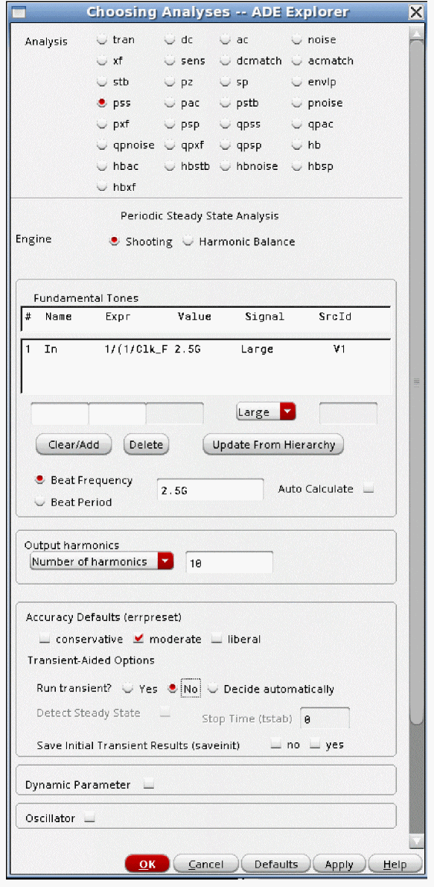 -
Now set up the pxf sampled analysis.
- First, select Sampled at the bottom of the Choosing Analyses form.
- The objective is to measure the conversion gain on the 2.5GHz output at the threshold crossing of the digital output when there is power supply ripple. Remember that in pxf, the frequency range is an output frequency range. Accordingly, the output frequency is analyzed just above the output at 2.5GHz.
- Usually, it is better to select linear or log spacing, and set your own sweep resolution. Automatic usually takes more points than are needed, thus extending the runtime.
- Set the number of sidebands equal to the number of pss harmonics.
- Specify an output node or nodes, as usual in pxf. If you have an output current, add an iprobe in series with the output, and click probe in the Output section. Then specify the instance name of the iprobe in the Output Probe Instance field.
- Click Select to the right of the Net+ field and select the output net in the schematic.
- Type in the threshold voltage. In 3.3 volt logic, 1.65 volts is appropriate.
- Choose the crossing direction. Rising, falling, and all crossing events are selectable. This example shows all, which will calculate the transfer functions for both the rising and falling edges.
- If you want specific times in the pss waveform to be measured, type those times into the Additional Timepoints field. Separate the times with a space. This is not shown in the example.
-
Click OK and run the simulation. When the analysis completes, select Results - Direct Plot - Main Form from the ADE Explorer window.
-
Select pss results, and plot the time-domain waveform. This is shown in the previous graphic. Plotting the waveform establishes which time corresponds to which edge.
- For this example, the rising edge is about 77nsec, and the falling edge is about 275nsec.
-
Now select pxf results. If desired, select dB20. Select the crossing time from the list at the bottom. The example shows the rising edge.
-
Click the DC source in the circuit that supplies power to the circuit. The measurement plots.
-
To measure the conversion gain, go to the input frequency on the plot, and make the measurement. Below, the plot is zoomed in to the results from low frequency, like power supply ripple. At 2MHz, the gain is about -0.5dB.
Examples for Oscillators
Conversion Gain From Power Supply to the Output Frequency
Consider the circuit shown below.
On the Choosing Analyses form:
-
Set up the pss analysis, as shown below. For more information, refer to Overview of Periodic Steady-State (pss) Analysis at the beginning of this chapter.
-
Set up the pxf analysis, as shown below.
- Relative from the Sweeptype drop-down list is the default when an oscillator simulation is set in the pss analysis.
- Specify the output harmonic in the Relative Harmonic field.
- Set the frequency range to a frequency range that is relevant for your needs. In this example, the frequency range is from 100Hz to 100MHz above the first harmonic of the oscillator frequency.
- Select logarithmic from the Sweep Type drop-down list.
- Specify 3 to 5 in the Points Per Decade field.
- Set the Maximum sideband option to the same value as you have set for the maximum harmonics in the pss analysis.
- Click OK.
- Run the simulation.
-
When the simulation completes, select Results - Direct Plot - Main Form. The Direct Plot Form is displayed.
In the Direct Plot Form: - Select pxf in the Analysis section.
- Select sideband from the Sweep section.
- Select dB20.
- Select your input frequency range in the list in the Input Sideband section.
-
Select the power supply source in the Schematic window.
The waveform is plotted, as shown below.
To read the gain, go to the input frequency, and read the gain from the Y axis. The gain is about 47dB at 100KHz in this example.
Modulated PXF; Measuring AM to PM Conversion and Controlling Spurious Response
The focus of this section is controlling the spurious response caused by the power supply ripple. Consider an oscillator shown below.
The first part of this section uses hb, which is equivalent to pss. The reason hb is used is because hb has the ability to run an oscillator with ripple so the spurious output of the oscillator can be measured. Pss does not have this capability. Using hb to solve for the spurious output usually takes longer than a pss with a modulated pxf analysis. Pss-pxf modulated will be used to measure the conversion gain from the power supply ripple to the output phase of the oscillator. Once the spurious output is measured with hb, then running pss and modulated pxf can be used to reduce the conversion gain from the power supply to the output, thus reducing the spurious output. Using this combination of analyses saves time.
- On the left are two sources. The bottom source is the DC source that supplies power to the circuit. This source is in the yellow rectangle above. The upper source is a source that injects ripple into the simulation. This source is in the red rectangle above.
-
The ripple frequency and amplitude are set using variable names so the values can be changed in the ADE Explorer environment without needing to change the circuit. The ripple source properties are shown below.
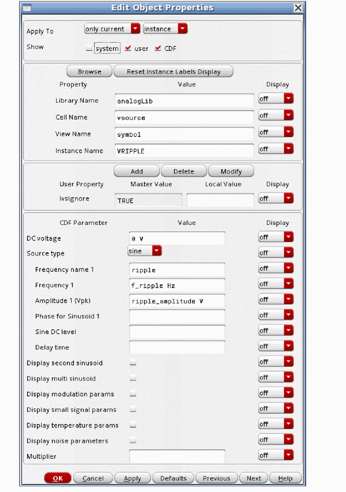 -
ADE Explorer sets the frequency to 1MHz and the amplitude to 30mV peak.
-
First, measure what is happening with the ripple applied in the circuit. See the hb section for more details. The hb setup is as below.
-
Run the simulation, and plot the output spectrum.
-
Place a marker by moving your mouse cursor over the tip of the oscillator frequency, and typing m. Now move your mouse cursor over one of the spurs, and type d. This places another marker, and causes the delta readout shown above to be displayed.
The spurious output is about 33.3dB down from the oscillator output frequency. - Now that we know what we really have, and how much this is above the specification, we can switch to a faster method to reduce the spurious output. This will be done using pss and modulated pxf.
- Now measure the AM to PM conversion using pss and pxf modulated. This will tell you the gain from the power supply to the PM output.
-
First, disable the ripple source by setting its frequency to 0 in ADE Explorer, and disable the hb analysis used to measure the spurious response.
-
Set up a pss analysis with just the oscillator signal. For more information, see the pss section at the beginning of this chapter.
-
Now set up a pxf modulated analysis, as follows:
- At the bottom of the form, set Specialized Analysis to Modulated, and set the Output Type to SSB/AM/PM.
- At the top of the form, Modulated forces a relative frequency sweep. The frequency sweep range is always an output frequency range in pxf. Since the gain from the power supply ripple to the output above the oscillator frequency is desired, the output harmonic is 1 and the frequency range is just above the first harmonic.
- It is usually better to select either a linear or a log sweep, and define your own resolution because automatic usually takes more points and therefore a longer runtime than is usually needed.
- Set Maximum sideband to the same value that you used for harmonics in the pss analysis.
- Specify the output node or current as usual. If you have an output current, add an iprobe in series with the output, and click probe in the Output section. Then specify the instance name of the iprobe in the Output Probe Instance field.
-
Now, set the input frequency by clicking Choose to the right of the Input Modulated Harmonic List field.
The Choose Harmonic window is displayed.
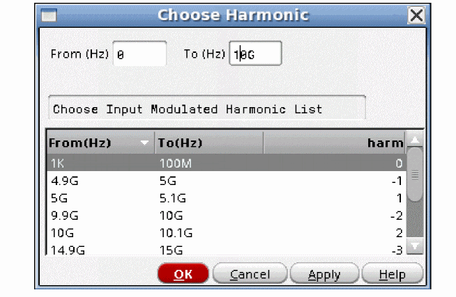 - In the Choose Harmonic window, select the frequency range and click OK.
-
To set the output frequency, click Choose to the right of the Output Modulated Harmonic field.
The Choose Harmonic window is displayed.
- In the Choose Harmonic window, select the output frequency range and click OK.
- Click OK in the Choosing Analyses form and run the simulation.
-
When the simulation completes, select Results - Direct Plot - Main Form in the ADE Explorer window.
-
Currently, to measure the AM to PM conversion, you set Input to SSB, and Output to PM. Select dB20, if desired. Select the ripple source in the schematic. The AM to PM gain is plotted.
- Position a marker at the ripple frequency to measure the gain. The gain in this example is about 3.9dB. As you implement circuitry to reduce the ripple, you can run the pss-pxf modulated analysis in less time than it takes to run the hb analysis with both the oscillator and the ripple. When you have a ripple reduction circuit in place, you can re-run the two-tone hb analysis to verify the fix works.
Sampled PXF: Measuring Conversion Gain at a Threshold Crossing in a Ring Oscillator
Sampled pxf can be used to calculate the gain from the power supply to the output when the output is defined as the periodic point where the gain is measured at the same phase (time) of the oscillator as if it were sampled repeatedly at exactly the same phase (time) over an infinite number of cycles. This is the conversion gain from the power supply to a single point in the output waveform, as opposed to the averaged measurements from before. Usually, this is applied to ring oscillators where relatively sharp edges are present in the output, and the output is driving some kind of digital logic. In this case, only the point where the threshold for the digital logic on the output matters. All the rest of the points in the waveform are either above or below the threshold, and thus do not influence the threshold event time.
-
Consider the 4-stage differential voltage-controlled ring oscillator below.
-
First, set initial conditions on one of the stages of the ring to force a DC operating point. In the ADE Explorer window, select Simulation - Convergence Aids - Initial condition.
-
The Select Initial Condition Set window appears. Since this is a differential oscillator, there are two outputs from one stage. One of those outputs is set low, and the other is set high. This forces a starting condition for the tstab interval.
-
When the Select Initial Condition Set window is displayed, the nodes with the IC defined are highlighted in the schematic, as shown below. The fourth stage output is set.
-
Now set up the pss analysis. For more information, please see the pss section at the beginning of this chapter.
-
Set up the sampled pxf analysis, as shown below.
- Select Sampled from the Specialized Analyses drop-down list.
- Because the pss is set for an oscillator, relative is set for pxf. The output frequency is just above the first harmonic of the oscillator in this example.
- Usually, it is better to select Linear or log, and define your own sweep. Auto usually takes more frequency point than are needed, thus extending the pxf runtime.
- Set Maximum sideband to the same value used for pss harmonics.
- Select the output net or current, as usual. If you have an output current, add an iprobe in series with the output, and click probe in the Output section. Then specify the instance name of the iprobe in the Output Probe Instance field.
- Below the Sampled selection, define the output type, and set the output again.
- Specify an appropriate threshold. This ring oscillator has a differential output, so 0 volts is an appropriate threshold.
- If desired, set the crossing direction. This example calculates all the crossings of 1.65 volts.
-
Click OK in the Choosing Analyses form and run the simulation. When the simulation completes, select Results - Direct Plot - Main Form. The Direct Plot Form appears.
-
Plot the pss time-domain output waveform(s) so you can see the times of the transitions
. - For the V4M signal, the rising edge is about 184psec, and the falling edge is about 445psec.
- Now plot the pxf sampled results.
-
If desired, select dB20.
- Select the event time.
-
Now select the power supply source in the schematic. The results plot, as shown below.
-
To read the result, go to the input frequency on the pxf plot, and read the gain. This is the voltage gain from the power supply to the output just above the first harmonic of the oscillator at a single timepoint in the waveform. If there is voltage gain from the power supply to the output, it shows up as ripple on the output, which will affect the timing of the output crossing. The gain at 1MHz input frequency is shown below.
Periodic Stability Analysis (PSTB)
Pstb is provided to measure the small-signal loop gain in the presence of a large signal. As an example, think of an amplifier. When the input signal is small, the amplifier is largely linear, and stb and pstb should agree. However, when the input signal becomes large, the amplifier becomes more nonlinear. This will change the loop gain of the feedback system. Pstb measures the loop gain with the large signal present in the system.
An additional application is for measuring the loop gain of oscillators. In most oscillators, the power supplies define the output level. The nonlinearities created by the oscillation cause the loop gain to shift slightly from the linear stb analysis results. We have seen cases where multiple stable oscillation frequencies resulted from the nonlinearities introduced by the oscillations themselves, and this showed up in the pstb result. The large signal oscillation is solved in the pss analysis, and the small-signal stability analysis is run in the pstb analysis.
Example: Variation in Loop Gain of an Opamp with Swept Input Signal Amplitude
Consider the opamp circuit below.
To use pstb, an iprobe from analogLib (single ended) or a diffstbprobe from analogLib (differential) needs to be added in series with the feedback path. Note the arrow in the current probe is in the same direction as the direction of the feedback.
The input source to the circuit has the frequency and amplitude set to variable names in order to allow changing the test setup without needing to change the circuit. This is suggested for all the sources used in the circuit that might need to be changed. This allows changes in frequency or amplitude from the ADE Explorer environment without needing to change the schematic itself.
The property list for the input source is shown below.
The easiest way to get the variables list into the ADE Explorer is to select Variables -> Copy From Cellview. To set the values, select the value field to the right of the variable, type in the desired value, and press Enter. When you have set the variables, if you want to add the values back into the cellview, in the ADE Explorer window, select Variables - Copy To Cellview, and then perform a Check and Save in the schematic.

The input frequency for this example is 100KHz and its amplitude is 100 millivolts peak.
The basic strategy is to apply the signal that causes the distortion in the pss analysis, and then measure the loop gain using the pstb analysis.
The pss analysis needs to be set up first. The example below shows a single input at 100KHz with 10 harmonics. The amplitude is swept from 0.1 volts to 1.5 volts peak with a step value of 0.2 volts. For more information, see the pss section at the beginning of this chapter. This will characterize the amplifier at a range of different input amplitudes. At each amplitude, both the pss and pstb analyses are run.
Next, the pstb analysis needs to be set up. The frequency range depends on your application. The Probe Instance is the iprobe from analogLib in the circuit. If you have a differential circuit, use diffstbprobe from analogLib. diffstbprobe allows the measurement of common-mode and differential-mode loop gain.
Once the analyses are set up, the simulation can be run. When the simulation finishes, select Results - Direct Plot - Main Form in the ADE Explorer window.
The example below shows the Direct Plot Form. If you want dB for the loop gain amplitude plot, plot the magnitude and phase separately This example shows dB for the loop gain magnitude plot.
If you select Add To Outputs, an expression is entered under the Maestro tab of ADE Explorer so that the next time you simulate your circuit, this measurement plots automatically.
Here is the output voltage of the opamp versus input voltage for the sweep. The curve begins to compress at 1.1 volts peak.
Here is the loop gain and phase curve for the 0.1 volt input.
Note that the DC phase is 180, and not zero. From feedback theory, we would expect zero. So what causes this difference? In feedback theory, we always assume there is a forward and reverse transfer function, and an inverting summing junction with a gain of unity. In feedback theory, we plot the forward and reverse transfer functions only. When the phase is zero, and then applied through the inverting input, the phase becomes 180. In the circuit, we cannot separate out the summing junction. Thus, the condition of instability is a linear magnitude of 1 and a phase of zero, or multiples of 360 degrees.
Vertical marker V2 has been placed at (nearly) unity gain (0dB). The phase is about 87.8 degrees. The distance to zero phase is 88 degrees. This is the phase margin for this circuit at low input amplitude. The unity gain frequency is about 800KHz
Below is the plot with a 1.1 volt input.
The DC gain has dropped from about 66dB to about 42 dB. The unity gain frequency has dropped from about 800KHz to about 112KHz. The phase margin has actually improved.
Overview of Simulation Capabilities
Pstb is used to measure the loop gain with a large signal applied to the circuit. First, the large signal is applied in pss. An iprobe (single-ended) or a diffstbprobe (differential) is placed in the circuit in series with the feedback path. Both probes are in analogLib. Pstb applies a voltage to the source(s) in the probe, and measures the amplitude and phase of the signal across the probe. This is the loop gain of the circuit. diffstbprobe allows the measurement of common-mode and differential-mode gain in the differential circuit.
Pstb is supported for both shooting and harmonic balance pss.
In some cases, placing the probe in the circuit can break some local feedback paths. If this happens, the loop gain calculation will be incorrect. If you are unsure if this could be happening in your circuit, place the probe in a different position in the loop. If the loop gain stays the same, both results are correct. If it changed, try a third point in the circuit. When the two points agree, you have the loop gain.
Setting Harmonics and Sidebands
Shooting
The pss analysis, when shooting is selected, has a minimum of 200 timepoints, so it inherently has frequency domain content through the 100th harmonic of the pss beat frequency. Maximum harmonic is a pss post-processing property that specifies how many harmonics to calculate in the Fourier transform of the waveform in pss. If the number of harmonics is zero, it just means that no frequency domain information should be calculated in the simulation. If the number of harmonics is 10 or less, there is no effect on the PSS waveform. When the maximum harmonics gets larger than 10, the minimum number of timepoints in the pss analysis is increased. 20 timepoints in the period of the highest harmonic are forced. Thus, if the maximum harmonics is raised, the pss waveform gets more timepoints which improves the accuracy of the waveform at the cost of longer runtimes and more memory required to run the pss simulation.
In order for the pstb analysis to correctly measure conversion gain, the wave shape at the highest analysis frequency needs to be accurate, so with the default settings in shooting pss, up to 40 times the pss beat frequency can be used as the maximum frequency in pstb. If you need a higher stop frequency, either set the number of harmonics to maximum frequency in pstb/4*pss beat frequency, or set the pss option maxacfreq to the stop frequency in pstb.
Harmonic Balance
When Harmonic Balance is selected in the pss analysis, only the harmonics specified in the pss Choosing Analyses form exist in the solution. In the pstb analysis, because only the harmonics specified in the pss-hb Choosing Analyses form exist, the maximum frequency term can only be as high as the highest frequency harmonic specified in the pss analysis. If you need a higher maximum frequency in pstb, you need to specify more harmonics in the pss analysis.
ADE Implementation
This section jumps from the theoretical to the practical with examples of how to use pstb. The focus is only on the pstb Choosing Analyses form so you can see where the individual settings are made. For examples, with all the steps shown, see the examples section that follows this section.
PSTB Setup
Here is an example of the Choosing Analyses form for a normal loop gain measurement

- At the top of the form the PSS beat frequency of 100KHz is shown.
-
The frequency sweep range specifies the limits and spacing of the loop gain measurement. Note that with this maximum frequency of 100M, either the pss option maxacfreq needs to be set to 100M, or the number of pss harmonics needs to be set to 250. Maxacfreq forces 5 timepoints in the period of the frequency specified for maxacfreq. PSS harmonics above 10 forces 20 timepoints in the period of the highest harmonic. In this example, the pss beat frequency is 100K, and the highest frequency in pstb is 100M, or a ratio of 1000. Since pss harmonics force four times as many timepoints as maxacfreq does, to get equivalent runs, you need 1000/4 or 250 harmonics in pss.
- Linear and log sweeps are provided. Generally, log sweeps are used. The number of points depends on how rapidly the loop gain changes with frequency in your circuit. High Q circuits will need more resolution than shown in this example.
-
A probe must be used in the circuit and specified in the Probe Instance field. For single-ended circuits, an
iprobefromanalogLibshould be used. For differential circuits, adiffstbprobeshould be used. Whendiffstbprobeis used, you will have an additional choice in the Choosing Analyses form that allows the selection of differential or common-mode measurements of loop gain.
PSTB Options
Below is the pstb options form.
Solver
The solver option is used only for driven circuits. The default solver is the turbo solver.
When hb is used as the engine in pss, leave this option at the default.
When shooting is used, sometimes when the pstb analysis frequency is very close to the frequency of one of the harmonics in the pss result, warning messages will appear in the pstb output warning that the accuracy might not be good enough. If you see these messages, select the std solver, which has better ability to handle frequencies that are very close to a harmonic in the pss, but which takes longer to run than the turbo solver.
Oscsolver
The oscsolver option is used only for oscillators. The default solver is the turbo solver.
When hb is used as the engine in pss, leave this option at the default.
When shooting is used, sometimes when the pstb analysis frequency is very close to the frequency of one of the harmonics in the pss result, warning messages appear in the pstb output warning that the accuracy might not be good enough. If you see these messages, select the std solver, which has better ability to handle frequencies that are very close to a harmonic in the pss, but takes longer to run than the turbo solver.
For very large oscillator designs, the ira oscsolver may take less memory and run faster with no loss in accuracy, however, it is less robust for convergence compared to turbo or std.
Hbprecond_solver
This option is only available only when harmonic balance selected in PSS and APS is used.
The basic solver is the only solver available in standard Spectre when harmonic balance is selected. autoset is the default solver in harmonic balance when APS is used. This solver is faster, but occasionally stagnates. When stagnation is detected, APS automatically switches to the basic solver, and prints a message in the Spectre output window. If you have stagnation, it will save a small amount of time to set this option to basicsolver.
The following options are not commonly used:
Tolerance
Leave this option at the default value.
Pstb uses an iterative solver to calculate the loop gain at the specified frequencies. Any iterative solver needs an error tolerance to specify when to stop iterating because the solution is accurate enough. The tolerance option specifies that accuracy for pstb. For shooting, the default tolerance is 1e-9. For driven circuits where HB is the pss engine, the default is 1e-6. For oscillators where hb is selected for the pss engine, the default is 1e-4.
Gear_order
Resgmrescycle
Leave this option at the default.
Annotate
This option controls the level of detail in the Spectre output log. Selections to the left in the form produce less detail. Selections to the right in the form add increasing detail.
Save
This option is not implemented at the current time.
Nestlvl (Shooting and Harmonic Balance)
This option is not implemented at the current time.
AdditionalParams
In some cases, when shooting pss is used for an oscillator circuit, pstb results near a pss harmonic may be questionable. To solve this issue, type osc_version=dts in the additionalParams field.
additionalParams is typically used for new features that are being beta tested. keyword=value pairs are expected in this field.
For more information about the other options, type spectre -h pstb at the command prompt in a Unix shell window.
Oscillator Example
For the differential oscillator circuit below, a diffstbprobe has been placed at mirror locations in the differential circuit. This is shown in the red box below.
-
First, a pss analysis needs to be set up. For more information, refer to the pss section at the beginning of this chapter.
-
Now set up the pstb analysis. The resolution of this sweep is quite high.
The frequency sweep range, and the number of points will be determined by your circuit. In this case, from linear stb analysis, all the interesting variations started at 1GHz. Narrow peaks were detected, which forced many points in order to resolve the amplitude of the peaks. - Now run the simulation. When the simulation completes, select Results - Direct Plot - Main Form in the ADE Explorer window.
-
Now the loop gain and phase are plotted using the Direct Plot Form.
-
Now, the plot of the loop gain and phase is shown. The red trace is loop gain, and the blue trace is the phase.
- A vertical marker has been placed at the zero degree point on the phase curve. Note that the gain is very close to unity, and the phase is very close to zero. Remember that in pstb, the summing junction is included in the analysis, so the condition for oscillation is unity gain and zero or multiples of 360 degrees of phase. The frequency readout shows 5.1499GHz.
- For an oscillator, you should see almost exactly unity gain and a phase of almost exactly zero or multiples of 360 degrees. Small differences are to be expected because of finite resolution in the frequency sweep and/or interpolation error in the markers.
-
The plot of the output spectrum is shown below.
Note that the frequency in the large-signal pss is the same as the small-signal pstb analysis. The nonlinearities of the oscillator are taken into account in the pstb simulation.
Periodic S-parameter Analysis (PSP)
Psp is provided to measure S-Parameters for circuits that translate frequencies. All the basic assumptions of S-Parameters apply to psp, with the addition of having different input and output frequencies. Psp can be used for up or down-conversion applications.
Example: Down-Conversion Diode Mixer
Consider the double-balanced diode mixer circuit below.
The input source has the frequency and amplitude set to variable names in order to allow changing the test setup without needing to change the circuit. This is suggested for all the sources used in the circuit that might need to be changed. This allows changes in frequency or amplitude from the ADE Explorer environment without needing to change the schematic itself.
The property list for the RF input port is shown below.
The same strategy is used for the LO port.
The easiest way to get the variables list into ADE Explorer is to select Variables -> Copy From Cellview. To set the values, select the value field to the right of the variable, type in the desired value, and press Enter. When you have set the variables, if you want to add the values back into the cellview, in the ADE Explorer window, select Variables - Copy To Cellview, and then perform a Check and Save in the schematic.
The RF input frequency is disabled (by setting the frequency to zero), and the LO is at 1GHz with a 1.4 volt peak signal. This is +13 dBm, which is a common drive level for a diode mixer.
The basic strategy is to apply the signal that causes the frequency translation in the pss analysis, and then measure the frequency-shifted S-Parameters using psp. Doing this allows measuring the input match at the input frequency, and the output match at the output frequency in the same analysis. For the forward and reverse gain terms, the specified frequency translation is taken into account.
The pss analysis needs to be set up first. The example below shows a single input at 1GHz with 10 harmonics. For more information, see the pss section at the beginning of this chapter.
Next, the psp analysis needs to be set up. The frequency range depends on your application, and can be either an input frequency range, or an output frequency range. The actual frequency for each port-frequency definition will be set up later. In this example, the frequency range is just above the LO frequency at 1GHz.
Start with Port 1. In the Port # column, type 1. In the Name column, either type the instance name, or use the Select Port button just below the edit line to select the port in the circuit. In this case, Port 1 is the RF port.
Now click Choose Harmonic. In the Choose Harmonic window, select the frequency range you want associated with that port number. For the down-conversion application, The input is just above the LO frequency of 1GHz.
Click Add located to the right of the Choose Harmonic button. This adds that port and frequency definition to the list for the analysis. By convention, Port 1 defines the input frequency.
Note that Port 1 has both a port and a frequency definition associated with it. In psp, both are necessary for a port definition.
In psp, multiple port-frequency definitions can be run at one time.
The next step is to measure RF to IF conversion gain. Type 2 in the Port # column. Click Select Port, and select the IF port.
Now define the frequency range for that port. Click Choose Harmonic, and select the IF frequency from the list.
Click Add located to the right of the Choose Harmonic button. The second port-frequency definition is added to the list. By convention, Port 2 defines the output frequency range.
Now measure the RF to IF isolation. Type 3 in the Port # column. Click Select Port, and again select the IF output port. Click Choose Harmonic, and select the input frequency range.
Click Add located to the right of the Choose Harmonic button. The third port-frequency definition is added.
If a noise simulation is desired, set the Maximum sideband field to the same number of harmonics used in the pss analysis.
With the above port-frequency definitions, S11 measures the input match at the RF frequency. S22 measures the output match at the IF frequency. S31 measures the RF to IF isolation, and s21 measures the RF to IF conversion gain.
Once the analyses are set up, the simulation can be run. When the simulation finishes, select Results - Direct Plot - Main Form in the ADE Explorer window.
The Direct Plot Form is displayed, as shown below.

If you click Add To Outputs, an expression is entered under the Maestro tab of the ADE Explorer window so that the next time you simulate your circuit, this measurement plots automatically.
Here are the S11, S21, S31, and S33 plots.
The conversion loss is about 6.5 dB. The input match is about -7.9dB. The output match is about -9.8dB. The RF to IF isolation is about 84 dB.
Note that these measurements can be plotted on a Smith Chart as well. The Smith Chart capability is only available from the Direct Plot Form. under the Maestro tab of the ADE Explorer window will always plot on a rectangular plot. The Smith Chart has not been shown here because this circuit is inherently very wide band. The curve on the Smith Chart would be tiny. An example using a Smith Chart is shown later on in the Examples section.
Psp can be used for up conversion as well. To do that, just change the frequency definitions for the ports. Since IF to RF gain is usually not needed, only a two-port measurement has been set up. Note the frequency difference for Ports 1 and 2.
Now run the analysis. S11, S21, and S22 are plotted, as shown below.
Overview of Simulation Capabilities
Psp is similar to sp in that power gain measurements are made. Sp is based on the DC operating point, so it can only produce results that are linear. All the frequencies are the same for all the S-Parameter measurements in the sp analysis.
Psp uses the pss analysis results as the basis for making the S-Parameter measurement. Because the PSS result is the operating point solution for psp, the input can mix with any of the harmonics that are present in the pss analysis for the frequency-translated terms. The term SXX is not enough to describe the system. We need not only port numbers, but also the frequency needs to be defined for each port definition.
In the example in the preceding section, the LO was at 1GHz and the specified frequency was just above the first harmonic of the LO. In the psp definition for each port, both the port name and the frequency that is associated with that measurement need to be defined.
Noise analysis is available in psp, and is the same as pnoise. Please see the pnoise chapter for noise information.
Setting Harmonics and Sidebands
Shooting
The pss analysis, when shooting is selected, has a minimum of 200 timepoints, so it inherently has the frequency domain content through the 100th harmonic of the pss beat frequency. Maximum harmonic is a pss post-processing property that specifies how many harmonics to calculate in the Fourier transform of the waveform in pss. If the number of harmonics is zero, it just means that no frequency domain information should be calculated in the simulation. If the number of harmonics is 10 or less, there is no effect on the PSS waveform. When maximum harmonics gets larger than 10, the minimum number of timepoints in the pss analysis is increased. 20 timepoints in the period of the highest harmonic are forced. Thus, if maximum harmonics is raised, the pss waveform gets more timepoints which increases the accuracy of the pss waveform at the cost of longer runtimes and more memory required to run the pss simulation.
In order for the psp analysis to correctly measure conversion gain, the wave shape at the highest analysis frequency needs to be accurate, so with the default settings in shooting pss, up to 40 times the pss beat frequency can be used as the maximum frequency in psp. This will cover the vast majority of cases.
Harmonic Balance
When Harmonic Balance is selected in the pss analysis, only the harmonics specified in the pss Choosing Analyses form exist in the solution. If the harmonic balance analysis has enough harmonics to accurately capture the behavior of your circuit, the psp result will be accurate. To see if the result is accurate, increase the number of pss harmonics by about 50% and run again. If the psp result did not change, then you had enough harmonics to begin with, and might be able to be reduced. If it did change, add more harmonics and run again. For the fastest simulation, use the smallest number of harmonics that produce a stable psp result.
In the psp analysis, because only the harmonics specified in the pss-hb Choosing Analyses form exist, the maximum frequency term can only be as high as the number of harmonics specified in the pss analysis times the pss beat frequency.
ADE Implementation
This section jumps from the theoretical to the practical with examples of how to use psp. The focus is only on the psp Choosing Analyses form so you can see where the individual settings are made. For examples with all the steps shown, see the examples section that follows this section.
PSP Setup
For this example, consider an LNA-Mixer circuit shown below.
-
First, define either an input or output frequency range in the frequency sweep range fields. It is usually easier to define an input frequency range, as shown below for a 2.4GHz application.
- The frequency sweep range specifies the limits and spacing for the input frequency.
- Linear and log sweeps are provided. It is usually better to select linear or log, and specify the number of steps instead of using automatic. Automatic will run 50 frequency points, which usually is not needed for most applications.
-
Now port and frequency definitions need to be made.
- In the text field just above the Select Port button, type 1 in the Port # field. Click Select Port, and select the input port.
-
Click Choose harmonic. In the window that appears, select the input frequency range.
- Click OK.
-
Click Add. The port-frequency combination is added to the list. By convention, Port 1 sets the input frequency for psp.
-
Now define the output port-frequency combination as Port 2.
-
Repeat the process to define Port 3 as the gain from RF to IF with no frequency translation. (The RF to IF isolation.)
- Click Add to add the last port-frequency definition to the list.
- If you want a noise simulation, set Maximum sideband to the number of LO or clock harmonics. This analysis is the same as pnoise. For more information, see the pnoise section in this chapter.
PSP Options
Below is the psp options form.
None of the options are commonly used.
Solver
The solver option is used only for driven circuits. The default solver is the turbo solver.
When hb is used as the engine in pss, leave this option at the default.
When shooting is used, sometimes when the psp analysis frequency is very close to the frequency of one of the harmonics in the pss, warning messages will appear in the psp output warning that the accuracy might not be good enough. If you see these messages, select the std solver, which has better ability to handle frequencies that are very close to a harmonic in the pss, but which takes longer to run than the turbo solver.
Oscsolver
The oscsolver option is used only for oscillators. The default solver is the turbo solver.
When hb is used as the engine in pss, leave this option at the default.
When shooting is used, sometimes when the psp analysis frequency is very close to the frequency of one of the harmonics in the pss, warning messages appear in the psp output warning that the accuracy might not be good enough. If you see these messages, select the std solver, which has better ability to handle frequencies that are very close to a harmonic in the pss, but takes longer to run than the turbo solver.
For very large oscillator designs, the ira oscsolver may take less memory and run faster with no loss in accuracy, however, it is less robust for convergence compared to turbo or std.
Hbprecond_solver
This option is only available only when harmonic balance is selected in PSS and APS is used.
The basic solver is the only solver available in standard Spectre when harmonic balance is selected. autoset is the default solver in harmonic balance when APS is used. This solver is faster, but occasionally stagnates. When stagnation is detected, APS automatically switches to the basic solver, and prints a message in the Spectre output window. If you have stagnation, it will save a small amount of time to set this option to basicsolver.
Tolerance
Leave this option at the default value.
Psp uses an iterative solver to calculate the output amplitudes. Any iterative solver needs an error tolerance to specify when to stop iterating because the solution is accurate enough. The tolerance option specifies that accuracy for psp. For shooting, the default tolerance is 1e-9. For driven circuits where HB is the pss engine, the default is 1e-6. For oscillators where hb is selected for the pss engine, the default is 1e-4.
Gear_order
Resgmrescycle
Leave this option at the default. For the resgmres linear solver, there are several different options.
Annotate
This option controls the level of detail in the Spectre output log. Selections to the left in the form have less detail in the Spectre output log. Selections to the right in the form have increasing levels of detail in the output log.
Freqaxis
Psp displays all the results on the same frequency scale. The default is absin (absolute value of the input frequency) If there is a negative input frequency, in will show that frequency on the negative frequency axis. out shows the output frequency range on the X axis.
AdditionalParams
additionalParams is typically used for new features that are being beta tested. Entries in this field are keyword=value pairs.
For more information about the other options, type spectre -h psp at the command prompt in a Unix shell window.
Examples
For this example, consider an LNA-Mixer circuit shown below.
-
Set up the pss analysis. For more detail, see the pss section at the beginning of this chapter.
-
In the psp Choosing Analyses form, define either an input or output frequency range in the frequency sweep range fields. It is usually easier to define an input frequency range, as shown below for a 2.4GHz application.
- It is usually easier to define the frequency sweep range to be the input frequency range.
- Linear and log sweeps are provided. It is usually better to select linear or log, and specify the number of steps instead of using automatic. Automatic will run 50 frequency points, which usually is not needed for most applications.
-
Now port and frequency definitions need to be made.
- In the field just above the Select Port button, type 1 in the Port # field. Click Select Port, and select the input port.
-
Click Choose harmonic. In the window that appears, select the input frequency range. and click OK.
-
Click Add. The port-frequency combination is added to the list. By convention, Port 1 defines the input frequency range for the psp analysis.
-
Now define the output port-frequency combination as Port 2.
-
Note that the frequency was selected by clicking Choose Harmonic, and selecting the output frequency range as shown below.
-
Next, click Add. This adds the port-frequency combination as Port 2 in the list. By convention, Port 2 defines the output frequency range for the psp analysis
-
Repeat the process to define Port 3 as the gain from RF to IF with no frequency translation. (The RF to IF isolation).
- If you want a noise simulation, set Maximum sideband to the same value that was used for the LO or clock harmonics in the pss analysis. This is the same analysis as pnoise. For more information about pnoise, see the pnoise section in this chapter.
-
Now run the simulation. When the simulation completes, select Results - Direct Plot - Main Form in the ADE Explorer window.
- Select psp from the Analysis section.
- To plot S-Parameters, select SP from the Function section. In this case, Port 1 is the input port at the RF frequency, Port 2 is the output port at the IF frequency, and Port 3 is the output port at the RF frequency.
- In the Plot Type section, several choices are available. The input match (S11) can be plotted on the Smith Chart. Select Z-Smith from the Plot Type section.
-
Now, click the S11 button. S11 appears on the Smith Chart.
The length of the vector from the center of the circle to the curve is the magnitude of the reflection coefficient. In the above plot, the input match becomes better at high frequency because the vector is shorter. Most LNAs are deliberately mismatched because a lower noise figure can typically be obtained with a small mismatch. - There are two useful zoom functions for the Smith Chart. typing the f key fits the actual data to the Smith Chart. <Shift>-F fits the unit circle, as shown above.
-
Now plot S21 on the Smith Chart. It displays outside of the unit circle.
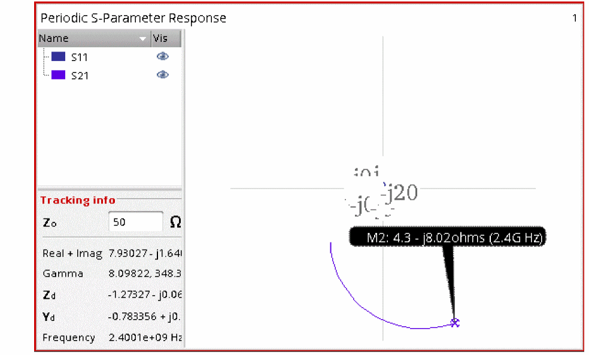 -
Now plot S11, S21, S22, and S31 on a rectangular plot. The conversion gain is about 19.1dB. The input match is questionable. The output match is not good, but it does not matter because the output is at low frequency. The RF to IF isolation is about 84dB.
-
When you select Kf, because this is a 3-port analysis, the Direct Plot Form shows that Kf can not be plotted. Kf is defined for a 2-port simulation only. If you removed the RF to IF S-parameter measurement in this example, and converted to a 2-port simulation, you still would not be able to plot the data. Kf and B1f are defined only for amplifiers where the input and output frequency are the same.
Swept Input Power In a PA
For the next example, consider a power amplifier.

-
First, set up the pss analysis. In this case, the input power is swept. For more information, see the pss section at the beginning of this chapter.
-
Now define the input frequency and input port for psp. When a sweep is run in pss, the psp frequency sweep will switch to single point automatically.
-
Click Choose Harmonic. In the window that appears, select the input frequency and click OK.
-
Click Add. The port/frequency combination is entered in the list.
-
Repeat for the output port/frequency combination.
-
If you want a noise analysis, set Maximum sideband to the same value used for pss harmonics. This analysis is the same as pnoise. Please refer to the pnoise section earlier in this chapter for details.
-
Click OK, and run the simulation. When the simulation completes, select Results - Direct Plot - Main Form in ADE Explorer. The Direct Plot Form is displayed.
- Select pss from the Analysis section.
- Plot the compression curve for the amplifier.
-
The compression point is shown below.
-
Now plot stability factor from the psp results (Kf).
-
The plot displayed, as shown below.
-
To make the plot more usable, move your mouse cursor over one of the numbers on the X Axis, and click the right mouse button and select Swap Sweep Var from the context menu.
-
A new window appears. Type the frequency value in the X Value field and click OK.
Kf is plotted. The amplifier is stable when the gain is greater than one and the stability factor is greater than one.
B1f is also available. When B1f is greater than zero, and the gain is greater than one, the system is stable.
Both plots show increasing stability as the signal amplitude gets larger.
- Reltol: This value is used as a maximum value in the shooting window. The value used in the tstab interval is set by the option reltol.
- Lteratio: For conservative, 10 is used in the shooting window unless the option reltol is set to 1e-4*10/3.5 or smaller. If reltol is set to 1e-4*10/3.5 or smaller, lteratio defaults to 3.5. The value used for lteratio in the tstab interval is the same as that used in the shooting window.
- Reltol: This value is used as a maximum value in the shooting window. The value used in the tstab interval is set by the option reltol.
- Lteratio: For conservative, 10 is used in the shooting window unless the option reltol is set to 2.85e-4 or smaller. If 2.85e-4 or smaller is used, lteratio defaults to 3.5. The value used in the tstab interval is the same as that used in the shooting window.
Return to top